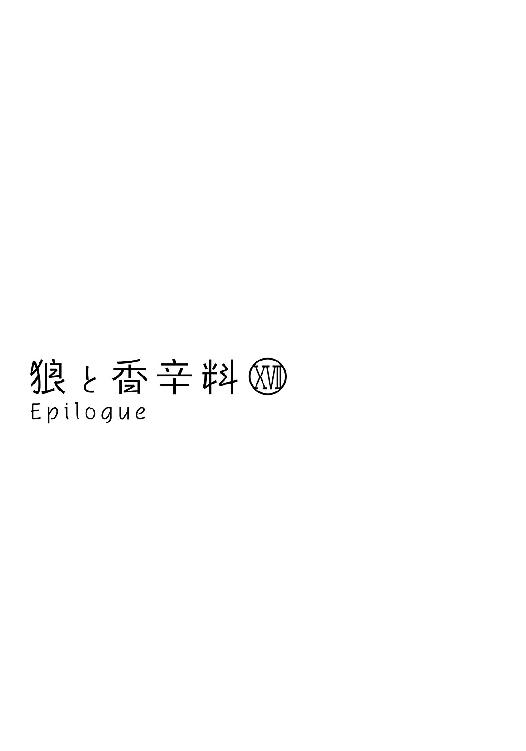
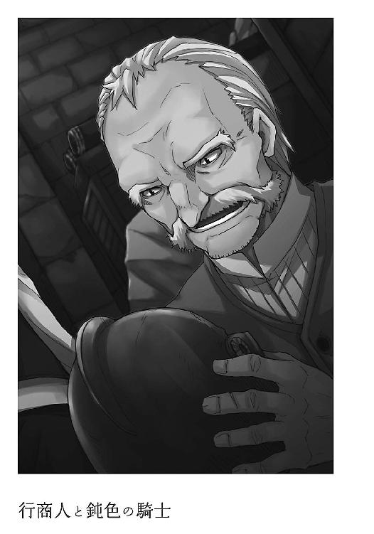

| 狼と香辛料 17 Epilogue | |
| 支倉凍砂 | |
| KADOKAWA / アスキー・メディアワークス (2013) | |

本書（電子版）に掲載されているコンテンツ（ソフトウェア／プログラム／データ／情報を含む）の著作権およびその他の権利は、すべて株式会社アスキー・メディアワークスおよび正当な権利を有する第三者に帰属しています。
法律の定めがある場合または権利者の明示的な承諾がある場合を除き、これらのコンテンツを複製・転載、改変・編集、翻案・翻訳、放送・出版、公衆送信（送信可能化を含む）・再配信、販売・頒布、貸与等に使用することはできません。
「あら騎士様。ご機嫌麗しゅう」
日の当たる石段の上で寝そべっていると、そんな声をかけられた。
我輩にはエネクという立派な名前があるのだが、そこはそれ、騎士という二つ名も悪くはない。鷹揚に鼻でため息をつき、尻尾を一振りしておいた。
「ところで司祭様は中かしら？」
手ぬぐいを頭に被り、両腕の袖をまくっている女は熊もかくやといった体格である。
確か、桶屋の女だと記憶している。この時間は朝市の後片づけも一段落ついて、昼食までの小休止といったところだろうか。祈りでも捧げにきたのかもしれない。
そんなことを思いながら、我輩は大きく欠伸をした。
「丘の辺りで遊んでた子らが、馬車が来たと言ってるんだけどね。それって、司祭様の言ってたやつじゃないかと思ってさ」
「......」
我輩は今にも閉じそうな重い瞼をなんとか押しとどめて女を見る。
やれやれ、と体を起こして、聖堂の中に戻った。
「まあしかしなんだね、子供らの話じゃ真っ黒な馬車だって言うけど......まるで幽霊馬車じゃないか。大丈夫なのかね」
我輩の先導に従う女は、口ぶりこそ疑うようなものであるが、好奇心のほうが勝っているのがありありとわかる。
見た目は熊でも、性格は猫のようである。
「騎士様はどうするんだい？ ついてかないのかい？」
この町の人間は我輩に気安く話しかけてくるのだが、いちいち答えていては身が持たぬ。
我輩は無視したまま、回廊を途中まで歩き、筆耕室の前まで来る。この聖堂の主である司祭が、大事な文章や、本を記すための部屋である。
つい先頃は春の収穫祭や聖人の祝いを行うために忙しかったが、今は平穏なものである。とはいえ、文字を書ける者の数は少なく、なさなければならぬ仕事は山ほどある。今日も筆耕室にこもってあれこれ執筆のはずである。
予定どおりであれば、だが。
「司祭様、どうやらお迎えの馬車が──」
扉が半開きになっていたので、女は軽くノックをして喋りながら部屋に入った。
言葉を飲み込んだのは、ほとんど反射みたいなものであろう。司祭様と大仰に呼ばれている我が主は、机に突っ伏して眠りこけていた。そろそろ暖かくなってきた昨今である。毎朝ベッドから出るのにも一苦労している。
それにしても、背も髪も幾分伸びたとはいえ、まだまだ寝顔は子供のそれである。
我輩は、咳払いのごとく吠えた。
「バウ！」
「っ......はっ！」
目を覚ました主は、慌てて体を起こしている。そして、きょろきょろと辺りを見回すや、戸口に立つ女と我輩に気がついた。机の上には山ほどの紙や本が並んでいるのであるが、それと一緒に縫いかけの服と、裁縫道具が置かれていた。
「あ、リフキンさん......あ、えっと......はは......」
子供がそうするように、ぐいぐいと縫いかけの服と裁縫道具を机の奥の方に押しやって、隠したつもりになっているらしい。
仮にも神に仕える身でありながら、なんとも浅ましいことである。
我が主は、何年経ってもなかなか子供っぽさが抜けきらぬ。
「別に怒りやしませんよ」
女はからからと笑う。主は恥ずかしそうに笑って身を縮めているが、我輩と目が合うと、ちょっと恨めしそうに睨まれた。我輩のせいにするとは、筋違いも甚だしい。
「あの、それで、どうされましたか？ 組合の守護聖人祭の準備なら、ボッツさんが請け負ってくれていますけど......」
「ああ、違うよ。馬車が町に向かっているみたいでね。それって司祭様が言ってたものじゃないかと思って知らせに来たんだよ」
「......馬車？」
「ええ。ほら、司祭様言ってたでしょ。なんだったか、ちょっと遠いところにお呼ばれしたって」
「......」
主はきょとんと女を見て、それから、突然大口を開けて息を飲んだ。
「来週かと──あ、あの、ちょっと、すみません！」
裾の長い服をたくしあげ、はしたなくも部屋から走って出ていった。
女は太鼓腹を落っことさないように、腹を押さえながら豪快に笑っている。
我が主は、外で羊を率いていた時のほうがしっかりしていたような気がするのである。
妖精ノーラ。
我が主の古い名はそんなもので、一時は羊を導く腕のよき羊飼いであった。
それが、今やちょっとした町の教会に集う羊どもを導く司祭である。
世の中なにが起こるかわからぬものである。
生来の生真面目さゆえか、祝祭や儀式といった厳かな場所ではなかなかに映える主であるので、概ねうまくやっている。
けれども、飢えや寒さに耐えながら、狼や狐から羊たちを見事といえる手腕で守り通す根性がありつつも、だからこそだろうか、町で暮らし始めた主は意外に間抜けなのだと我輩は知ることになった。
日にち、数字、人の名前、祈りの文句、儀式の手順。これらの概略を把握するのは目を見張るほどなのに、細かいところに手抜かりがある。
まだまだ我輩が側にいなければ一人前と呼べぬのであるから、まったくしようのないことである。
「ええーと......服と、食べ物と、あ、聖典もあったほうがいいかな。それに祈祷書も......あれ？ 靴も何足かあったほうがいいのかな？ でも、昔って靴なんて履いてなかったけど......どうしてたんだっけ......」
背中の中ほどまで伸びた金髪を撫でるように手で梳きながら、散らばった荷物を前に必死に準備をしている。主はこの町にやってきた時に着ていた服を引っ張り出していたが、明らかに大きさが合っていないそれをどうするつもりなのか。
我輩は戸口の側で、やれやれとため息をつきながら腹這いになった。
「あー、えっと、手紙も持って、えーと、それと、それと......」
野に出て羊を導いていた時は、持ち物に困ることなどあり得なかった。
教会の教えにて、持てる物を捨て、持たざる者に分け与えよとは、なるほどこういうことなのかもしれぬ。へたに物があればこそ、旅路において迷うのである。なればこそ、人生においてもしかり。
我輩がぶふっと鼻でため息をつくと、主がそれに気がついて我輩を見る。
しまった、と思った時には、丸めた前掛けを投げつけられていた。
「エネクはいつも暢気でいいね！」
この町にたどり着き、住み着いた五年間でたびたび言われた言葉である。
もちろんそんなことはない。
ただ、我輩にとって重要なことが、今日の儀式がうまくいくかどうかではなく、今日の晩飯には肉がなん切れ出るかのほうであるというだけのことである。
主が一人嵐のように部屋の中を駆け回るのをよそに、主の匂いがする前掛けの下からごそごそと這い出ると、我輩の耳は聖堂の戸口を叩く音を聞きつけた。
町の人間のノックの仕方は概ね心得ている。
この叩き方に聞き覚えはない。
外からの来客であった。
地獄よりの使者、と名づけてもよいかもしれぬ。
聖堂の前の通りはちょっとした人だかりになっていた。
この町は一時疫病によって本当に死者の町と成り果てたが、勇気ある者たちや、決して諦めない者たち、それに我が主の一助もあってそこそこの賑わいを取り戻している。
町の外からやってくる者がそれほど珍しいわけではないし、時には何十頭もの馬を連ねた商人の一団が通り過ぎることもある。
だが、それでも人々の耳目を集めていたのは、その威容にある。立派すぎるほどの黒い馬が二頭立てで引く、真っ黒い天蓋付きの馬車である。他に積み荷を載せた荷馬車が一台と、護衛の者たちであろう、屈強な男ばかりが五、六人つき従っている。
聖堂の入り口から出て、その馬車を見た瞬間、主は呆気にとられていた。
そして、それから必死に手櫛で髪を整えようとするが、元来やや癖っ毛なところもあって、まったくの無駄であった。それに、馬車から出てきたそいつを見れば、手櫛で髪をどうこうなど、涙ぐましい努力とすら呼べなかった。
背の高い女は珍しくない。
されど、貫禄ある者となれば、なかなかお目にかかれるものではない。
「エーブ・ボラン」
女は名乗る。背が高く、体は細い。ただし、痩せているというのではなく、無駄なものを徹底的にそぎ落としているといったほうがよい。女はなにがしかの香を焚き込めているふうではあったが、我輩の鼻は久しぶりに野を駆ける獣の匂いを感じていた。
「あ......えっと......」
主はまだ慌てていたものの、それなりに司祭としてうまくやってきている身であって、ようやく思考の焦点が合ったらしい。仕切りなおしの咳払いをして、背筋をぴっと伸ばして笑顔になる。
「こほん。ノーラ・アレントと申します」
主もだいぶ背が伸びたのであるが、エーブとやらはきっちり拳一つ分は高い。それに、圧倒される理由は背の他にもあろう。主のほうはこの五年で多少の肉がついたものの、目の前の狼のような女とは歴然たる差が一部に存在する。
あるいは、片や胸を張り、片や背を丸めがちなのも、影響しているのやもしれぬが。
暑さ寒さとは無縁の、装飾としての毛皮の旅装に身を包んだ貴族のようなエーブとやらは、そんな主のことを上から下まで見ると、軽くため息をついた。
「あいつはやはり......」
「え？」
呟きに主が聞き返すと、エーブとやらは長い睫毛を音がしそうなほどにしばたたかせてから、こう言った。
「なんでもない。衣食は全てこちらで面倒を見たほうがよさそうだな。夜が寂しければ、聖典だけ持ってくればいい。手紙に記したとおり、寄るところがいくつもある。今日中に出るぞ」
そうとだけ言って、エーブと名乗った女は馬車に戻っていった。
あとに残された主はしばらくそこに立ち尽くし、それから我輩を見た。
我輩は吠えるのも面倒で、ばふっと鼻からため息をついておいた。
エーブは、南の国で商いを営んでいるらしい。
それがどれほどの規模のものであるのかは察するほかないが、我輩らの経験からいっても、相当なものであろうと予測がつく。
馬車の幅は大人が優に三人は横に並んで座れるもので、そんな席が向かい合って二つある。座席と背もたれの部分にはたっぷり綿が詰め込まれていて、布地にもなにやら細かい装飾が施されている。司祭として町の人々のために生きると決心したくせに、なにかにつけ未練がましく服の仕立てをしている主はそのあたりに興味津々である。
それに、エーブ自身が身にまとっている服も我輩らがなかなか目にしないようなものである。ゆったりとした服はローブのようにも見えるが、それとは若干趣が異なっている。主の視線に辟易したのか、無口なエーブは一言だけ「砂漠の国のものだ」と言った。
それからは、静かな旅であった。
元来エーブは無口であるのだろうし、主も積極的に話をする性格ではない。主はエーブの許可を取ったうえで我輩を座席の上に上げて、我輩の頭を撫でながらずっと外を眺めていた。
それこそ五年ぶりに町から出るのであって、思うところも多々あるであろう。
羊飼いをしていたあの頃は、市壁の門をくぐって外に出ても、そこに広がるのは無限の大地などではあり得なかった。むしろ、どこまで行ってもなにも変わらぬ、牢獄よりも恐ろしい大地だった。
我輩ならば森の中でも暮らしていける。
だが、人である主は人の中でしか暮らしていくことができず、その世界がどれほど生きにくそうなものであるかは犬である我輩にも痛いほどよくわかっていた。
救いなどなく、ただ目の前の食べ物を口に運ぶだけの毎日であった。
それがきっと死ぬまで続く。
鼠と虫が走り回る羊小屋で、藁束に寄りかかりながら寝ていた主が月を見上げる時、口にはせずともそう思っていたに違いない。
それが一変したのは、まさしくたった一つの出会いによってであった。
たったそれだけのことで、主の人生は永久に変わることになった。
力強く走ることができる者はたくさんいる。だが、多くの者は足をすくませている。その背中をとんと押してくれる者さえいれば、ただそれだけがあれば前に進むことができるのに。
そして、主は運よく走り出すことができ、新たなる土地にたどり着くことができたのだ。
「外に出るのが不安か？」
町を出て二日目のことであった。
手紙をしたためていたエーブが、文面を眺めながら短く言った。
「え？」
「町の司祭が旅に出るなんてなかなかあることじゃないからな」
最後に大きく筆を動かして、ざっと文面を確認すると、開けっぱなしの木窓から外に手紙を出す。すると、待ち構えていたかのように外を行く人間が受け取って、折りたたみ、封をして、我輩らとは別の方向に馬を走らせていった。
この女、こんなことばかりを繰り返している。
「よく決断したものだ。ニョッヒラといえばこの世の果てだ。私でも躊躇する」
世の果てだろうが地の底だろうが、平気な顔をして酒でも飲みながら文章をしたためていそうなくせしてよく言うものである。
ただ、このエーブとやら、我が主を見くびっている。我が主は小さな町の世間知らずな司祭などではない。やや間の抜けたところがあるのは否めなくても、辛酸をなめ、それでも諦めなかった立派な人物である。
我輩は、主の膝の上から主のことを見上げた。
一言言ってやれ、と思ったのである。
「ふふ。確かに、外に出るのは不安ですね」
だというのに、主は微笑みながらそんなことを言った。
我輩が小さく吠えると、主はなだめるように頭を撫でてくる。
「昔は出たくて出たくて仕方がなかったのに......」
「......」
外を見ながら話す主を、エーブは窓枠に肘を置き、頬杖をつきながら不躾に見つめている。こういう仕草は、森の中でならば捕食者たちの特権である。
「あいつとは、あの町で？」
しばらく間をあけて、エーブも外を眺めながら大して興味もなさそうに尋ねてきた。
「いえ。リュビンハイゲンです」
「ほう？ 元修道女か」
「いえ」
主ははにかむように答えて、我輩に目を落とす。
大事な宝の詰まった宝箱を覗き込むような、そんな顔であった。
「教会にお世話になっていただけです。それこそ、臆病な羊みたいに」
主は我輩に向かって自嘲気味に笑う。
そこを抜け出せたからこそ見せられる笑顔であろう。
「羊飼いだったんです」
エーブは驚いたように頬杖から顔を上げ、まじまじと主のことを見なおした。
「それが、あのお二人に出会って......助けられた、と言いたいのですけど......。どちらかというと騒動に巻き込まれたのかな。ふふ。こっちのほうが多分正しいですね」
痛々しいほど正直で生真面目だった主も、ようやくこんなことを言えるようになった。確かに、あの狼と羊の二人組は、我輩らを助けた面がありつつも、結局は騒動に巻き込んだだけである。
「ボランさんは、どちらであの方たちに？」
捕食者は相手に質問をするだけである。頭から食われるのがいいか、尻尾から食われるのがいいか。
だからだろうか、主から質問をされるとやや顔をしかめていた。
「エーブでいい」
主はにっこりうなずいて、「エーブさん」と言いなおした。
「もっと北の地だ。途中で立ち寄ることになる」
「そうなんですね」
教会に相談にやってくる者たちを相手に、主は何時間でも根気よく付き合うことができる。
柔らかく笑い、うなずき、時には話を促し、時には掌をそっと添えるようにたしなめることもある。
だから、この時も特になにかを言ったわけではない。
いわば、それらの経験の積み重ねから来る雰囲気が、エーブの口を滑らせたのだろう。
「あんたは臆病な羊だったか」
「え？」
主は聞き返し、それから恥ずかしそうに笑ってうなずいた。
「私は手負いの狼だったよ」
エーブは外を遠い目で眺めているが、きっと見つめているのは古い記憶であろう。
今の町になじみ始め、ふと昔のことを思い出す余裕ができた頃に、主もよくこんな目をしていたものだ。
「だからだな」
「......」
主は聞き返しもせず、そっと対面のエーブを見つめている。
「泥棒猫になり損ねた」
主はちょっと目を見開いた。
対するエーブは、外からゆっくりと視線を戻して、横目に主を見た。
口元にかすかな微笑があるが、それは自分自身を笑っているように見えた。
どうやら、あの男に多少の気があるらしい。
しかも、その視線は主を仲間だと見ている節があったが、我輩の記憶が確かならば主はあの男をなんとも思っていないはずである。今の町に暮らし始めてからも、少なからぬ数の連中が主に声をかけてきたが、その全てをやんわりと断ってきた。
神に仕える身であるからとかなんとか言ってはいるが、そんなことはない。
主は単に我輩さえいればいいのである。
我輩が小さくぶふっとため息をつくと、主は我輩の頭から首筋までを一撫でして、エーブにこう言った。
「羊さんは、一度気を取られるとそれ以外のことは全部頭から出ていってしまいますからね」
主が言うと、エーブははっきりと苦笑した。
「ふん。そのくせ我々を呼び出すとはいい度胸をしている」
エーブはまた外を眺めているが、今は本当に外を眺めているのだろう。
「この私をそこいらの使い走りみたいに利用するその度胸も恐れ入るがな。信じられるか。この馬車に、あと三人女を乗せてニョッヒラに行くんだぞ」
「えっ」
「呆れるだろう？ 頭に来たからな。後ろの荷馬車にはとっておきの服と宝石を積んである。あんた、ノーラさんだったか。いくらでも服を貸す。存分に着飾ってやればいい」
エーブは板についた嗜虐的な笑みを浮かべて言った。
主はちょっと困り気味に笑っているが、無理もない。なにせ、主は我輩以外の雄になどさして興味もないであろうから。
しかし、しばらく考えるように我輩の鼻先を見つめていると、顔を上げてこう言った。
「羊さんも、甘やかしてばかりいては駄目ですからね」
狼のような女は、主を見てにやりと笑う。
やや呆気にとられた我輩は、主の膝の上であの間抜けな羊のことを思って、ぶふんとため息をついたのであった。
久しぶりの旅路で多少の不安はあったものの、なにせこのエーブの仕立てた馬車と荷物が豪勢であるから、もしかすれば隙間風だらけの聖堂で寝泊まりするよりも快適だったかもしれぬ。
元来主も見かけの割には丈夫なほうであるし、エーブも感心しているようだった。
会話はろくにないけれど、別段気まずい空気ではなく、我輩も存分に主の膝の上で眠ることができた。
そうこうしているうちに馬車はやがて別の町についた。ここで、一人乗せるらしい。
しかし、ひとまず一晩はゆっくりと宿で休み、翌日の朝に迎えに行くことになった。
さて一体どんな奴なのであろうかと思っていたら、朝もやの中を進む馬車の中に、なんだか妙な匂いが漂ってきた。
「......なんでしょう、この匂い」
「薬石だ」
「薬、石？」
「この町には錬金術師が多く住んでいる。これからお迎えにあがる人物は、どうやら彼らを束ねているらしくてな」
粉挽き、首切り役人、そして羊飼いは、どれも魔女や錬金術師と同じような響きで使われる言葉だ。
エーブは子供を怖がらせるような冗談めかした口調で言っていたが、主が暢気に感心しながら鼻を鳴らしているのを見て、ちょっと拍子抜けしているようだった。
「そんなに珍しがらなくても、似たような匂いはニョッヒラで嫌というほど嗅ぐことになる」
「え、そうなんですか？」
「ニョッヒラは有名な温泉地だ。山の中に、見渡す限り視界いっぱいのでかい風呂がある。湖丸ごとの湯船を想像すればいい。その湯の匂いが、大体こんな感じだ」
我輩はさすがに眉唾だと思うのだが、主は正直に受け取っているようだ。
今度はエーブの思惑どおりに、息を飲んで思いを巡らせている。
しかし、湖が丸ごと湯船であったら、一体その湯を沸かしているのは誰だというのであろう。
さすがに大袈裟に言いすぎであろうと思う。
そして、馬車は大きく道を曲がってから、ゆっくりと停まった。
御者台から御者が降り、外で誰かに名を確認している。
滞りなく照会は終わったようで、馬車の扉がこんこんと木で軽く叩かれた。
「ああ」
エーブが短く答えると、扉が恭しく開かれた。
そこに立っていたのは果たして、伝説上の魔女のような女であった。
「ディアン・ルーベンスと申します。ディアナと呼んでくださいね」
にこりと笑うと、まっ黒い髪がさらりと揺れていた。
その女は、主ともエーブとも違う匂いであった。
主と同じ側に座り、うっすらした笑顔のまま、窓の外を眩しそうに眺めている。
我輩は渋々主の足の下でうずくまることにしたのだが、とにかく頭上のことがちらちら気になった。
エーブもそうであるが、主もまたちらちらとディアナとやらを盗み見ていた。
その理由は、我輩にもなんとなくわかる。
こんな雰囲気の女が、あの間抜けな羊とどういう関係なのだ？ と。
「ところで」
と、口火を切ったのは真っ黒い烏のようなディアナであった。
「お二人はご友人同士なのかしら」
落ち着いた笑顔とその雰囲気は、一見するとその性格の穏やかさを表しているように見える。
だが、我輩の嗅覚はどちらかといえばこの烏は主ではなくエーブ寄りであると知らせている。
つまらなそうな顔をして相変わらず不躾にディアナとやらを見つめているエーブは、頬杖をついたまま言った。
「そう見えるか」
「いいえ？」
ディアナはやはりかけらも表情を崩さずに、笑顔のままゆっくりと隣の主へと視線を向けた。
「でも、まさかあの人に何人も同時に相手にするような甲斐性があるとは思えなくて。だからお友達かな、と」
主はその言葉に一瞬笑いかけ、なんとか押しとどめると、今にも笑い出しそうな困った顔をエーブへと向けた。
「その点については同意する」
「でしょう？」
にっこりと笑ったディアナが首をかしげると、輝くほどに黒いまっすぐな髪の毛がさらりと音を立てる。エーブの髪も主の髪も、色こそ見事な金色であるが、決して真似のできないことである。不肖、この我輩も黒毛であるが、毛並みに関しては諦めている。
「だが、相手を見て不思議に思うのはこっちも同じだがね」
「ふふ。私はそうね......。あの二人の、人生における先輩かしら」
「......？」
エーブは片眉を軽くつり上げてディアナを見る。相手の言葉を威圧的に吟味する、とでもいうのであろうか、なにかを考える際にも決して隙を見せようとはしない。
対する主は、草原で怪しい風向きを察知した時のように顎を引いていた。
「お二人とも、ご結婚は？」
その質問に、エーブは一瞬小さく笑うと、体を起こして両手を肩の高さに上げた。
我輩の知識が正しければ、それは降参を意味するものである。
「金勘定に忙しくてね」
「ふふ」
ディアナは驚きもせず、さもありなんとばかりに小さく笑う。それから、視線を主に向けると、主は苦笑いをしていた。
「町の人からは勧められるのですけど......」
「そう？」
と、ディアナは視線を我輩に向けてくる。
「あなたが邪魔しているのではなくて？」
この女。
我輩が短く吠えると、主と目が合った。
「確かに、ずっと私のことを守ってきてくれましたから」
主は我輩の頭を撫でてから、両手で我輩の顔を包むようにした。
「ね。エネク？」
「わふ」
当然だ、とばかりに我輩は答えるのであるが、主の顔はやや寂しげだ。
その理由がわからぬ我輩でもない。
主は日を経るごとに瑞々しく、生気に満ちあふれていくようであるが、我輩はその逆だ。
我輩の牧羊犬としての能力は、五年前がきっとその全盛であったであろう。
残された時間も、山ほど、と言うにはいささか短すぎる。
「で、あんたは旦那がいるわけだ」
エーブの言葉に、ディアナは我輩から視線を上げた。
「過去に」
ためらいのない短い答えは、思い出が擦り切れるほどに振り返り尽くしたといった体であった。獣のような雰囲気のあるエーブがこのディアナに一目置いたとしたら、多分、この瞬間であったろう。
だというのに、一種独特の怪しげとすらいえる雰囲気を持ったディアナは、真っ白い手を自らの胸に当てると、昨晩の秘め事を思い返す娘のような顔でこう言った。
「だから、あの二人がこの町に来た時は年甲斐もなくときめいてしまって。あなたたちもそうでなくて？」
そして、視線を主とエーブの二人に向ける。
主とエーブは互いに顔を見合わせ、揃って苦笑した。
「腹立たしい、もときめきの内に入るのか？」
エーブが言う。
「眩しいような羨ましさ、がときめきに入るのであれば」
主が言う。
ディアナは二人の答えにちょっと驚いたような顔をして、それからころころと笑った。
その笑顔は先ほどまでの揺らがない笑顔ではなく、もっと自然なものだった。
「ふふ。その挙句に、このお呼ばれだもの。なんというか、もう......」
「腹立たしい」
「羨ましいです」
二人が続けて言って、さざ波のように三人が笑う。
「ただ、その無防備なところこそ愛嬌なのが、彼の困ったところだと思いますけど」
「本当に困るのは一人しかいないだろ」
エーブの呆れるような笑いながらの一言に、やっぱり残りの二人もくすくすと笑った。
歳も生まれも育ちもまったく違いそうであるのに、どうやらあの馬鹿な羊の評価についてはほぼ一致しているらしい。
かくいう我輩も概ね同意であるし、あの番にはまったく弁護の余地がない。
「でも、だからこそあの二人が、まさかきちんと式を挙げるだなんてちょっと意外だったかな」
ディアナは懐から一通の封書を取り出した。
主も受け取り、封を開いた直後に火を近づけた蝋みたいな顔をした手紙である。
「はは、それは思ったな。なにか、そういうことは恥ずかしがってやらなそうな雰囲気がある。うやむやにしそうな、な」
「そうねえ。彼、思い切りはいいほうだと思うのだけれど。ましてや、私たちを呼ぶなんて」
「あと、二人でしたっけ？」
主が尋ねると、エーブが楽しそうにため息をつく。
「そうだ。まったく呆れた男だよ」
「呆れた男、そうね、その表現がしっくりくる」
うなずくディアナに、主がおずおずと言葉を向ける。
「あの、ちなみに、人生の先輩としてお二人とどんな会話をしたんですか？」
我輩が思わず顔を上げたのは、主らしからぬ質問だと思ったからだ。
それでも、主はやや怖気づきながらも、興味津々といった顔つきだ。
町の女たちの噂話からは一歩も二歩も引いていたのに、実は主もすっかり年頃だということだろうか。
「聞きたい？」
ディアナが怪しく笑みを浮かべる。
「時間はたっぷりある」
エーブがにやりと言葉を返すと、エーブと主の二人は軽く身を乗り出すかたちになった。
「うちの町では、知る人ぞ知る恋のお話でね......」
ディアナはそう言って語り出し、馬車の中の雰囲気はたちまち、我輩のような騎士にはいづらいものになったのであった。
時間は、ある。酒もまた、ある。その上、喧しい彼女らには、立派な肴まである。
笑い、呆れ、また笑い、時には怒って、あるいは感心して、一つの物語に没頭していた。
皆それなりの年頃どころか、エーブとディアナはおよそ気軽な会話をするような類には見えぬのに、さんざめく様はまるで少女のようであった。主は積極的に口を挟まぬものの、近頃だいぶたしなむようになった酒をちびりちびりとやりながら、おっかなびっくり会話に参加していた。誰が一番の少女かは、残念ながら我輩は敢えて指摘したくもない。
だが、だからこそ最も側につき従いたいと思うのはまた、我が主なのであるが。
犬に骨を与えれば五日でも十日でもずっとかじり続けているように、町を出てからずっと話し続け、ようやく一段落ついたのは昼飯を食べてしばらくしてからのことだった。
笑う時はくつくつと喉を鳴らし、森の獣のように肩を揺らすエーブですら、笑い疲れたと言って馬車から下りて、荷馬車のほうに移っていった。日差しは暖かく、風もないので昼寝でもするのであろう。
あるいは、歯が浮くような話をしたせいで、ちょっと胃がもたれたのかもしれない。
あの馬鹿な男に、少なからぬ思いがあったらしいのだ。
呆れた男だ、という言葉を、それこそ犬が骨をかじるように噛みしめに行ったのかもしれぬ。
一方、残された主は椅子の上でぱたぱたと自分の顔を扇いでいる。酒に酔った以外にも、話に酔ったのかもしれない。ディアナのしていた話というのは、互いにどう見ても好き合っているのに素直になれないところに、片方を巡って決闘を申し込まれた番の話であった。
我輩らと出会った時点で話はまとまっていたものだとばかり思っていたのであるが、あの狼は予想以上に腑抜けであったらしい。さもなければ、狼ですら襲うのを躊躇してしまうほど無防備な羊であったか。
とにかく、決闘を申し込まれたあの男は、粉骨砕身で町を駆けずり回り決闘に勝とうとするのだが、すれ違いや気の回しすぎによっていらぬ騒ぎを巻き起こしたらしい。
結局、互いが互いを信用することで手に手を取って決闘に勝利するのであるが、なんともはや、決闘を申し込んだ側は気の毒というか、自業自得というか、浮かばれぬ話である。せめてもの救いは、その手の間抜けを放っておけないお人好しがきちんといることであろうか。今ではすっかり失恋から立ちなおって幸せに暮らしているようだ。
とはいえ、ディアナとやらの語り方もそうであったが、概ねいい歳をした彼女たちは、少女ですら夢にも見なかったような甘ったるいところこそが興味の核心であって、それをとても楽しんでいた。
塩気のほうが好きな我輩としては、聞いているだけでも耳がかゆかったが、主が楽しんだのであればそれでよい。
そう思って、のんびり床に寝そべっていた。
酒と話に酔ったらしい主は、さっきからはたはたと胸元をはためかせている。
馬車の木窓が開けられているので、そこから入る風にも心地よさそうにしていた。
ごとごとと車輪の音だけが響く、静かな時間であった。
「まったく、呆れた話よね」
「え？」
主は聞き返し、慌てて襟から手を離している。不品行を咎められた、とでも勘違いしたのだろう。
「あの二人」
「あ......」
微笑むディアナに、主はほっとするように笑い返してから、「そうですね」と言いなおした。
「でも、やっぱり羨ましいですね......」
「あら」
酒が回ってきているせいか、主の口がだいぶ緩んでいる。
ディアナはそれを好機とばかりに、言葉を継いだ。
「あなたならいくらでも良縁がありそうなものだけど。お節介な人がいくらでもいない？」
「......いますね」
しばし黙考しての、苦笑い。
「駄目なの？」
ディアナは真剣に問いかけるわけではなく、エーブが置いていった酒樽から、自分の器に酒を注ぎながら尋ねていた。
だが、それがちょうどいい塩梅なのかもしれない。
主は背もたれに体を預け、少し暑がるように顎を上げて目を細めながら、ゆっくりと考えているようだった。
「どれもぴんとこないんです」
確かに、今の主は緩みきった縄のようである。
けれども、その答えは我輩にもやや意外であった。
てっきり、はなっから歯牙にもかけていないのだと思っていたのであるが。
「それは......そこの彼に聞かせてもいい話なの？」
主はそれで、少し顎を引いて視線を下げる。
我輩と目が合うと、主は苦笑いに近いものを口元に浮かべた。
「ロレンスさんではないですよ？」
そして、また背もたれに体を預けた。だいぶ酒が回ってきているようだ。町の人間たちと親しくなってきているとはいえ、どうしたって主は外からやってきた人間である。ましてや、主がいついたのは聖堂などという相変わらず世間とは一段ずれた場所である。酒を飲んで羽目を外すなどということはまずあり得ない。いつもどこか警戒して、一歩引いていた。
弱音を吐いたり、愚痴を言ったりするのは我輩にだけであるし、嬉しいこと、楽しいことがあったら真っ先に報告するのは我輩にである。
だからこそ、我輩はまったく無根拠に自信を持っているわけではない。
「じゃあ、やっぱりそこの彼？」
ディアナが核心を突いてしまう。
しかし、主はまったく聞こえていなかったかのように、ぼうっと天井を見つめているだけだった。我輩は疑いを抱いているわけではないが、それでも返事が来ないとそわそわしてしまう。ディアナのいたずらっぽい目と二度も視線がかち合ってしまう。
我輩は、主が寝てしまったのではないかと思い、顔を上げようとした瞬間のことであった。
「エネクが人であればよかったのに、とは、思わないんです」
我輩は、不覚にも体が強張った。
どう受け止めていいのかわからぬ言葉であったからだ。
「羊飼いだった、てお話ししましたっけ」
「自己紹介で聞いたわ」
「そう......でしたっけ......。えっと......だから、ずっと一緒に過ごしてきたのはエネクで......たくさんのことを一緒に乗り越えてきたのもエネクなのですけど......でも、やっぱり人であったらいいのに、とは思わないんです」
羊飼いは、町の人間からすれば得体の知れない存在であり、人と獣の間の子であるとすらいわれる。ならば、そんな発言を軽々しくよく知りもしない相手にしても大丈夫であるのか。
我輩は主が心配になったのだが、主は体を背もたれに預けて顎を上げたまま、横着にごろりと顔の向きを変えた。
「ディアナさん......ホロさんと同じ方ですよね？」
驚いたのは、むしろ我輩であった。
そんな馬鹿な、と呆気にとられるなか、かけらも動じなかったディアナは、酒の入った器の縁をつつっと撫でた。
「狼ではないけれど」
そして、短く答えて、ため息をついた。
「ばれてしまうものねえ」
主が少し得意げに笑うと、ディアナはさらに言う。
「それとも、そこの騎士様とのお付き合いが長いから？」
含みを持たせた言い方である。互いに腹の中を突つき合うような会話であるが、主は微笑みながら顔を戻すと、ゆっくりと目を閉じた。
「ですから、エネクを連れていこうと思ったのは、少しはそういった意味もあったかもしれません」
「そういった意味」
ディアナは疑問形ではなく、静かに短く言い切った。
主は目を閉じたまま、ちょっと恥ずかしそうに笑った。
「そういった意味、です」
「それで？ あの賢狼様なら、どうすべきかの答えを授けてくれるかもしれないと？」
聞きづらいことをはっきりと聞く。
むしろ我輩のほうがはらはらしてしまうが、主は町の人間の告解を聞く時よりも動じずに、ゆっくりと答えた。
「まさか」
そして、本当に珍しく、ちょっと意地悪そうに笑ったのである。
「きっと、尋ねたら本気で困った顔をすると思います」
金の密輸を巡る騒ぎのことと、そのあとのこと。
我輩から見ても、あの二人はおよそ年相応とは言えぬ幼稚さであった。
「じゃあ、どうして？」
ディアナが聞く。
主は今度は、ほとんど迷わずに言っていた。
「もう一度お会いしたかったんです」
「会うだけ？」
聞き返されると、主はゆっくりと瞼を開け、体を起こして我輩のことを見る。
おいで、の合図だとわかったので、我輩は体を起こして前足を膝の上に乗せた。
「会うだけです」
主は我輩の足を手に取って、いたずらっぽく上げたり下げたりした。
ディアナはじっと主を見つめているが、主はそちらを見返さない。
我輩の顔を掴み、唇を指でめくる。がおー、と主が自分で言って、にっこり笑っている。
「教会に来て、問題を神様が解決してくれることなんてないんです」
そして、我輩の牙だらけの口ですらなかなか言わないであろうことを平気で言った。
「でも、人は教会に来ます」
主は我輩の顔から手を離し、自分の膝をぽんぽんと叩く。上がってこい、と言われたら上がらざるを得ない。
我輩は少し窮屈であったがひょいと主の膝の上に上り、主の顔をなめた。
「うまく言えないんですけど」
「いいえ。すごくわかる」
ディアナは我輩にそっと手を伸ばして、首筋を撫でてくる。
主とは違う撫で方も、たまには悪くない、と思ってしまう。
「私があの町から外に出るなんて、何十年ぶりかしら。でも、そうね。それこそ、巡礼みたいなものだと思う。多分、あの賢狼様よりよっぽど狼らしいエーブお嬢様もそうだと思う」
あれをお嬢様呼ばわりするあたり、なかなかの剛の者である。
「教会と一緒で、行かずにはいられないのよね」
ディアナは笑う。
それは、誰を笑ったものなのであろうか。
あの馬鹿な番をだろうか？ それとも、我輩らをであろうか？ あるいは、自身の過去についてであろうか？
「ほんと、幸せそうだもの」
どうやら、その、全てであったようだ。
ディアナは酒を飲もうとし、やめて、主とは反対側の窓から外を見た。
そこはどこにでもある、どこまでも続くかと思われる草原だ。
長い冬が終わり、草が生え、木々は芽吹き、とてもいい季節だ。
しかし、それはどこまで行っても結局似たような景色であり、世界は全てこの延長でできている。市壁の外に出て、長い道を歩いたことがある者ほど、そう思うはずである。
それでも、いつかはあんな番に出会うようなことがありうるのだ。
主はそれで、決定的な一歩を踏み出すことができた。
前に進めるということがこの世にはありうるのだ、と気がついた蟹のようですらあった。
主はきっと我輩を他の誰よりも大事に思っている。
だが、我輩は犬であり、主は人である。町の人間たちが主をどれほど大切に思おうと、主は外からやってきた者であり、異邦人である。
それらはこれまで暮らしてきたこと全ての延長線上にあることである。
どうしようもなく、当たり前で、つまらないといえるほど当たり前のことである。
それでも、あの馬鹿な番はその全ての例外であった。幼稚に見えたのは、幼子のように、世の摂理を気にかけていなかったからだ。
ゆっくりと体を締めつけてくるようななにかは、おそらく常識というやつだろう。
だが、それらはいざとなれば全てぶち破っても構わないものなのだ。
あの二人の存在は、そんな暴論が形を取ったものであった。
主は我輩を正面から抱きしめて大きく息を吸う。
我輩は主の体を抱き返すことはできぬ。
我輩にできるのは、その頬をなめることだけである。
「あの二人の結婚式かあ」
ディアナは呟いて、酒を飲んだ。
「笑っちゃいそう」
主もまた笑い、我輩は一声吠えた。
それから数日後に小さな村に到着し、そこで二人の女を馬車に乗せた。
一人はエーブとはまた違った方向に性格のきつそうな女司祭で、もう一人は旅の銀細工師ということだった。
馬車の中はすでに十分にあったまっている。
五人集まって各々があの番と関係があるとなれば、話が尽きることなどあり得ない。
我輩は途中から馬車を降り、時には歩いて、時には荷馬車の荷台に乗っていた。
独りでいるのもたまには悪くはない。
だが、夜にはすっぽり主の腕の中におさまって寝ているので、我輩もまたあの男を笑うことなどできぬのかもしれぬ。
ただ、我輩と主の出会いが奇跡であったように、あの番の旅もまた、我輩らのような者たちにそれぞれの奇跡をもたらしたに違いない。そうでなければ、馬車の中からひっきりなしに甲高い悲鳴や笑い声が聞こえてくるわけがない。
本人たちはなにかと深刻そうではあったが、我輩はディアナの話と合わせてまったくこう言うことができる。
あれらは虹を探し求めていた。
だが、連中の立っている場所こそ、虹の足元なのであると。
我輩、犬にしてはなかなかやるほうだろうと思うのである。
惜しむらくはそれを伝える術を持たぬことであるが、そんなものは不要かもしれぬ。
「エネク！」
休憩のために馬車が停まり、降りてきた主が我輩の名を呼んだ。
荷物があれば旅立ちに迷うように、言葉があれば話すことに迷うこともあろう。
それでも、なすべきことはいつも限られているのである。
あの馬鹿な番も、この真理に気がついていればよいのであるが。
我輩はため息をひとつつき、ばうと吠えた。
そして、大好きな主の下に一目散に駆けていったのであった。
ロレンスは頭が痛かった。
最初はもののたとえで言っていたのに、本当に頭痛がしてきたような気がしていた。
原因は明確だ。
それはホロが勝手に出した手紙にあった。
宛先は、ノーラやエーブといった、ホロとの旅で知り合った女性たちばかり。
内容は、宴をやるから春のアルゼウリ聖人祭の頃に来い、というものだった。
しかも、その手紙のことを知ったのは、「雄の面子はぬしに任しんす」と、ホロが出し終えた手紙の控えを渡されたその瞬間だ。
その時ならば、まだ走って追いかければ手紙を預けた行商人に追いつけたはずだ。
ただ、そんなことをすればホロの逆鱗に触れかねない。
ホロと過ごしてきたこれまでの経験上、こういうことをする時には必ず理由がある。
しかも、頭の回るホロのこと、理論武装や自分の正当性を示すお膳立てはしっかりやり終えている可能性が高い。要するに、すでに説得でどうこうできる状況を超えていることが多い。
ロレンスにできることは、どこかでホロの尻尾を踏んでいたのか、あるいはそれと気がつかずにホロのいらいらを募らせてしまっていたのか、はたまた単に虫の居所が悪いのか、と推測することだけだ。
それでもなにも思いつかなければ、神に祈るしかない。
こんな山奥で祈ったところでどんな神が願いを聞き届けてくれるのかと考えれば、凜とした三角の大きな狼の耳と、ふさふさの最上級の毛並みの尻尾を有したホロみたいな連中だけだろう。
だが、その当の賢狼ホロが腹に何事かを秘めているのだから手に負えない。
結局、ロレンスにできることなど限られている。この手紙を代筆した人間がいるはずで、この辺りにホロが信頼して手紙の代筆を頼める人物など限られているから、そいつに話を聞くしかない。
ホロから手紙の控えを受け取ったその足で、ロレンスは雪の降りしきる道を歩き、建造中の離れへと向かった。
予定では去年の秋頃に家屋の建設を全て終え、冬を目いっぱい使って内装を整えて春の雪解けと共に客を入れようと思っていたのだが、予定は遅れに遅れていた。南の平野のほうで戦があったようで、血の気の多い遍歴職人どもがこぞって戦地に行ってしまったせいもある。建設資金の借入先が大型商船の難破で大損を食らっててんやわんやになってしまったせいもあるし、例年になく積雪が早く、物資の供給が滞りがちだったということもある。
とかく、商いの世界はその中心地にいないからといって、波風もなく進むというわけにはいかないらしいと知った三年間であった。
それでも本館のほうは予定どおりにというか、時にはホロの狼の力や、以前の旅で得た伝を総動員して完成に漕ぎつけていた。
夏には商売敵がもう一軒開業予定だったので、どうしても先んじたかったのだ。
だから、この春にはついに悲願だった店の開業祝いを行うつもりだった。
ただ、予定ではアルゼウリ聖人祭よりももっとあとだったのだが。
ホロとの旅で得た知己の中には、ロレンスの立場からしたら不釣り合いなほど高位の人間がいる。彼らは開業祝いにはぜひ呼んでくれと向こうから頼んできている状況だが、彼らを雪道の中歩かせるわけにはいかない。アルゼウリ聖人祭の頃はまだ山に雪が残っているのだ。
しかし、雪道に慣れている者や、さほど遠くない場所に住む人間のうち、親しい者たちならば呼び寄せて前祝いをするのに適した時期といえた。そういう意味でも、ホロの計算高さが窺える。
絶対、なにかある。
単なるからかいや冗談にしては、手紙代だけでも馬鹿にならない金額になる。
最も手紙の代金がかかるのはあのエーブだ。彼女は南の大帝国で商会を興し、どんな危ない橋を渡り続けているのか、今や市政参事会の予備役に列せられているというから、商人としては一流世界の中でも確かな地位を築きつつあるということだ。ノーラはリュビンハイゲンから東に抜けた町で司祭を務めているらしいし、ここだって手紙を届けるには馬鹿にならない金額がかかる。ディアナやエルサはそれほど遠くない場所にいるとはいえ、エルサの村の小ささからして、果たして無事に手紙が届くのか怪しいところがある。フランはロレンスが最後に連絡を取った時にはエルサの修道院の資料を紹介したので、もしかしたらまだエルサの村にいるかもしれない。
思い返してみると豊かで面白い人脈だが、彼女らがホロの手紙で自分の下に一堂に会する様を想像すると、ロレンスは自分の顔が強張るのを我慢することができない。
呼吸をするたびに肺の形がわかりそうなほどに冷たい空気を吸いながら、口元を押さえて指の間から熱いため息を吐き出した。
「まったく......なにを企んでいるのか......」
そろそろ六年の付き合いになりそうなのに、未だにホロのことは理解しきれない。
ついこの間も大喧嘩をしたばかりだ。
原因などまったく覚えていないのだが、とにかくホロが理不尽だったことだけは覚えている。
飯がまずいとか、そういう話だったような気がする。
この地方での真冬の生活のせいで、ホロみたいな性格では時折腹にたまったものを吐き出す必要があるのだろう、と理解することにしている。
それに、喧嘩のあとの仲直りは、我ながら馬鹿だと思っているのだが、いいものだと思ってしまうのだから。
「あれ、ロレンスさん？」
ロレンスがもう一度ため息をついて、頭に積もった雪を払いながら建設中の離れに入ると、床石を組んでいた少年が顔を上げた。急に背が伸びてホロを超え、あと二、三年もしたらロレンスすら超えてしまうのでは、といった感じだった。
ただ、昔から線は細かったし、今も髪を伸ばして束ねているせいで、背の高い娘に見えなくもない。ロレンスと出会った時は放浪学生だったコルは、手を払い、頭を覆っていた手ぬぐいを取って額の汗を拭った。
「もうお昼ですか？」
「いいや、ちょっと、これについて聞きたくてね」
ロレンスがそう言ってホロから受け取った手紙の控えを掲げると、コルの顔が苦虫を噛みつぶしたようなものになった。やはり、代筆を頼まれたのはコルのようだ。複数の言語でこんなに綺麗な文章を書けるのは、この地には他には一人か二人しかいない。
「僕も、ほとんど脅されて書いたんですけど......」
「いや、そのへんは責めないよ。ホロだって、コルなら断れないと思って書かせたんだろうしな」
夏冬問わずの力作業で、コルの手は顔に似合わず節くれ立っている。
だが、コルの足元にはこの地を訪れた高位聖職者や神学者たちから写させてもらったり貸してもらった写本が開かれていて、作業をしながら延々暗唱しているのがわかる。夜は眠気を堪えるために生の玉ねぎをかじりながら勉強していることも知っている。
コルはロレンスたちと別れたあと、二年ほど各地の教会や修道院を放浪した挙句に、結局ロレンスの下で下働きをすることにしたのだが、当時の夢であった聖職者の道を諦めたわけでは決してない。ロレンスがこの地で店を構えることを知って、それならば一石二鳥だと言ってここに転がり込んだのだ。
コルの目論見は今のところ成功し、他の町にいたのではなかなか出会えない世界各地の知識人たちと交流しているようだ。彼らの覚えもめでたいようで、ロレンスとしてはそんなお偉方とコルがつながりを得てくれれば、商い上の多くの利点になるともちろん理解している。
なにせ、この地方に来る連中はどれほど多忙な人間であろうとも、必ず時間を持て余すことになるからだ。
ここは山奥深くにある人里離れた秘境の地。
どんな戦乱でもこの地にだけはやってこないと言われる、ニョッヒラであった。
「それより、これを書かせた時のホロの様子を聞きたいんだ」
「ホロ、さんの？」
「ああ。あいつ、怒ってたか？ なんか言ってなかったか？」
歳でいえば半分くらいの年齢のコルに、いい大人がこんなことを聞くのは世間的には恥なのだろうが、ホロとの喧嘩の仲裁をしてもらったことがもう一度や二度ではない。
時には意地っ張りのホロが自分からは言い出せないことをコルに託すこともある。
そんなわけなのでコルも心得ているはずなのだが、今回は浮かない顔だった。
「それが......」
「それが？」
「笑ってたんですよね」
コルが、山中に亡霊を見た、とでも言わんばかりの感じでそう言った。
「笑ってた？」
「はい。あの、その手紙の宛先って......」
「ああ。ホロとの旅で知り合った女性連中ばっかりだ。エルサはもちろんとして、エーブなら記憶にあるだろう？」
ホロよりもよほど狼らしいエーブのことを思い出したらしく、コルはやや苦笑いをしている。
ただ、それが嫌そうなものではないのは、エーブが彼女なりにコルには優しくしていたからかもしれない。
「そんな手紙を無理やり、しかもロレンスさんに隠したままで書けなんて、またロレンスさんがなにかホロさんを怒らせたのかと思いましたけど......」
この何年かでコルも言うようになった。
ロレンスが非常に残念に思うのは、自分の側に言い返すだけの根拠がないことだ。
「いや......だが、あいつが本当に怒っている時は、むしろ笑うことのほうが多い」
「そうなんですか？ でも、あれは本当に笑っていたという気がしますし......なんというか、うきうきしていたというか......」
「うきうきだと？」
ロレンスが目を剥いて聞き返すと、コルは女の子のように顎を引いて、肩をすくめながらおずおずとうなずいた。
「ああ......間違いない。怒っている」
額に手を当て、ロレンスはその場でうなだれてしまう。
一体なにがまずかったんだ。
寝る前と起床の時は必ず頬と額にキスをしているし、毛づくろいをしている時には尻尾の毛並みを褒めるのも欠かしていない。対外的な仕事がどれほど忙しかろうとも昼食と夕食は必ず家で摂ることにしているし、職人の確保や協力先へのお礼や、仕入先や営業の案内文など、山ほどの事務仕事だって結局寝室に机を置いてやっていた。
ホロ自身が、わっちゃあ甘やかされすぎじゃな、と苦笑いするくらいできる限りのことをしているはずだ。
それでも摩擦はある。喧嘩は起こる。
だが、あてつけで昔の知り合いの女ばかり五人も呼びつけるようなことをされるような怒りを買う理由がまったく思いつかない。
それとも、あの件をまだ怒っているのだろうか、とロレンスは顔を上げた。
長い冬、ニョッヒラでは秋頃から各地よりひと冬の湯治のために人がたくさんやってくる。金持ちが少なくないなか、どうしたって歓待する側の中には綺麗どころを揃える必要が出てきたりする。
その中の何人かに、ロレンスに色目を使う奴がいたのだ。
人里離れた場所で、文字どおり金を湯水のごとく使う湯治客相手の商いであるから、そこに集まってくる綺麗どころもずば抜けた逸材が多い。普通の町なら、ロレンスのような一介の商人が相手にされるようなものではない。
とはいえ、湯治客のほとんどが茹ですぎてぐずぐずになりかけたカブみたいな中年か、干し葡萄みたいな老人とくれば、彼女らの視界に入る男の中にロレンスが入ってもなんらおかしくはない。要は、この場所にどれだけ男がいて、そこに順位をつけるとしたらどうなるか、という話になるからだ。多くの人間はここで五年も営業をしていれば大抵が綺麗どころを見つけて嫁にしてしまう。
建設中のロレンスの店にホロがいることは、もちろんニョッヒラ一帯で湯屋や商会を営む連中の知るところではあるが、ホロ自身がロレンスと夫婦の仲であると公言したがらないのだ。
当初は照れもあったのだろうが、一度言い出したことはなかなか撤回できない意地っ張りのホロだから、ここに棲みついてすでに三年目になるというのに一向にその意向を変える気配はない。
さもなければ、スヴェルネルでの契約を本気で字義どおりに解釈しているのだろう。
ホロとはそもそもヨイツに連れていくという約束だった。実のところ、それは未だ成らずだ。
ニョッヒラからヨイツは目と鼻の先で、ホロの足ならふらりと散歩に出るついでに行くことができる距離だ。それでもホロは頑として行きたがらず、その話題を振ると本気で怒る。だから、あのスヴェルネルでの約束である、婚姻の契約は前の契約がすんでからというものを盾に取っているつもりなのかもしれない。
ロレンス自身は、ホロなりになにか思うところがあってそうしているのだろうと思い、問い詰めも、無理強いもしていない。
ただ、教会で婚姻の誓いを交わしていないだけで、自分たちは世の夫婦のほとんど全てより仲睦まじい、と胸を張って言うことができる。ホロが自分自身では絶対に把握できない場所にあるほくろの数だって知っている。それに、今までは決してさせてくれなかったホロの尻尾の毛づくろいだってたまにする。
それでも、ホロは意地を張り続ける。
そんな具合だから、ここに来る前はさぞ多くの男とその伴侶を泣かして来たのだろう女たちが、面白半分にロレンスに言い寄ってくるのもある意味当然だったかもしれない。
しかし、何事も形から入って魂が宿るということがある。鰊の頭に冗談で祈りを捧げていたら、いつの間にか本物の色合いを帯びてくるものだ。
つまり、遊びのつもりだった女の中に、本気になってしまった者がいた。
最初はその手の女らしく、実にあけすけに公衆浴場でのんびりしているところを急襲されたりしたのだが、やがて手料理を作って持ってきてくれたり、服を仕立ててくれたりするようになった。
何度断っても決してめげず、さりとて完全に無視するわけにもいかず、しかもロレンスがほんの少しでも関心を向ければそれを宝石のように喜んでくれたりするので、心が痛かった。
ホロはホロで怒り心頭だし、娯楽のないここでは新参者のロレンスが困っていても止めに入るような奇特な奴はいない。
皆が通った道、とばかりに高みの見物だった。
結局、夜中に無言で涙を溜めたホロに喉元を噛まれて、決着を決心した。
自分の妻となりうる人物はホロしかいない、と相手と膝突き合わせてこんこんと説明して、ようやくお引き取り願うことができた。
人にはいつもそう説明しているのだが、ロレンスが説得から帰ると、目を赤くして尻尾を膨らませたホロは、ロレンスにしがみつくやずっとあっちこっちの匂いを嗅いでいた。
時々ホロが動きを止めるたびに、その理由に心当たりのあるロレンスは噛みつかれることを覚悟したのだが、結局ホロは何事も言わなかった。
その代わり、丸一週間ほど口を利いてくれなかった。
一週間後にようやく口を利いてくれた時には、第一声がやっぱり「たわけ」だった。
ちなみにロレンスに言い寄った女は未だに楽師としてニョッヒラの湯のあちこちで人気を誇っている。唯一の救いは、ロレンスは実に誠実な男だったと真剣に語ってくれているところで、そのお陰でニョッヒラの関係者からは信用の面で一目置かれることになった。
ホロも、それ以来あれこれ思いを巡らせるのはやめたような感じだったのだが。
ロレンスは、未だ建造中の寒々しい離れの居間となる場所で、大きくうなだれてため息をついた。ホロと気持ちがすれ違うたびに、五年前のスヴェルネルのあの宿屋でのことを思い出してしまう。
月の光に照らされたホロの顔は、花嫁が白いヴェールをつけたみたいに美しかった。
全てはこれでめでたしめでたし、と思ったのに、気苦労の量は変わらない。むしろ、増えたくらいだった。
ロレンスはもう一度ため息をつき、ふと、すぐ側で自分のことを心配そうに見つめているコルに気がついた。
情けない、とばかりに苦笑いして、誤魔化すように辺りを見回した。
「しかし、だいぶできてきたな」
「あ、はい。もう一回職人さんたちが入れば完成ですね。それまでにいくつか終わらせておきたいことがあるんですけど」
「助かる。お前は手際もいいしな。見た目はまさしく神学者の卵なのに、もったいない」
ロレンスが言うと、コルは屈託なく笑う。土地柄、色々な人が湯治に訪れるが、コルは暇さえあればそれらの人に話を聞いてたくさんのことを学ぼうとする。知識人のみならず、職人だろうが傭兵だろうがお構いなしだ。
このご時世、偉大なる学者の前身が職人であることなど珍しくもない。
要は、学ぶ気と、日銭を稼ぐ手立てがあれば、貴族でなくとも学ぶことは可能なのだ。
「建築も神学と同じだと思います。目指すべき形があって、材料があって、それを組み立てる理屈があるわけですから」
「一日にして成らず、というのもまた一緒だ」
「そのとおりです」
コルは苦笑いする。
ロレンス自身、店を構えるために自分の行商路を信頼できる仲間に譲り渡し、あれこれのしがらみを処分するのに二年かかり、一年はどこで店を開こうかとホロと各地を巡り歩き、ここだと決めて店を建てるところに漕ぎつけるまでさらに二年かかった。
しかも、未だその全てが完成しているわけではない。
離れは裕福な客専用の広々とした個室と、彼らが他の騒々しい客に煩わされずに歓談ができる広間を備えるものになる予定だった。コルが汗だくになりながら床石を組んでいるここは、まさしくその歓談の広間となる場所だ。
地面の下には石で組んだ水路が通っていて、湯を通して暖が取れるようになっている。
コルが汗だくなのは、力仕事ということもあるが、実際に床が暖かいからだ。
「まあ、そこそこにして、昼ご飯の前には一風呂浴びてくればいい」
「はい。わかりました」
と、コルは返事をしてから、ロレンスの手に持たれている紙のほうに視線を向けた。
「それ......やっぱり、まずかったでしょうか？」
知恵が回り、だが素直。
髭面で厳めしく、博士だ司教だと崇められている高位の人間が、ついついコルの熱意にほだされるのはそんなところに理由があるのだろう。
それを天賦の才といえばそうだが、コルにだって堕落の誘惑は常にあるはずで、それでも道を曲がらずにやってきたのは、本人の努力あってこそだ。
「いいや？ ちょっと言葉遣いが間違っているところはあるけどな」
「えっ」
「あとで控えに添削をしておくよ」
「お願いします」
ロレンスはうなずいて、離れをあとにした。
自分がコルになにかを教えられるのも今のうちだろうな、という自覚がロレンスにはある。
店がうまく行ったとしても、どうしたって自分はそのうち世間知らずのニョッヒラの親父になって、店から出ることなんて想像もしなくなる時が来る。
太陽が東から昇って西に沈むのと同じくらい当たり前の、人生の流れというやつだ。
それが嫌でがむしゃらに働いたこともあるし、もしもの話でいえば、自分はもっと大きな商いの大海原に漕ぎ出すことだってできた。
それこそ、手にしている紙の中にある、エーブと共に南に下る選択肢だってあっただろう。エーブと共に危険な商いの賭けをし続けることは、それこそ英雄の冒険譚に負けず劣らずだったに違いない。
実際、エーブは今すぐ年代記作家を雇って自分の半生を綴らせられるくらいの財力はあるだろうし、この先は分厚い課税台帳にでかでかと名前が残り続けるような人生が待っているはずだ。
さもなければ、ホロと一緒に暮らすことを誓ったあのスヴェルネルで誘われた、デバウ商会に行く選択肢だってあった。結局ヒルデは追放された元主であるデバウと共に権力の座に返り咲き、今や二人は一国の王とその執政官のように商会を切り盛りしていた。
世界最大最強の経済同盟であるルウィック同盟とすら、最近は互角とまではいかなくとも渡り合っているようで、そのうち本当に北の地と呼ばれる場所には全てあの太陽が刻まれた銀貨や金貨が流通することになるのではなかろうかという勢いだった。
そんな偉大な貨幣の紋様を守るための戦いに自分も参加したのだと考えると、今でも胸がどきどきして、足の裏にすっと汗をかくほど興奮する。
冒険に出たくない、とは思わない。
ただ、自分は軽くないものをその両腕で抱えることになった。
冒険の旅に出るのなら、身軽でなければならない。
そして、身軽になどなりたくない、と決心したのだ。
ロレンスはそんなことを思いながら、手紙の写しを懐に入れ、母屋の扉を開けた。
すると、途端によく煮込んだ乳のスープの甘い香りが漂ってきた。
「もう少しじゃからな、待っててくりゃれ」
暖炉のある居間に行くと、椅子に座ったホロが焼き栗の皮を剥きながら言った。
出会った頃とほとんど変わらないが、ほんの少しだけ背が伸びて、太ったような気がする。
あるいは、そんな錯覚をするくらい、自分の中でホロが大きくなっただけかもしれないが。
「まるでお前が作っているような言い草だな」
呆れて言うと、ホロは「くふふ」と笑う。
ひとまず機嫌はいいようだ。
台所に立っているのは、家事のほとんどを受け持ち、店が動き出したら厨房にも入ってくれる予定の女性だった。ヒルデに紹介してもらった人物で、名をハンナというが、多分、人ではない。ホロも本人も教えてはくれないのだが、女二人で秘密を共有していたほうがその分仲もよくなろうと思って放置している。
それに、流れ者や旅人が多いニョッヒラでは、あまり他人のことを詮索するものではない。
どこに店を構えようかとあれこれ思案した挙句、ニョッヒラを選んだのはヨイツにほど近い場所であることもあったが、そういった土地柄も考慮していた。羊の化身でもう長いこと絵画商を営んでいるユーグは、当然年を取らないことで町の人間に怪しまれるが、彼は頃合を見計らっては絵画買いつけの旅に出て行方不明になる。そして、ほとぼりが冷めてから縁戚のそっくりさんとして戻ってくる。
ここでならそういう方法を取りやすいし、身近に似たような者がいれば、仮にロレンスが死んだあとでもホロの寂しさは幾分紛れるだろう。
それに、ヒルデが紹介してくれたハンナは料理の腕は確かだし、雪山の中でも目ざとく山菜や薬草を見つけてきてくれる。ホロよりよほど人の世に慣れていて、編み物や服の繕い方などもたまにホロに教えたりしていた。ホロはあれで意外と針仕事が嫌いではないようで、たまに前掛けなんかを仕立てたりしている。
ただ、今のところ、世の仲睦まじい夫婦のように、帽子や手袋といったものを仕立ててもらってはいない。多分、ホロがなにか仕立てているたびについそわそわしてしまうこちらの様子を見て楽しんでいるのだろう。
「しかし、こんなに栗を焼いてどうするんだ。まだ春にはもう少しあるんだが？」
「毎日肉と魚の塩漬けで吐きそうじゃ」
「最初の年は、塩辛くてうまいうまいと言ってたのにな」
ホロが剥いた焼き栗を一つ食べると、ぎろりと睨まれた。
「程度の問題じゃ」
「コルに頼んで狩りに行ってもらえばいいんだよ。あれで弓まで使えるからな。この間ロッズのおやじさんがでかい鹿を仕留めたらしい。茹でた熱々の肝臓と、雪で冷やしたビールなんか最高だ」
ロレンスが言うと、ホロは眉根に皺を寄せて顎を引いている。
まったくお気に召さないらしい。
一日中家の中にいて塩漬けの肉と魚を食べる毎日では、さすがのホロも体の調子が悪くなるようだ。
「最近そういうものにとんと食指が動かぬ」
「それで焼き栗か？」
「スグリのはちみつ漬けはうまかったんじゃが、誰かさんがあまり買ってくれぬからの」
「山ほど借金をこさえてるんだ。儲かったらいくらでも買ってやる」
ホロは不機嫌そうに鼻からため息をついて、机の上の渋皮がふんわりと舞った。
「しかし」
と、ロレンスが言うと、器用にナイフで鬼皮に切れ込みを入れて割っていたホロが、ちらりと顔を上げる。
いつまでも見ていて飽きない顔、と何度も思ったが、それは本当にそうだった。
ホロの赤みがかった琥珀色の瞳を見つめ返し、ロレンスは瞼を一度閉じると、目をそらして言った。
「体調が悪いなら、ちょっと献立を考えないとな」
ぱきっと鬼皮を割って栗の中身を机の上に落としたホロは、渋皮を剥きながら苦笑した。
「ぬしの病人食はいつもまずいものばかりじゃ」
「だが、効果抜群だろう？」
「いつまでもこんなもの食わされておっては堪らぬと思うからの。そういう意味では、効果抜群じゃ」
籠にまたひとつ飴色の栗の実が追加される。
ホロの憎まれ口もいつものことで、ロレンスはやれやれと寝室のほうに行こうとした。
そこに言葉をつなげてきたのは、他ならぬホロだ。
「それさえなければ、いつまでも病人でありたいんじゃがの？」
小首をかしげての上目遣い。ホロが体調を崩せば、ロレンスは文字どおり全身全霊をかけて看病する。ホロはホロでそういう時だけは素直に甘えてくるので、看病のしがいもある。
ただ、終わろうとする夏の夕暮れや、冬が始まりそうなもの寂しい秋の季節、ホロは時折あからさまに仮病を使うことがある。
そういう時は気がつかないふりをして看病することにしている。
仮病の時は、必ず最後にありがとうと言うのでわかりやすい。
「なら、看病だけしてやろうか？」
ロレンスが尋ねると、ホロは返事をせずにくつくつと笑い、栗の皮を剥く作業に戻った。
「ありがと」
居間から出て行く際に、ホロはロレンスの背中に向けてそう言ったのだった。
結局、ホロに手紙の真意を問いただすことはできないままに数日が過ぎた。
開業祝いの前に親しい者たちを呼んでちょっとした祝宴をしようとは前々から思っていたことだし、そうであるならば改めてホロに問うのも妙な話になる。
それに、尋ねたところでいつもの笑顔を向けられて、「真意？ なんでじゃ？ 親しい者たちを呼ぶんじゃろ？」と言いかねないし、そう言われたらなにも言葉を返せない。
その日、ニョッヒラ近辺で湯屋や商会を営む者たちの薪などを主とした燃料の価格協定についての会議中も、ロレンスはずっとそのことが頭を離れなかった。
ただ、まだ店も開いていない新参者が、話を聞き逃すわけにはいかない。
ロレンスは気を入れなおして会議に集中した。
ここ数年北への大遠征が中止になっていたお陰で燃料価格は下がっていたが、今冬は予想外に雪の降り出しが早く、量も多かったのでいくつかごたごたがあったのだ。
いわゆるニョッヒラと呼ばれる地方は、旅人の多くが使う街道が通る中心街と、そこから山や谷の中に細い山道でつながる小さな集落で構成されている。
中心街には公衆の浴場もあり、旅人やあまり裕福ではない湯治客が利用している。多少の金と暇がある者たちは皆それぞれ特定の宿をとって、その宿が管理する湯に浸かっている。
金持ちであればあるほど人里離れた場所で湯に浸かりたがる傾向があり、大司教や貴族をもてなす湯屋の主は、いつも会議に遅刻して来ていかに自分の湯屋が辺鄙な場所にあるかを強調する。
そんな店の主のうちの一人が、ふとじろりとロレンスを見てから、挙手をした。
「薪の割り当てについてだが、ロレンス殿のところが多すぎやしませんか。秋頃からこっち、ずっと木材を購入し続けているでしょう」
長机についた者たちが一斉にロレンスを見る。
ニョッヒラは基本的に湯を見つけた者がそこで店を開く権利を持つので、ここで店を構えている者の大半が一か八かの山師出身だ。
そんな連中に睨まれると、なかなかに迫力がある。
だが、それらのどれもがミューリ傭兵団の者たちほど恐ろしくはないし、エーブに匹敵する者だっていない。ましてや怒り心頭の狼姿のホロと比べるべくもない。その店主がロレンスに絡むのも、もはや発見不可能と思われていた辺境の地の湯をロレンスが発見したので焦っているからなのだ。
店を建築し始めてから毎度のことなので、ロレンスは落ち着いてこう答えた。
「購入した建築用の木材を薪にしろと仰られるのですか？ モリス様ほど儲けられているところであれば、それも可能でしょうが......」
ロレンスがそう言うと、何人かがひそひそと言葉を交わしながら笑い合う。
モリスの湯屋は、秋口に山の地で最も避けなければならない火事騒ぎを起こしている。
幸いその時の火はすぐに消し止められたが、ロレンスの言葉に目の前のモリスは火がついたように真っ赤な顔をしていた。
そして、なんでもいいからとにかく怒鳴り散らそうとしたところに、会議の議長役が口を挟んだ。
「ロレンス殿の木材購入量は会議にて承認されています。慣例に従い、薪の割り当てとも無関係となっています。ご質問は？」
モリスの諦めの悪さに辟易しているのは議長だけではない。元々新参者は増えないほうがいいのだから、ロレンスに冷たい連中は何人もいるが、あまりにもモリスが見苦しくて今やそのほとんどがロレンスに同情的だ。
高位の人間だけを客に取り、そのことを顕示するモリスの振る舞いも影響している。
そうであれば、鼻につくほどの態度を取ってちょうどいい。
集団関係が密な場所では、序盤で屈すればそれが永久に続いてしまうことになる。下手に出るのは、思いきり睨みを利かせてからでも十分なのだ。
と、ホロに口酸っぱく諭された。
「では、薪の割り当て量と、購入価格の上昇分について決を取りたいと思います」
もう少しで冬が終わろうかというこの季節、帰る客こそいるものの新しく来る客はほとんどいないので、会議が終わればあとは皆のんびり酒でも飲みながら昼寝の時間だ。
議長の言葉にほぼ全員が賛成を示す右手を挙げ、口をむぐむぐさせていたモリスも、結局最後には右手を渋々と挙げた。
「では、会議は以上です」
議長が締めると、各々席から立ち上がって部屋から出ていった。
モリスが自分のことを睨みつけていることに気がついてはいたが、ロレンスはまったく気にしなかった。
むしろ、それほどまでに経営が危ないのだろうかと考えていた。
ロレンスの店は今のところニョッヒラで一位二位を争うほどに辺鄙な場所にある。
しかも、湯治客には最高人気の洞窟の中の温泉まで見つけている。
コルが高位聖職者や知識人に受けがいいのも相まって、店を開けば成功間違いなしと目されているし、ロレンス自身もそう考えている。
それほどモリスが弱っているのであれば、もっと借金をしていっそのこと店ごと買い取ってしまったらどうだろう？
そんなことを考えながら公会議所の近くを歩いていたら、突然雪玉をぶつけられた。
遠く海を渡ったウィンフィール王国からの出稼ぎ組だというロジャース商会のところのいたずら小僧かと思ったら、ホロだった。
「悪いことを考えておる顔じゃ」
木の柵に腰掛け、にやにや笑っている。
公会議所から出てきた商店主たちがじろじろホロのことを見ているのは、ホロがなかなかこっちのほうに下りてこないから珍しいのだろう。
「あんなものをこさえてしまったら、今さら旅に出られないとわかってるだろ？」
行商時代ロレンスと共に旅をしてきた馬に向かってホロが、ロレンスが旅に出そうになったら絶対に断るように、と厳命しているのを見たことがある。
多分わざとロレンスに見つかるようにしたのだろうが、あまり冗談とも思えない。なにせ、それ以来ちょっとしたところに行くのにすら、馬は背中に乗せてくれなくなってしまった。
「冒険は旅だけではありんせん」
ホロは言って、この地に店を構えることを知ったデバウ商会から贈られた、たっぷり毛皮の縁取りがされた豪勢な毛皮のコートの中で体を揺らした。
やれやれとロレンスは思うものの、確かにモリスのところを買収するとなれば小さからぬ騒ぎになるだろう。
「お前のご機嫌取りは冒険に入らないのか？」
ロレンスが言うと、ホロはぷわりと白い息を吐いて、意味ありげに笑う。
「じゃからそれで手いっぱいじゃろうと言っておるんじゃ」
ロレンスは肩をすくめてため息をついて、ホロの手を取った。
ホロはどういうつもりか手袋もせずに外に出てきていたのだが、それはロレンスの手袋の中に手を突っ込むためだったらしい。
一つの手袋に二人の手が入る様は当然妙なものになる。
「人に見られたら笑われるぞ」
「笑わせておけばよい。本音は羨ましがっておる」
ホロはあっさりと言って、ざくざくと雪を踏みつけている。残る手は上着のポケットに突っ込んで、まるっきりおてんば少女だ。
「けど、なんでわざわざ下りてきたんだ。今日は早く帰れるって言ったろう？」
「来られて困る理由でもあるのかや」
鼻をひくひくとさせるのは、時として泣き出す直前の兆候ということもある。
ただ、今のところは単純に温泉の匂いを嗅いでいるのだろう。ロレンスにはまったくわからないのだが、場所によって湯の匂いが微妙に違うらしい。
それで湯量も温度もわかるというのだから、この土地で店を構えるためには新しい温泉を掘り当てなければならない、という多くの者にとっては過酷な難問も、赤子の手をひねるようなものだ。
夜中にちょっとホロに狼の姿になってもらったら、たった二日で探し当ててくれた。
かかった費用は、ホロへの果物各種はちみつ漬けと、この辺りを縄張りにしている鹿だの熊だのに、時折湯を貸すことだけ。
洞窟の中の温泉も、銀貨の純度すら音で聴き分けられるホロの耳で水音を探し、人の力では絶対に動かせないような岩をどけてもらったらあっさり出てきたのだから、苦労もなにもない。
瓶に捕らえた妖精に甘いパンをあげたら金の鉱床まで連れていってくれたという昔話があるが、まるっきりそれに近い。それらの話と違うのは、瓶のふたを開けても妖精が逃げなかったことだ。
二人で無言でニョッヒラの中心街を歩きながら、ロレンスはその幸運を確かめたくて、ホロの横顔を盗み見ていた。
「ハンナが薬草を摘みに行っての」
と、ホロはあらぬほうを見ながらそう言った。
視線の先には、傭兵や旅人や、近隣で仕留めた獲物の肉や毛皮を売りに来た狩人たちが酒を飲みながらくつろいでいる公衆浴場がある。奏でられている音楽も陽気なもので、湯気の立つ素っ裸のまま、体の傷の自慢大会まで繰り広げられている。
ホロがあまりに遠慮なくじろじろ見ているので、気がついた何人かが両手を上げて何事か吠えていた。
洒落を心得ているホロは、恥じらう乙女のように顔を背け、喜ぶ男たちの歓声を聞きながらくつくつ笑っていた。
「で？」
ロレンスが呆れ笑いながら続きを促すと、ホロはもう一度男たちのほうに視線を向けて、小さく手を振っていた。
「んむ。コル坊もぬしが出ていったあと、呼ばれて外に行ってしまっての」
「だから寂しかったって？」
変なところでは意地っ張りなのに、敢えて聞いてやると妙に喜ぶことがある。
ホロは浴場で騒ぐ男たちのことなどもうかけらも頭にないように、ロレンスの腕にしがみついて尻尾をばさばさ揺らしていた。
「酒も用意してありんす」
意味ありげに言うが、ロレンスはそんなホロを見下ろして、やれやれとため息をつく。
最近やたらと年を取ったような気がするが、きっとそれはため息の回数が増えたからだろう。
「そっちが目的だろ」
「くふ」
ホロは唇の先を尖らせて笑う。
ロレンスは軽く辺りを見回してから、ホロの足が宙に浮くくらい抱きすくめて、また歩き出す。
そのあとは町外れで鹿橇を仕立ててもらい、家まで帰り着いたのだった。
酒を用意した、と言えばすることは決まっている。
ロレンスが厨房を覗くと、すでに豚の腸詰や干し肉を盛り合わせたものが置かれていた。
倹約家のハンナが気を利かしてくれた、とはあまり考えられないので、ホロが無理やり作らせたのだろう。
「まったく......」
厚めに切られた豚の腸詰を一切れ食べながら、ロレンスは近くの戸棚から干した甘い木の実を取り出し皿に載せ、ぶどう酒とはちみつ酒の瓶と共に運んでいった。
昔は高価な酒であればあるほどうまいと感じたものだが、最近ははちみつ酒のような甘いものが好みだった。甘い酒はがぶ飲みしたり酩酊したりするために飲むものでもないし、なにより肴をそれほど必要としないのがよかった。
ただ、そんなふうに気が緩んだせいかどうか、ホロに指摘されたのだが最近腹回りがたるんできている。太鼓腹の町の店の親父に一歩近づいたというわけだが、いよいよ旅も終わりだなと苦笑いする。
「あれ」
と、ロレンスが母屋から出て道を進んでいくと、大きなヒグマが座り込んでいた。右肩に狩人につけられた傷があり、蜂の巣を見つけるのが得意らしい。今年は冬眠に失敗したらしく、たびたび湯に現れる。今まさに湯から上がってきたようで、濡れた毛皮からはもうもうと湯気が上がっていた。
「ホロに追い出されたのか？」
ロレンスが尋ねると、気安く話しかけるなとばかりに片目をちらりとだけ向けてきて、ごろりと道の隅に寄った。
当初こそ怖かったものの、ホロを通じて話ができているとわかれば、無口な傭兵とあまり変わらない。
豚の腸詰を二切れ渡して通り過ぎ、湯船に着いた。
『ふむ......』
巨大な狼姿のホロは、大きな湯船の真ん中の中島で寝そべっていた。ホロが湯船で他の獣の同席を許すのは機嫌の悪い時だけで、言い換えればロレンスがいない時だけだ。
邪魔者全てを追い払い、中島の上でまるで王のように寝そべっている時はよほど機嫌のいい証拠だった。
これで寂しい時やすねている時なんかは、人の姿で湯船の隅っこにいたりするのでよくわからない。要するに、もっと構って欲しいとか、相手にして欲しいとか、そういうことなのだろう。ホロはロレンスが来ても瞼すら開けず、湯船に浸した大きな尻尾をゆるゆるとさせているだけだった。
客を入れずとも湯の漏れや不具合がないかを確かめなければならないので、この冬はほとんどずっと湯を張っていた。ホロは大喜びで毎日湯に浸かっていたが、そのうち飽きて一人では入らなくなった。一人で入りたがるのはコルのほうが多いかもしれず、よく湯の中で考え事をしすぎて茹っている。
ロレンスは飲み物や食べ物をいつもの位置に置き、ひとまずぐるりと湯船を見て回った。
狩人が見たら肝をつぶすか奮い立つかのどちらかといった類の獣がよく浸かりに来るので、どこか壊されているかもしれない。一応、壊したら直せとホロが厳命しているので、一度ならず熊や鹿や兎が石組を直しているのを見たことがある。
御伽噺だな、とぼんやり思ったのを覚えている。
ひとまず問題はなく、湯を引いてくる導管もいつもどおりだった。さすがホロが鼻を利かせて文字どおり人知を超えた方法で探し当てた湯だけあって、他の湯屋より標高が高い場所にあるのに湯の量も温度も申し分なかった。
「熱すぎないか？」
ロレンスが大きな声で尋ねても、ホロは尻尾をゆるゆると同じ速度で動かしているだけ。
問題ない、ということだ。
それから、ロレンスは飲用に湯を引いている囲いのところを見回った。飲んだ瞬間に歯がざらざらするくらい強烈な湯のほうが万病に効く、という信仰がある。ロレンスは飲んだその日にひどい下痢に見舞われたので非常に懐疑的だが、飲みたがる奴がいるので仕方がない。
ただ、今日も囲いに引く湯のごみを取り除くための簀の調子が悪い。湯の成分が付着してしまって、隙間が詰まっている。コルもこれには頭を悩ませていたのだが、なかなかうまい解決法がない。他の湯屋では人力で飲用の湯を汲んできて振る舞っているので、噴水形式にしてそのあたりとちょっと差をつけたいという気持ちがある。
とりあえずあとで湯を抜いて掃除をしておかないとと、またため息をついて腰を上げた。
「一降りきそうだな」
そのまま空を見上げると見事な煙色で、風向きが変わればざんざか雪が降ってくることだろう。雪が降りしきる中で湯に入るのは悪くないが、上がって母屋に戻るまでに冷えてしまうのが困りものだ。
どうにか改善できないものかと頭を捻っているのだが、なかなかいい案がなかった。
『悪いことを考えておる顔じゃ』
すると、中島の上で顔を上げたホロにそう言われた。
「スグリのはちみつ漬けが食いたいんだろ？ 儲けないと」
『はちみつもスグリも手で取ってこれるがの』
「とってきた例がないが。ハンナさんを見習ったらどうだ」
ホロは反論の代わりに牙を剥いて無言で笑い、尻尾でばっしゃと湯を大きくかき混ぜた。
『己の手で掴もうとしては届かぬものもある』
そして、体を起こすと、ぐうっと背中をそらして伸びをした。
「たとえば？」
『たとえば？』
ホロは聞き返し、首を大きく横に振ると湯に飛び込んだ。
遠慮なく湯をこぼし、その巨体が全て湯の中に潜ってしまう。
当然そんな深さがあるわけないので、ぷかりと顔が出ると人の顔だった。
「たとえば、虹じゃな」
どうせ詩人の言葉でも聞きかじったのだろう。ニョッヒラにはその手の連中が山ほどいる。
「お前、その飛び込みいい加減にやめろよ、石組が揺れるんだ」
「崩れたら、もっと頑丈に組めばよい」
旅の途中で、夏の頃は泉を見かけるとホロは狼姿で飛び込んだりしていた。時にはうまく泳いだりしていたのだが、人の姿ではそうでもない、と知ったのはニョッヒラに来てからだ。
今もひとしきり泳ごうと奮闘して、結局諦め歩いて縁までやってきた。
「わっちらの仲みたいに」
腰まで湯に浸かり、濡れた髪の毛をかき上げながら、ホロは挑戦的な笑みを浮かべてそう言った。
「たわけ」
ロレンスがホロの口真似をして言うと、ホロはくつくつと笑ってから、小さくくしゃみをした。
「肩まで浸かってろ。お前はぶどう酒か？」
「うむ」
そう返事をしたので編んだ縄で包まれている瓶を手に取ったら、「やっぱり」と言われた。
「ぬしと同じはちみつ酒がよい」
本当に機嫌がいいらしい。
ロレンスが二つ目の木の器に酒を注ごうとしたら、ホロの手でふさがれた。一つの器がよい、ということだ。
「この酒も、どうせならもっと甘くてもいいんじゃがな」
ホロは一口飲んで、そんなことを言う。辛党の連中からは、あんなもの酒じゃないとまで言われるほど甘くしてあるはちみつ酒だ。ロレンスは呆れながら服を脱ぎ、湯に浸かってから器を受け取った。
「お前の好みは極端すぎる」
「ほう？ じゃが、でなければぬしのようなたわけを相手にすることもなかったろうの」
言われ、器を取り返されて、ロレンスは空を仰ぐ。
「まったく......。しかし、器もどうにかしないとな......」
「む？」
「器。木の器は便利でいいが」
「駄目なのかや」
「どうしたって安っぽい。最高は銀食器なんだが」
それこそモリスの湯屋は、最高級の客を相手にすることが多いので主人の見栄もあって使用される食器はまさかの銀食器だ。こんな場所で銀食器を使えば一瞬で真っ黒になる。使わない間は油の中に沈めておいて、使う前とあとに死ぬほど磨くらしい。
そんな手間はかけられないが、鉄や錫や青銅ではやはり安っぽい。真鍮という手もあるが、手に入りにくい。
候補に残るのは、情緒あふれる土器の食器か、割れず安くの木製の食器か。
「中身にしか興味がないお前には関係のないことだろうがな」
再びホロから器を取り返し、酒を飲んでからロレンスは言葉を紡ぐ。
「まあ、だからこそ俺を選んでくれたんだろうけど？」
「......はっ」
ホロはあからさまに鼻で笑って、豚の腸詰を口に運んだ。
「ま、考えるだけ無駄じゃと思うがの」
「え？」
「ぬしが呼ぼうとしておる客は、形にばかり気を取られるような安っぽい客なのかや」
どことなく勝気な笑みを浮かべたホロが、ロレンスのことをまっすぐに見つめている。
その目は冒険に出ようとする少年そのものの目だ。自分の判断をかけらも疑っておらず、待ち受けている未来は全て輝かしいと信じている目だった。
ホロはロレンスの下に来てくれた。
だとすれば、その目はロレンスが見るべき未来を見ているはずだ。
ロレンスは自嘲気味に笑い、「そうだな」と言った。
「そんなことより、飯こそ大事なことじゃと思いんす。ぬしと仲の悪い、あのなんといったかや......」
「モリス？」
「うむ。それ。あそこで出されておる飯は二流もよいところじゃ」
時折ホロはどうしてそんなことを知っているのか、ということを知っている。
お呼ばれしてお相伴にでも与ってきたのだろうか？
「あそこで出されるごみを漁っておる鳥や狐どもから聞いた話じゃからな。一番よいのは、今のところ二本樫の看板を下げたところじゃ」
「ジェックさんのところか......。確かに、あそこの店は設備がよくない割に、繁盛しているんだよな......」
「秘密は飯にあり、と思いんす」
皆それぞれ裸一貫で店を興した者たちばかりだから、他の町の店よりもかなり秘密主義的だ。ロレンスも自分なりにあれこれ手探りで考えるものの、ホロという片腕の存在はあまりにも大きい。一時は不本意ながら神と呼ばれていたような者を味方につけているのだから、当然といえば当然なのだが。
「じゃからな、ぬしよ」
「うん？」
「なんとか聖人祭の際の祝宴は、とびっきりの飯を用意してくりゃれ？」
ロレンスの首に両腕を回し、にこりと笑顔でホロが言う。湯の成分のせいだろうが、肌同士が触れ合うと言い知れぬぬめりがあっていつもどきりとする。
湯で火照っているホロの頬が、白い肌の中で一際目立っている。
「あ、ああ......」
ただ、ロレンスが口ごもったのは、今さらホロのそんな扇情的な行為に対してではない。
「なんじゃ、歯切れの悪い。それより、きちんと準備はしておるのかや。盛大なものにしなければならぬからの。わかっておるんじゃろうな？」
ひょいと首を伸ばせばいつでもロレンスの喉にホロの牙が届く距離。むうっとばかりに見つめてくるホロに、ロレンスはやや引き気味になってしまう。
まさかホロのほうからその話題を振ってくるなど考えていなかったのだ。
昔の知り合いの女ばかりを五人も呼びつけて、一方的に開催を決めてしまった祝宴のこと。
ロレンスが思わず目を泳がせてしまうと、ホロはロレンスの上にしなだれかけていた体をばしゃっと起こす。
しまった、とロレンスが思う間もなく、ホロはこう言った。
「こういうのはな、最初が肝心なんじゃ。わっと驚かせれば、あとの話では尾ひれ背びれがいくらでもつく。わっちも昔そんな手を使いんす。それで一度相手を圧倒すれば、あとは手を抜いてもなかなかばれぬというわけじゃ」
子供みたいな体のくせに、胸を張って得意げに喋る様は今に始まったことではない。
それに、少なくとも今のニョッヒラでのロレンスの地位は、ほとんどホロの入れ知恵のお陰というところがある。
なのでおとなしく拝聴するほかないのだが、やっぱりロレンスとしては気になることがある。
その祝宴の、ホロの真の目的だ。
「あのな、ホロ」
「む？」
聞けば恐ろしい地獄の釜のふたを開けることになるかもしれないと思いながらも、聞かずにはいられない。絶対にまともな理由であるはずがないのだ。
怒っているなら怒っていると言ってくれたほうがいい。草原で狼に囲まれたほうが、暗い森の中で木陰からがさがさと音が聞こえ続けるよりかはましなのだ。
ロレンスは、ごくりと唾を飲む。
そして、「あのな」とその真意を問いただそうとした、その瞬間だった。
「なにをしておる！」
ホロが突然怒鳴り、直後に鳥の鳴き声と獣が走り去る音がした。
ロレンスが目をやれば、肴をつまみ食いしようとしていた鳥が飛び立ち、木立の向こうに消える狐の尻尾が見えた。
獣を追い払う様は、凜々しくて大人びている。本人がどれだけ否定しようとも、下々の者の上に立つことに慣れた者特有の風格がある。
事実、ロレンスだってホロの尻の下、尻尾の下に敷かれっぱなしだ。
「まったく......」
と、ため息をつくホロのその顔は、あっという間にいつもの機嫌のよいそれになる。
「ぬしの客に粗相をせんように厳しく言っておかんとの。馬鹿にならぬ被害じゃろう？」
その言葉どおりで、山の中に人間が分け入って暮らしているのだから、当然森や山に古くから住みつく者たちの襲撃を受ける。ホロがいなければ、獣を追い払うための人員を雇うだけでも結構な出費になるはずだ。
「ふむ。あ、それでぬしよ」
「え？」
「なんじゃった？ なにか言いたそうじゃったが」
ホロは笑顔でロレンスのことを見下ろしてそう聞いてくる。
ただ、今更ロレンスの中に振り絞るだけの勇気は残っていなかった。
「いや、なんでもない......」
「ふん？ ま、そういうわけじゃ。楽しみじゃな？」
肩まで湯に浸かりながら、ホロが寄り添って言う。
楽しみじゃな？ という言葉があまりに意味深すぎて、ロレンスは口元まで湯に浸かって、ぶくぶくぶくと目を閉じたのだった。
雄の面子は任しんすと言われていたので、本開業の際に呼ぶ者たちを別にして、親しい者たちに案内状を書いた。とはいっても、ニョッヒラの地には古くからの知り合いなどいないし、付き合いがあるのはほとんどが取引上の相手にすぎない。
ホロはかけらの遠慮もなくエーブにも手紙を送りつけていたが、もしも彼女らが全員やってくるのだとしたら、それなりに男のほうの面子も集めなければ格好がつかない。
ロレンスは、とにかく思いつく面子を書き出してみた。
デバウ商会のヒルデ、書籍商のル・ロワ、ルワードをはじめとするミューリ傭兵団、絵画商のユーグ、ローエン商業組合のキーマン、羊飼いのハスキンズ、もう少し足を伸ばせば、ディアナのいる町で店を開くマルクなんかが思いつく。そして、アマーティと無意識のうちに書き出して、ロレンスは手を止めた。ホロと旅をして、ホロの美しさと愛らしさに目を奪われる者達の数がいかに多くても、あそこまではっきりとホロに自分の思いの丈を伝えた者は他にいない。そういう意味では、旅の途上で最大の敵であったといえるだろう。
ロレンスは神に祈り、その名に横線を引いた。
思いつく限り広い範囲を考えるなら、リュビンハイゲンで組合の商館を預かるヤコブや、ホロと出会った村の近くの町にいる両替商のワイズに、さらわれたホロ奪還を巡っては世話になったマールハイトなどなど。
ただ、そのうちの何人かはおいそれと呼んでいいような人物ではないし、正式の開業祝いに呼ぶつもりの者も多かった。
「しかし......」
と、ロレンスは寝室の机の前で、名を書き出した石盤を眺めて軽くため息をついた。
思いつくままに名を挙げただけでこれだけの人間と関わってきたのだ。
しかも、その訪れた町々のどれ一つをとっても、自分の人生において重要な転機となる事件ばかりが起こっていた。その場にいた誰ひとりが欠けても、事件はきっと同じような展開にならなかっただろうし、中にはロレンスやホロが決定的な窮地を抜け出すために必要不可欠だった人物もいる。
自分の力で、もしくはホロと力を合わせて旅をしてこれた、と時折錯覚してしまうことがある。
しかし、こうして書き出してみれば、今ここにいる自分が恐ろしく細い綱を渡ってきたのだと実感できる。
全ての者たちを引き合わせてくれた神への感謝の意を込めて、ロレンスはもう一度、石盤の前で祈りを捧げた。
そして、ロレンスの顔は徐々に苦いものに変わっていく。
目を開ければ、そこには自分にとって大事な人たちの名前がある。
「それで、誰を呼ぶか、だよな......」
呼べば、快く応えてくれる者たちも多いだろうが、彼らにだって毎日の生活がある。しかも、ここは世界の果てにほど近いニョッヒラだ。
手紙代だって馬鹿にならないという現実的な問題もあるし、二つ返事でこちらに向かって旅立つ者たちが途中で事故や事件に巻き込まれないとも限らない。
とはいえ、親しい者ほど呼ばなければあとあと恨み言を聞かされるかもしれない。
この世の中、噂だけは千里を越えて通じるものなのだ。誰それが店を構えて、親しい者だけを呼んだ内輪の宴を開いたらしい。お前さん、呼ばれてないのか？ などなど。
それを考えると気が滅入る。
「全部ホロが迎えに行けばいいんだよ......」
ロレンスは石盤を前に苦悩して、そんなことを呟いたのだった。
結局二晩ほど悩んで、気合を入れれば二、三ヶ月仕事を留守にしても支障がなさそうな奴と、呼ばれて途中で災難にあうより、呼ばれなかったことを怒り狂うだろう奴、それに、ハスキンズやマールハイトのように、行けないなら行けないとはっきり答えそうな者たちに絞って手紙を出した。
それからは、ロレンスも頭を切り替え、腹をくくった。エーブがまさか本当に来るとは思えないが、ロレンスも人を呼ぶのだからホロが言うように彼らが目を回すような宴にしなければならない。
幸い、資金はある。
ホロとの旅は本当に波乱万丈で、できれば一生関わり合いたくないような世界に住む連中とも妙なつながりができている。大物奴隷商人が、開店の祝いにはぜひ呼んでくれ、と死神のように伝言を寄越すのだ。しかも、困った時はいつでも資金の相談に乗るよ、とあった。過去にあれこれ脛に傷持つ者が集まるニョッヒラでも、こんな手紙を受け取る者はなかなかいないだろう。
デバウ商会でもヒルデのみならず、デバウその人とも何度か会って、感謝をされた。開店の際にはいくらでもこちらが資金の面倒を見ると言われた。申し出はありがたいが、さすがに全てをデバウ商会に任せるわけにもいかず、丁重に断って資金の大半はキーマンを通じてローエン商業組合から借りることにした。が、キーマン個人の商会が商船の難破でてんやわんやになったために、恥を忍んでデバウに頭を下げに行こうかと思ったが、なんとかなってちょっとほっとした。破竹の勢いのデバウ商会に借りを作るのは、最後の手段と思ったほうがいいからだ。
それに、ロレンス自身が行商と旅の間に溜めた財産がある。
過去、これほどまでに懐が豊かだったことはない、と陶然としたものだ。
そのほとんどが借金である、と現実を見ないうえでのことなのだが。
そんな具合なので、金に糸目は若干つけつつも、けちけちする必要はあまりない。
特に、前祝いとなればニョッヒラで長く湯治をする連中の視線も自然と集まることになる。
ホロの言葉どおりに、ここで一つ景気のよさを見せつけられれば、湯治客たちの中でも次はこの湯屋にしようと思う者が出てくることだろう。
だから、飲み物食べ物は一級品を取り寄せることにしたのだが、ロレンス自身は生憎と食事についてはあまり欲がないというか、材料や料理の値段については詳しくても、ではどの料理がよいのかとなると、その手のことには疎かった。
「というわけで、食いたいものがあれば言ってくれ」
基礎的な宴会料理を書き出したあとに、ロレンスはホロにそう尋ねた。
今日もどこから仕入れてきたのか、胡桃をハンナと一緒になって割って食べていた。
「なんでもよいのかや」
ここ数日で久しぶりに見る、真剣な目つき。
ホロの言葉に、ロレンスは覚悟を決めてうなずこうとした。
「本当に？」
確認の言葉に、ハンナが視線を向けてくる。本当の本当に覚悟したほうがよろしいですよ旦那さま。そう言わんばかりだ。
普段厨房に立って、ホロの食欲を時にはかわし、時にはいなし、倹約こそ我が務め、とばかりに立ち振る舞ってくれるハンナなのだから、ホロがどれだけこの僻地でうまい食べものに飢えているかを知り尽くしている。
しかも、ホロの食べ物に関する知識は、ロレンスとの旅で無駄に肥えている。
ホロにねだられるとついつい財布の紐を緩めてきた自分のせいなのだが、ロレンスは一度深呼吸をして、うなずいた。
「ああ。思いの丈を綴ってくれ」
そして、ロレンスは石盤ではなく、紙を出した。
桃のはちみつ漬け級のものを書かれたら、前言を翻してうっかり消してしまいかねない。
そんな卑怯な真似はしない、という自分なりの決意の表れだ。
ホロもそのことに気がついたようで、ロレンスが差し出した紙とペンを見て、それからロレンスを見上げた時、ちょっと苦笑い気味だった。
「わっちゃあそこまでたわけではありんせん」
ロレンスの手から紙とペンを受け取って、ホロは言った。
「獲物が死ぬほど噛みついてしまっては、そのあと遊ぶことができぬからの」
鼠をいたぶる猫のようだが、そんな冗談を言うということは手加減を加えてくれるだろう。
ロレンスは楽観的だったが、ハンナはため息をついて、こう言った。
「私のお給料は大丈夫なのでしょうか」
そんな台詞も、嬉々として紙を前に尻尾をばさばさいわせているホロを見ながらだ。
後悔の文字がロレンスの中で頭をもたげてきていたが、頭を振って振り払った。
「先払いがいいかな」
ハンナはロレンスを見て、呆れたように笑った。
「いざとなれば、自分のお給料分食べることにします」
「それは名案だ」
ロレンスが言うと、ホロは「インクじゃ！」と叫んで、ハンナがインクを取りに椅子から立ち上がったのだった。
ぶどう酒、ビール、りんご酒、はちみつ酒、パンを浸したクワスと呼ばれる酒、ぶどう酒を蒸留した炎の酒、麦から作った蒸留酒で命の水と呼ばれる酒、それに、どこで知ったのか、馬の乳でつくる酒までもリストにはあった。ニョッヒラには極北の大地を経由して、東の果てにある草原と荒野の国からも人や物がやってくることがある。多分、彼らから聞いたのだろう。
肉についてはもっとすごい。羊、子羊、牛、去勢牛、兎、豚、雌鶏、鵞鳥、雁とずらずら並べた挙句、超がつく高級肉が並ぶ。すなわち、鶉や孔雀などだ。
「孔雀なんかどこで買うんだ？」
孔雀の肉は腐らないと偉大なる神学者が証明したらしい。一国の王だってなかなか口に入らないはずだし、庶民に至っては存在すら知らない者が多いはずだ。
ただ、孔雀の名の横には、できれば、の文字があるので冗談のつもりらしい。
鶉の横にもその文字があって欲しいのだが、こちらはおそらく本気だ。
魚は比較的おとなしい。カワカマス、鯉、ウナギなど、川魚が中心になっている。
海からやってくる魚はすべて燻製か塩漬けになっていて、冬の間はそればかり食わされる羽目になるので辟易しているのだろう。素知らぬ顔で鰊をまぜてやるかな、とちょっといたずら心がわいた。
そして、最後には「魚の尻尾」とあった。レノスの町で食べた、川に堤防をつくる鼠のことだろう。これならば、比較的安心して頼むことができる。
リストの次は、果物だ。
「季節のせいにできるからこっちは比較的楽だが......」
ロレンスは、それらを見てため息をついた。
「オレンジや檸檬なんて、あいつどこで知ったんだ？」
南のほうの港で商いをしている時に、巨大な商船から荷下ろしされているらしい、と噂だけ聞いたことがある。砂漠がほど近いような場所から送られてくるらしいが、ロレンスは見たこともない。
無花果や木イチゴ、コケモモ、スグリ、桃、リンゴ、梨。干したものや、漬けたものならいくつかは用意できる。他には貝類がいくつかと、栗や豆といった雑多なものが並ぶ。
このへんは、とにかく思いつく限りのものを書いておけ、というところか。
ハンナに一度それらを見せて、ハンナでも料理に仕立てられないものなどは除外する。
肉料理は基本的になんでもできると言う。
「たとえば、豚の丸焼きでも」
そんな一言も、追加された。
ホロから豚の丸焼きを食いたいと何度か懇願されているのを見たことがある。食い物は基本的にハンナにねだるようにと言っているのだが、豚の丸焼きはロレンス自身もねだられたことがある。しかも、そういう時は、ぬしとあの時食べた豚の丸焼きの味が忘れられぬのじゃ、とか言うのでたちが悪い。
今のところ、ホロの要求には屈していない。
ニョッヒラの地で豚の丸焼きかあ、とロレンスはうなだれる。塩漬け肉ばかりが出回るこの地で作ったらいくらかかるのだろうか。
だが、やると決めたらやらねばなるまい。
それに、食い物にここまで金を使うのだから、当然音楽も必要だ。
「え、アニーさんに？」
ロレンスがコルを呼びつけて相談すると、コルは当然のことながら驚いて聞き返した。
「だって、せっかくその問題は片づいたじゃないですか......」
例の、ロレンスに言い寄ってきた楽師のことだ。
しかし、腕は本当に一流だし、なにより、他の楽師を呼んだ時のほうが怖い。
「だから、お前から頼んでくれないか？」
「......」
また湯治に来ていた誰かから借りたのだろう本を開いていたコルは嫌そうな顔をしたが、結局は折れてくれた。コル自身、楽隊の女連中からしょっちゅう声をかけられているのだ。
将来は聖職者に、と固く心に決めているので一切なびいていないのだが、そんな孤高なところが余計に彼女らの心をくすぐるらしい。ロレンスは、神も多少はお目こぼししてくれるんじゃないのかと言うのだが、コルはコルで頑固だから、傍から見ると同じ男として幸運としか思えない状況も煩わしいことの一つでしかないのだろう。
「それと、職人たちの手配はどうなってる？」
職人は、真冬の間は雪のない場所に仕事を求め、降雪がある程度落ち着いてから北にやってくる。春の間に店を開きたいので、無理言って人を集めていたのだ。
「昨日受け取った手紙では、万事遺漏なく、だそうです。数日のうちに来られるそうですから、準備しておいたほうがいいと思います」
「わかった。それと、ああ、そうか、客のための寝具なんかも必要だな......エーブとか本当に来るのか？ もし本当に来たら、まさか藁束のベッドに寝かせるわけにもいかないしな......」
エーブほどの商人なら、家では石組のベッドの上に木の簀を置いて、絹地に綿を詰めたものを敷いたふかふかのベッドだろう。ノーラなら毛布さえあれば床でも平気そうだが、場合によっては本当にそんなことを言い出しかねないのでどうにかしないといけない。客に気を遣わせるような宴は最悪だ。
「モリスさんのところに借りに行くとかはどうですか？」
「う」
確かに、あそこは賓客をもてなすための用具が揃っている。その案は非常に魅力的だ。
「考えておくか......」
「それと、お迎えはどうしますか？ 馬車を仕立てるなら、早めに用意しないといけませんが、いつ来るかもよくわかりませんし......」
「ああ！ そうか！」
そのことも忘れていた。ニョッヒラへ続く道は馬車が使えるが、南のほうの感覚で来られるとちょっとまずい。そのためにはいったんスヴェルネルなどの比較的大きめの町で、冬山用に準備をしてもらったほうがいい。
馬車を仕立てないのなら、荷物運びを雇っての歩きになる。
なんにせよ、どこかで連絡を取らなければならない。
「護衛も兼ねて、ルワードさんたちにお願いしたらどうでしょう。あの人たちも呼ばれるんですよね？」
頭を抱えていたロレンスは、それでがばっと顔を上げた。
「その手があったか」
「では、ロレンスさんの招待状に添えてその旨記しておきますね。エーブさんたちへは、レノスに手紙を出しておけばどうにかなりませんか？ もしも本当に来られるのだとしたら、エーブさんたちも旅慣れているはずですから一度あそこで情報を集めたり旅装を整えるはずです」
さすが、知恵が回ってなおかつ旅慣れたコルだ。
もうすっかりコルなしではいられなくなっているが、本当に弟子というか、この先も店を切り盛りしてくれないかと口説くことを考えないといけない。
「全てよろしく頼む」
「わかりました」
恭しく頭を下げて、コルはそう言った。
春の宴への準備はコルに任せて、自分はひとまず目先の職人たちへの対応をしなければならない。
ロレンスはそう思いなおし、小雪の舞い散る中、あれこれの手はずを整えるために中心街に下りていったのだった。
職人たちが来ると途端に賑やかになる。
普段は人を大勢泊めるための施設にロレンス、ホロ、コル、ハンナの四人だけで暮らしているので、どうしたってがらんとしてしまう。
それに、ホロは縄張り意識がすごく強そうなくせに、意外に来客が嫌いではない。元々湯屋をやると決めた時にも、賑やかなのは嫌いではありんせん、と乗り気だった。
ただ、冬も峠を越え、背伸びをすれば丘の向こうに春が見えるのではないかという季節になった頃、ホロは彼らの毎夜のどんちゃん騒ぎから身を引くようになった。
気分が悪くて昼間も寝室に閉じこもっていることが多く、食欲もないようだった。
この季節になると山奥ではままあることで、原因のほとんどが塩漬けの肉と魚だけを食べて暮らすことによるものだと言われている。春の病といわれるそれは風邪よりもありふれていて、瑞々しい新鮮な野菜が出回る頃には治るものだ。会議でも欠席者が目立っていて、食欲がなくなってげっそり痩せている者もいる。それを見るたびに、万病に効くという湯の効能に誰も疑問符を抱かないのが不思議に思える。春の病は、分類的には恋の病と同じなのかもしれない。
ロレンスのところでは、調理する際にはなるべく塩を洗い落とし、味が薄くなっても構わないとハンナに言いつけておいたのだが、ホロには耐えられなかったようだ。
多分、職人連中と騒いでの食べすぎもあるだろう。
しばらくはロレンスが粥を持っていっても、香りだけで吐いてしまうようなこともあった。
結局、麦粥はだめだが、ヤギの乳に浸したライ麦パンなら平気ということで、今はそれを細々と食べている。酒すら飲めないらしいので、ずいぶん応えているようだ。
春の病とはいえロレンスはやや心配ではあったが、ハンナは特に心配ないでしょうと言っていた。一通り病についても知識があるようで、ホロもハンナのことは信頼しているらしいから、ロレンスには強がってもハンナにまで見栄を張る、ということはなさそうだ。
ホロの看病と、職人たちへの指示と、春の宴への準備で日はどんどん過ぎていった。
それからもう少し経って、雪が降るよりも晴れの日が多くなってきた頃、ロレンスの下に手紙が届いた。スヴェルネルから宛てられたもので、エーブの手によるものだった。コルの進言からレノスに向けて手紙を書いていたのだが、どうやらすれ違ってしまったらしい。
それでもきちんとスヴェルネルから手紙を送ってくるあたり、予想したように旅のコツはまだまだ忘れていないようだった。
スヴェルネルからであれば、アルゼウリ聖人祭の日よりも若干早く着いてしまうが、食料やその他の諸々については着々と準備が整いつつある。ロレンスは返信で、のんびり向かってきてくれればちょうどよい頃合だろう、としたためた。そして、本当に来てくれたことに驚いている、と書いた。
呼んでおいて驚くとは何事だ、と苦笑するだろうが、手紙を出した顛末を聞いてくれればもっと笑い話になるだろう。ロレンスはその様を想像して、一人くすくすと笑ってしまう。
気分が悪いせいで、横になっているか椅子に腰掛けて暖炉の前にいるかのホロは、「？」と怪訝そうな目をこちらに向けていた。
「客人は、無事にこちらに向かっているらしい」
数日前には、ワイズやマルクといった者たちからレノスに着いたという手紙を受け取った。彼らは手紙を送るとともに出発しているらしいので、多分ちょうどエーブたちと同じくスヴェルネルに着いた頃だろう。
そんなことを考えると、なにかとても不思議な感じがした。
膝に毛布を掛け、椅子に座っていたホロは力なくうなずいた。
「不覚じゃ」
そして、短く言った。
「なに、まだしばらくかかるだろ。それまで療養に専念すればいい」
言うと、ホロはゆっくりと瞼を閉じて、うなずいているのかどうか曖昧な感じで顎を動かし、暖炉に向きなおった。
体調が悪くてもホロはホロ。
甘えたい時は、しっかり露骨に弱々しい振る舞いをする。
ロレンスはホロに手紙を見せるついでに、その頭をゆっくりと撫でる。昔は髪の毛をかきまぜるような撫でられ方を好んでいた時もあるが、今はゆっくり、長くのほうがお気に入りらしい。
ゆるゆると撫でられながら、ホロは文面を追っていく。文字を書くのは未だに苦手でも、読む分には問題ない。いつだったかは、ホロが文字を読めないと嘘をついたばっかりに、ロレンスの気遣いが裏目に出たことがあった。その時のことをホロも思い出したのかどうか、エーブからの手紙を読み終わると、手紙の匂いをすんすんと嗅いで、「くふ」と小さく笑った。
「なんか、ずいぶん怒っておるの」
「え？」
ホロは相変わらず小さく笑い、ロレンスに手紙を戻す。
「エーブが？」
ロレンスが聞き返すと、ホロはちらりと視線を向けて、瞼を閉じる。
このたわけはまたなにもわかっておらぬ、と言わんばかりだ。
「くふ」
しかし、ロレンスが別の意味で怖いのは、ホロの機嫌がよさそうだからだ。
椅子の背もたれに体を預けて目を閉じている。そんな姿勢で尻尾の先をゆらゆらとさせ、楽しい夢でも見ているかのようだった。
「それより、店のほうはどうなんじゃ？」
ホロが自分のほうからそんな話題を振ってくる、ということは、話題をそらしたいのだろう。
絶対なにか腹の中に隠し持っているはずだが、体調の悪い時は慎重に話を合わせるに越したことはない。旅の途中でも、体調を崩し始めた時が一番喧嘩になりやすい。
「ぼちぼちだ。骨組は全部終わって、肉づけも八割といったところだ。細かい装飾や調度品は、雪が解けて以降に、徐々にやっていくかたちになりそうだが」
「ふむ。作業を見れなかったのがやや残念じゃ」
職人が木材や石や煉瓦でどんどん建物を作っていく様は確かに見ていて楽しいものがある。
ただ、気楽なのは本当に見物人だけで、いざ施主になると気苦労の量が半端ではなかった。
職人たちは各々の作業に一家言ある者ばかりだし、どこの地方からやってきたかによって作業手順や慣行に大きな差があるものだ。遍歴職人があっちこっちに旅をして、建築様式は大抵どこに行っても根本から違うというわけではないものの、作るものが似ているからこそ自分たちはここが違う、と意地を張りたくなることもあるのだろう。
それに、予算の問題やら材料の調達やら、誰がどの作業を終えて次に誰に作業を振るかの組み合わせを考えるだけで目が回りそうだった。
コルがいてくれなければ、途中で投げ出していたかもしれない。
自分は本当にたくさんの人間に助けられてここにいるのだな、とつくづく思う。
だが、その作業もついに終盤に差し掛かり、いよいよ最初の客たちを泊めることになる。
ホロは作業が見れなくて残念だと言うが、ロレンスの鼻息は、むしろここから荒くなる。
「なあに、離れが完成したら、次は別館の建設が待っている」
儲けたら規模の拡大が商人の鉄則だ。
ロレンスがそう言うと、ホロはため息をついてから、ロレンスの鼻をゆっくりとつまんだ。
ゆっくりの割には力がこめられていて、「は、はにを......」とロレンスが抗議するとホロはにっこりと微笑んだ。
「ぬしの躾はこうでもせんとの」
そして、右に、左にとつまんだ鼻を振り回して、ようやく手を離した。
「一歩ずつ歩いて行きんす。ぬしの目は時に遠くを驚くほど正確に見通すが、近くのものがまったく目に入っておらぬことがある。そうではないかや？」
「......」
小僧への説教かと思うのだが、「そうではないかや？」ともう一度言われ、「そのとおりです」と答えた。
「んむ」
ホロは満足げにうなずき、それから、「じゃが」と小さく言った。
「足元をうっかり見過ごしておったおかげで、思わぬ拾い物に喜ぶこともあるかもしれぬがの？」
「え？」
ロレンスが聞き返すと、ホロは軽く笑いながら手を振った。なんでもない、ということだ。
「それよりぬしよ、例のものはどうなっておる？」
目を開いたホロは、いつになく目に力を宿してそう言った。
そんな目つきで例のもの、というからには、ロレンスのほうでも間違えようがない。
「例のものか」
「うむ。間に合うのかや」
ホロの真剣な顔つきには、心配そうな色がとてもよく似合う。目が大きくて、感情がよく表れるからだろう。ちなみに笑顔の時はなんといってもその口だ。本当に楽しそうに、馬鹿っぽくげらげらと大口を開けて笑う様は本当に愛らしい。
なににせよ、ホロほど腹の内になにかを隠す奴も珍しいだろうが、その顔にいっぱい感情を表す奴も珍しい。
ロレンスはつい今しがたホロに「躾けられた」ことも忘れて、思わずホロの頬を掌で包むように撫でていた。
「品物の目利きと調達は、一流の商人と比べても遜色ないと自信がある」
子犬が首筋を撫でられた時のように片目を閉じながら、ホロは少し鬱陶しそうにする。
頬を撫でられて尻尾が揺れてしまうなど、賢狼の沽券に関わると思っているのかもしれない。
「じゃが、何度その目利きのせいでわっちらは危ない目にあってきたことやら」
「石垣と同じだ。だからこそ、俺とお前は今ここにいる」
ホロの憎まれ口に、ロレンスは余裕を持って言い返す。
ホロはものすごく嫌そうな顔をして舌を出し、ため息をついた。
「いつも石垣を壊すのはぬしではないか」
「それが嫌なら、湯から上がればよかったんだ」
その頬をつまみ、言ってやる。
ホロと旅をしている真っ最中ならば、怖くてとても言えなかった言葉だ。
今なら、大喧嘩をしたって翌日ホロがいなくなっているかもしれないなんて絶対に思わない。
ホロはその赤みがかった琥珀色の瞳でロレンスのことをじっと見る。
何度もそこから水があふれ、火が吹いた。
それでも、あの遠くの村でホロと出会ってからずっと、ロレンスは自分の姿こそホロが一番見つめてきたものだという自負がある。
自信を持ってホロを見つめ返すと、やがてホロは耳をしおらせて、尻尾を丸めるように自分の足に絡みつかせていた。
獣は目をそらしたほうが負け。
ホロは唇の先を尖らせて、こう言った。
「一度浸かった湯から上がるなんて、寒くてできぬ」
そして、再びロレンスを見た。
「なら、浸かっていればいい。春が来て、外が暖かくなるまでな」
ホロがヨイツに頑なに行こうとしないのは、ホロ自身ある程度ヨイツがどうなっているか予測がついているからだ。
エルサの管理する教会で見た本には、ヨイツの狼たちは月を狩る熊の襲撃によって四散したとあった。それに、これだけ旅をしてあちこち回っても、決してホロの仲間と称する者と出会うことも、その名を聞くこともなかった。
見に行けば、事実になってしまう。
でも、見に行かなければ、まだそれはわからないまま。
子供みたいな理屈でも、ホロにとっては真剣に考えたうえでのことなのだろう。
今の時代は、ホロたちのような山や森の民の時代ではない。
彼らは長く辛い冬の時代にあって、静かにひっそりと暮らすことを強いられている。
ロレンスはホロと何百年と添い遂げることはできず、まず間違いなくホロより先に死ぬ。
ホロはそれをわかっているし、そのあとにどうするべきかも決めているようだ。
だとしたら、ロレンスがするべきことは、いつか涸れるぬるま湯にいつまでも浸かっているんじゃない、と正論を言うことではない。
石垣を組んで湯を保ち、音楽を奏で、おいしい酒と食べ物を用意する。
商人の喜びとは、自分の用意した商品を相手に喜んでもらうことだ。
ああ楽しかった、と最後に言ってもらうために、全てを捧げる覚悟を持つことだ。
「じゃが、最近少し湯がぬるすぎるような気がするんじゃが」
そして、ホロが言うのはこんな言葉なのだ。
自分がどれだけホロのために毎日時間を割いているのか、ロレンスはこんこんと説明したくなる。
でも、そんなお姫様のようなわがままこそ、商人を奮い立たせる一言なのだ。
「申し訳ございませんね」
ロレンスは言って、椅子の上に座るホロを横から抱きしめた。
ホロはロレンスの腕の中で、ゆっくり大きな深呼吸をした。
どんなに芳しい料理の前でもしたことがないくらい、大きな深呼吸だ。
あるいは、それはロレンスこそが最高の餌だとでも思っているのかもしれないが、それはそれで構わない。今わの際に、よくわからない司祭に終油の秘跡を授けられるよりも、上等な油に上等の塩をまぜてたっぷりまぶし、ホロに頭からがぶりとやってもらうほうがいいだろう。
そんなことを考えていたら、ばさばさと音を立てていたホロの尻尾が、今にも眠りそうなゆっくりとした動きに変わっていった。ロレンスが少し腕を緩めると、赤ん坊がむずかるようにもう少しとせがむが、商いのコツは商品を小出しにすることだ。
「それで、例のものだが」
冷え込んだ日の朝など、ロレンスがベッドから出ようとするとホロは本気で阻止したりするが、今はちょっとぽやんとした顔つきのまま、ロレンスのそんな言葉を聞いていた。
「う......む？」
「先に見たいか？ 俺としては、宴でお披露目、というのも悪くないかと思うんだが」
ホロの言う例のものは、スヴェルネルにて作られて今まさにニョッヒラに向けて送られている最中だ。
ホロはしばしぼんやりしながら考えて、一度ロレンスの胸で顔を拭うようにすると、大きく息を吐いてから短く言った。
「ふむ。それで構わぬ」
ひどくそっけない言い方だったので、ロレンスはちょっと顎を引いてしまう。二人の間で、例のものはそんなに軽いものだったのかと。
ただ、ホロはさして気にもせず、瞼をゆっくりと閉じて欠伸をした。
「あったかくなったら、眠くなってしまいんす」
腐っても賢狼ホロ。
さすがでございますな、とロレンスが呆れると、ホロは体を軽く捻ってにゅっと二の腕を突き出してくる。
「ん？ なんだ？」
「抱っこ」
恥じらいのかけらもない。
それでも甘えられれば応えたくなるのが商人の性なのだから、どうしようもない。
ロレンスはホロを抱きかかえ、持ち上げる。そのうちこんなふうに持ち上げることもできなくなるのだなと思うと、少し不思議な感じがした。
ホロは若いままで、自分は年老いていく。
ロレンスはそれまでずっと、一人置いていかれるホロのことばかりを考えていたが、自分のことについてはあまり考えていなかった。
今はまだ年をとるということの意味がよくわからない。体は健康だし、鍛えなおせばいつでも行商の旅に戻れるだろうと思っている。
だが、いつしか自分の体は衰え、老いさらばえ、ホロが孫のようになる時がきっと来る。
その時、自分は自分の非力さを、あるいは惨めさを嘆いたり、呪ったりするだろうか。
昔はホロを抱き上げることができたのに、と。
そう考えると、今のこんな毎日のくだらなくて、何度繰り返したかわからないやり取りも、貴重な黄金よりも大切にしなければならない時間なのだろう。
ロレンスはその事実に胸を締めつけられるようで、だからそのことを隠すために憎まれ口を叩いた。
「狼の名が泣くんじゃないのか？」
ホロは両腕をロレンスの体に回し、気持ちよさそうに目を細めながら答える。
「泣いたら慰めてくりゃれ？」
ホロは腕の中で大きな耳をひくひくとさせて、尻尾は満足げに揺れている。
今は幸せだ。幸せすぎるくらいだ。
ならば、今を楽しむほかにない。時間の流れは留めることができず、遡ることもできないのだから。
ロレンスはホロの耳の付け根にキスをして、丁寧に、そして恭しく、ホロをベッドに寝かせてやったのだった。
狭い町で、道は限られている。
検問などやらなくとも、どの荷がなにで、どこに運ばれていくのかなどほとんど筒抜けだ。
ロレンスが内々の開業前祝いをやるという噂はとっくのとうに町じゅうに広まっていた。
一介の行商人にしてはあからさまに妙な人脈を持っていることも、なんのかんのでばれている。そうなれば嫌でも注目を集めることになるが、ロレンスは決して臆すことなどなかった。
それほどに立派な宴の準備が整っていたからだ。
「どうしたんじゃ？」
ロレンスが本館の飾りつけられた広間を眺めていたら、ホロに声をかけられた。
ここ数日は調子もよく、食べられるものと食べられないものがはっきりしたせいか、食事の量も増えてきている。
「俺もよくここまで来たなって」
軽く冗談めかして言ったが、ホロは隣で失笑している。
「涙声じゃが？」
「......」
隣のホロを見下ろし、ため息をつく。
「格好つけさせてくれよ」
「くふ」
ホロは両腕を自分の後ろで組んで、顔だけをロレンスの腕にこすりつけてくる。
「ぬしの店じゃ。何度も手に入れ損ねた、の」
一度ならず二度までも。
ホロが、夢を諦めるのかと怒鳴り散らしたこともあった。ホロ自身が質に入れられ、売り飛ばされようかというそんな状況でだ。
ホロはひとしきりロレンスに甘えたあとは、ロレンスと一緒に広間を眺めていた。
歓待用のテーブル、椅子、壁には全て白い布が掛けられ、高貴な人間を迎えても恥ずかしくないようになっている。食器も銀の器や盆とはいわないまでも、あちこちに声をかけて真鍮製のものを取り揃えた。黄鉄鉱と並んで黄金を騙った詐欺に使われるものだが、真鍮の鈍い金色の輝きは、黄金のいやらしさを押さえ込み、ほどよい輝きだと思っている。
この季節だから花の用意は難しいと思っていたのに、ハンナがどこから摘んできたのか早咲きの花をたくさん用意して飾ってくれた。
今はがらんとしていて静かなここも、もう間もなく人と笑い声でいっぱいになるだろう。
結局声をかけた者たちは皆が来てくれて、事故もなく無事にたどり着きそうだ。
商人として独り立ちして、指折り数えて十三年。ついに自分は自分の店を持つに至ったのだ。
「ぬしの師とやらにも見せられればよかったのじゃがな」
ホロが、ぽつりと言う。
指折り数えていたのに気がついていたらしい。
ロレンスは苦笑し、肩をすくめた。
「偏屈な人だったからな。きっと、あっちこっちに文句をたれる」
「探しに行きたいかや？」
ホロが、そんなことを言った。
旅に出たい、と素振りでも見せれば怒るか泣くかするホロが、だ。
ロレンスと艱難辛苦を共にした馬は、今やホロの厳命のせいでコルが荷物を運ぶ際にしか動こうとしない偏屈な馬になってしまった。
ロレンスはそれでも、ホロの頭に手を載せて、引き寄せてから、言った。
「いいや？」
ホロは首を回して、ロレンスのことを見上げてくる。
師匠の話は、ホロにすらほとんどしたことがない。
「いつか向こうが気づかざるを得ないようなでかい店にすればいいんだからな」
「......」
ホロは大きな耳をひくひくと動かしてこちらの言葉の真意を探り、大きな目でロレンスの感情を読み取ろうとする。
でも、ロレンスは自信を持って、胸中を探られるようなことはない、と思うことができた。
自分でも、わからないからだ。
いや、と思う。
多分、ホロがヨイツに対して思っているのと同じことなのだ。
ロレンスと師匠がきつい山道を抜け、疲れ果ててたどり着いた町の宿でのこと。ロレンスが眠りに落ちるその直前、ちょっと出てくると言って、師匠はろくに荷物も持たずに出ていった。
それ以来、彼の姿を見てはいない。
借金があったとも、惚れた女がいたとも聞いた。
ロレンスは、自分が足手まといになったのだろうかと思った。
だが、師匠は自分が持っていた全ての特許状や、現金のほとんどを置いていった。
不思議なところのある人だったから、修道士か隠遁者にでもなったのだろう。
少なくとも、ロレンスはそう思っている。それで万事問題ないからだ。
「その前に、まずお前に笑われないような店にしないとな」
「笑いなどせぬ」
ホロはむっとしたように言って、後ろで組んでいた手をほどき、胸の前で腕組みをする。
「絶対に笑いなどせぬ」
「それはそれで困るけどな」
ロレンスが頬をつまむと、うるさそうに顔を振って逃げた。
「しかし、生きていればこんなこともあるものなんだな」
感慨深く、呟いた。
一介の行商人。
大きな儲けなど空に浮かぶ月と思っていた行商人。
水をすくえばその手には月があり、と詩人は歌った。
自分が今ここにいるのは、本当にすくった水の中に月が浮かんでいたからだ。
「わっちのお陰じゃな」
ホロは恥ずかしげもなく言う。
ロレンスはそんなホロの手を取って、姫にそうするように口づけをする。
「否定はしない」
「じゃが、わっちが今こんなにも幸せなのも、ぬしのお陰じゃ」
ホロはもっと恥ずかしげもなく言う。
勝気な顔で、ふふん、と笑いながらそんなことを言うのだ。
ロレンスが肩をすくめて「それはもっと否定しないけどな」と答えると、ホロは尻尾を揺らしてけらけらと笑った。
そんなことをしていると、扉を開けてコルが入ってきた。
お祝いの席だからと、いつもの着古しのぼろではなくて、ハンナが仕立ててくれた神学生そのもののローブを身にまとっている。結わえた髪の毛を赤いリボンでくくっているのは、多分楽師や踊り子の女どもにいじられたのだろう。
「皆さんいらっしゃいましたよ！」
息を切らしているのは、中心街のほうから走ってきたのかもしれない。
ロレンスはホロと顔を見合わせて、どちらからともなくうなずいて、歩き出した。
外に出ると、ここ数日の中でもとびっきりの晴天で、厚着をしていると汗ばみそうなほどだった。
「ずっと曇り空じゃったからの、目がしぱしぱしんす」
「大丈夫か？」
「涙がにじんでおってもわっちのせいではないということじゃっ」
ホロはそんなことを言って、ロレンスの足を踏んでくる。
「気づきませんで」
「たわけが」
扉を閉めて、店の前であれこれ見回っているコルがやり取りに苦笑いしている。
「あ、そうだ、ロレンスさん」
と、コルが声をかけてた。
「ん？」
「そろそろルワードさんたちが例の品を持って上がってくるはずなんですけど、どこでお披露目しますか？ 宴が始まってからにしますか？ それとも、こっちにしますか？」
踏み台と、とんかちなどが用意された軒先でコルが言う。
軒先は湯屋の正面入り口としては立派なものだが、今はまだ未完成であり、それには理由がある。
ロレンスはちょっと考えて、答えた。
「ここがいいな。元々、そういうものだし」
「そうですね。じゃあ、除幕式みたいにしたほうがよさそうですね」
コルはてきぱきと動いてくれる。正直、ロレンスが細かいことにほとんど注意を払わなくなったのも、コルが全部先回りしてやってくれるからだ。
「ぬしはすっかり頼りきりじゃな」
「妬くか？」
尋ねると、ホロはにやりと牙を見せる。
「あんな小僧に負けるものかや」
滅多に見せない狼らしい顔は、怖いというよりも、あでやかだ。
「最近は確かに、だいぶふくよかになったしな」
ロレンスが意地悪く言うと、ホロに思いきり足を踏まれた。
声なく激痛に苦しんでいると、「たわけ」と冷たく言い放たれた。
「あ、ルワードさんたち来ましたよ！ て、どうされました？」
コルがきょとんとしているが、ホロがにこにこ笑い、ロレンスが無言で苦しむなどよくあることだ。コルはやれやれと笑って、ルワードたちを出迎えに行った。
「しかし、結局どんな感じにしたんじゃ？」
今しがたのやり取りなど存在しなかったかのように晴れ晴れとした声だ。
ロレンスは自分の口が災いのもととはいえ、その変わり身の早さに恐れ入る。
「単純なものだよ。それが一番だからな」
答えると、「ふむ」とうなずいている。
ロレンスが大まかなところを絵画商のユーグに伝え、ユーグが起こしてくれたいくつかの図面から、もっとも単純なものを選び取った。
それから、その図面をスヴェルネルに送り、スヴェルネルを仕切るジャン・ミリケに頼み事をした。ロレンスとしては別の人に頼みたかったのだが、ホロが強硬に主張した。
結局、ミリケは引き受けてくれたし、祝いの席には呼んでくれ、という本当にそれだけのそっけない手紙も寄越してきた。
人と精霊の子であり、愛する妻に先立たれた今も、妻の墓がある町を守るために采配を振るうミリケは、ホロに対して思うところが一つも二つもあるだろう。
それでも、ホロとミリケはそれなりに通じ合う部分があるらしい。時折、ホロから酒を送ったり、向こうから送られたりといったやり取りをしていた。
それで、ロレンスが頼んだものは、スヴェルネルで再び火を入れられた製鉄炉で鋳された。
あの、デバウ商会の太陽の紋様を刻んだ金貨を最初に打ち出した炉であり、ロレンスとホロが二人揃って行けるところまで行こうと誓い合ったあの日に火が入れられた炉だった。
細工師は一流の人間を雇い、仕上げられているはずだ。
ロレンスもホロも、完成までなるべく見たくなかったので、本当にどんな出来上がりになっているかまったくわからない。
この湯屋の、正面入り口の軒先に掲げられる看板は、本当にこの日、お披露目となるのだ。
「ロレンスさん、ホロさん！」
大柄で、いつまで経っても力がほとばしっているモイジがまず声を上げた。
背が伸び、体つきも六年前よりかなりしっかりしたルワード・ミューリは、逆光のせいか眩しそうにしているが、ロレンスの目からは笑顔を無理やりひっこめるのに苦労しているように見えた。
「久しぶりだ」
ルワードは、静かに言って、手を出してきた。
ロレンスはその手を握り、力いっぱい握り返す。
そして、ルワードはホロの前では膝をつこうとして、ふと動きを止めた。
ヨイツの民であり、ホロの古い仲間であった狼であるミューリの名を受け継ぐこの傭兵団長は、自分たちの旗印の大元であるホロには最敬礼を示したかったのだろう。
しかし、ホロはそういうことを好まない。
膝をつこうとして止められたルワードは、厳かにホロの手を取って、その甲に口づけをした。
「いい雄になりんす」
「ありがとうございます」
ホロのために、ミューリの家系はずっと一つの伝言を伝え続けてきた。
ホロはそれをいくら感謝してもし足りないだろうし、現在の当主であるルワードはいくら誇っても誇りきれないだろう。
「しかし、あなた様はより美しくなられた。やはり、女性は、は──」
と、そこまで言ったところで、ホロがルワードの口に人差し指を当てた。
「......？」
「くふ」
疑問顔のルワードにホロは笑顔で首をかしげ、視線を後ろのほうの荷馬車に向けた。
「荷物はあっちかや」
「あ、はい。おい！」
ルワードがすっかり板についた団長ぶりを示している。ルワードの父親の代からつき従っているであろう部下たちも、もう「若」とは呼ばないはずだ。
「これまで引き受けたどんな荷物の護衛より、気を遣いました」
顔に傷が増え、笑うと凄味がある。
この先も死線をくぐり抜け、年を経ればモイジよりも鋭く、迫力のある傭兵になるだろう。
「今、すぐ掲げますか？」
「いや、人が来てからにするんじゃろ？」
そのホロの言葉は、ロレンスに向けられていた。
「せっかくですから、そうしようかと」
「わかりました。では、私とモイジが持っていますから、お二人で除幕してください」
大人ならなんとか一人で抱えられるといった大きさの、丸い金属の看板だ。
店の名前を表す図柄にする者もいれば、単に目立つもの、あるいは縁起を担いだものを看板にする者もいる。
ロレンスは、店の名前を看板にした。
「いい出来になってました？」
ロレンスが聞くと、モイジと一緒に軽々しく持ち上げたルワードは、にやりと笑って言った。
「震えましたよ」
「今の台詞、店の売り文句に使っても？」
ロレンスの言葉に、ルワードは初めて気安く笑った。
「屈強のミューリ傭兵団すらがくつろぐ当代最高の湯屋、といったところですね」
「お、皆さん来ましたよ！」
モイジの言葉に、ロレンスは急に緊張してきた。
木立の向こうに、坂をのったりのったり上ってくる一団が見える。
エーブをはじめ、ノーラやエルサなど、本当にあの五人が来るらしい。
ホロの真意は結局わからずじまいだ。
でも、隣のホロはすこぶる上機嫌で、どうやらホロの怒りを買ったせいでそんなことになった、というわけでもなさそうだった。
だとしたら、一体なんだったのか。
いや、問わずにおこう、とロレンスは思った。
なんにせよ、今日ほどめでたいことはない。
ロレンスには、これ以上めでたいことがあるとすれば、たった一つしか想像がつかなかった。
「あ、そうじゃ、ぬしよ」
ロレンスと手をつないで、客たちの出迎えのために敷地の入り口に向かっている最中のことだ。
「ん？」
「聞くのを忘れておったことがありんす」
「なんだ？」
今日のご馳走でなにか用意し忘れたものがあっただろうか。
そんなことを思っていた。
「んむ。名前なんじゃが」
「は？」
ロレンスは聞き返し、それから、続けて言った。
「名前って、決めただろ？ いや、まだ確かに変えられるといえば変えられるが......気に食わなかったのか？ 狼とこ」
う、とそのあとに続くはずだったのだが、ホロの視線だけでロレンスの口はつぐまされてしまった。
別にホロは怒っているわけではない。悲しんでいるわけでもない。呆れているわけでもない。
そうではなくて、柔らかい笑顔なのに、見ているこちらの胸がすごくかき乱されるような、そんな切ないほどに幸せそうな顔をしていたのだ。
「そっちではありんせん」
そして、そう言った。
「そっち？」
ロレンスは思わず顔を上げて、辺りを見回してしまう。
ホロがくすりと笑い、「まったく」とため息をついた。
「やっぱり気がついておらんかったかや。わざとかと思っておったんじゃが」
ロレンスは頭が混乱する。
ホロはなんの話をしているんだ？
そんなことをしている間にも、客の一行が坂を上がってきた。
一番手は意外にも両替商のワイズだが、どうやら犬のエネクに追い立てられているらしいので、ノーラにちょっかいでも出したのだろう。
次々に坂から上がってくる者たちは、ロレンスにとって誰もかれもが大事な人だった。
ただ、ロレンスはそんな彼らの姿がうまく頭に入ってこなかった。
頭の中でなにかすごいものが生まれそうな、そんな感覚があった。
そう。
なにか、新しいものが、今にも生まれそうなほどに！
「まさか──」
ロレンスが悲鳴に似た声を上げ、あまりのことに言葉を継げなくなる。
客の出迎えどころではないし、周りの全員が妙な様子のロレンスに注目している。
ホロはにこにこ笑っている。
片手でロレンスの手を握り、もう片方の手で、自分のお腹を軽く押さえながら。
「ぬしは結局最後までこの宴にあやつらを呼んだ理由を聞かなかったの」
そして、今この瞬間にそんなことを言う。
ホロは、眩しさに目を細め、あるいは、それは涙をこらえるためだったのかもしれないが、顔をくしゃりとさせて、こう言った。
「自慢したいからに決まっとるじゃろうが」
それから、恥も外聞もなく、顎を上げて背伸びをする。
衆人環視の中、そんなことできるわけが......。
そのあとに耳に届いたのは、黄色い歓声だったのか、呆れたため息だったのかわからない。
だが、ロレンスはホロを抱きしめながら、世界で一番の幸せ者だと断言できた。
狼と香辛料
幸せと笑いがわき出ると言われることになる伝説の湯屋の、記念すべき幕開けのことだった。
終わり

不思議なことだが、人が住まない家は特にこれといった理由もなく、凄まじい勢いで老朽化していくものだ。
戸は割れ、床土は膨れ上がり、屋根は崩れ落ちる。
哀れな旅人を雨から守っている屋根も、往時は立派なものであったろうに今は霧雨の前にすら心許ない有様だった。
土台がしっかりした石造りの建物だったお陰か、建物の四隅を支える支柱の周りはまだしも家らしい面影を残している。今はそこに身を押し込めるようにして雨宿りをしていた。
そんな具合であるから、積荷を積んだ荷馬車と、それを引く馬は向かい側の支柱の側と、隣の棟の支柱の側に置いてある。
ロレンスが壁を背に腰掛けて火を熾していると、抜け落ちた屋根の向こうにどんよりとした雲がよく見えた。
「なんじゃ、火はまだなのかや」
と、ローブの水を払いながら壁伝いにやってきたのは、小柄な少女だった。
朽ちかけた石造りの建物の下にいれば、古代の聖者の遺跡に巡礼にやってきた敬虔な修道女にも見える。
しかし、ロレンスの側に来るや、ローブを脱いでばさばさと振る姿には、異様なものが見て取れた。すなわち亜麻色の長い髪の毛は貴族のような美しさでも、その頭に鎮座しているのは獣の耳で、齢十余の少女にしたって少し貧相にすぎる線の細い腰には、獣の尻尾がぶら下がっていた。
行商人として独り立ちをして七年目のロレンスと共に旅をするのは、御歳数百歳といわれる賢狼の二つ名を持つ巨大な狼の化身、ホロだった。
「せっせと火を熾している横でローブの水気を払いながら、そう言うのか」
叩くと火花の出る鉱石を何度も打ち合わせ、最初に火をつけるのは草の茎を叩いてすりつぶして水で洗い、乾かしてからほぐしたもの。そこから藁に火をつけて、木に燃え移らせる。
水気を払ったローブを再び身にまとったホロの顔が少し不気味だったのは、ロレンスの手元でようやく藁束に火が燃え移ったからだ。
「ぬしの怒りの熱でより火が熾りやすくなるかと思いんす」
ロレンスの嫌味などまともに相手をする気もないらしい。
ホロはどこ吹く風で火の横にかがんで手をかざす。
短剣で削った木屑にも燃え移り、火は順調に薪を飲み込んで、ほどなく立派な焚き火となった。
「しかし、本当に間一髪だったな」
ロレンスは薪の中から枝のついているものを選び、それらを短剣で切り落としながら言った。
「んむ。たわけた商人が断りきれずに重い荷物を荷台に積んだせいで遅れたからの。危うく雨の下で眠るところになるはめじゃった」
油を塗ったなめし革を敷いて、ホロはその上に寝そべりながらそう言った。
数日前に立ち寄った町で、顔見知りの行商人から頼まれて、断りきれずに荷馬車に積んだのが塩漬けの鰊だった。その重さのせいで道中はゆっくりとしか荷馬車を進めることができず、道半ばで雨に見舞われた。
ただ、ホロはそんなことよりも、単純に匂いのきつい塩漬け鰊が荷台にあることが気に食わなかったに違いない。いつもはのんびり昼寝をするか、尻尾の毛づくろいをするかしている荷台でくつろぐには、ホロの鼻はよく利きすぎたのだ。
「だが、それなりの利益は手にしているつもりだがな」
先を削って鋭くした枝に、積荷の塩漬け鰊を数尾口から突き刺して火の周りに立てていく。
荷主から取りつけた条件で、鰊を十尾までは食べられる。
せっかくの魚だからということで凝った料理にしたければ、タマネギやニンニクやバターと一緒に木の皮で包んで、土中に埋めてからその上で焚き火をすればいい。しばらく経って焚き火をどかして包みを広げれば、塩辛くて甘い魚の蒸し焼きの出来上がりだ。
今晩それをしなかったのは、一度ホロがそんな料理を覚えたら次からただ焼いただけの魚で満足しなくなるということが目に見えていたから。
いいものは目の毒舌の毒。
知らなければ、食べたいと思うこともない。
「ふむ。焼くと、んむ。なかなかにうまそうな匂いじゃな」
じうじうと脂の立てる音に早速ホロの尻尾が揺れている。
ロレンスは呆れるように笑いながら、木の削りかすをまとめて火の中に放り込んだ。
「森の中じゃないから匂いに釣られてあれこれ寄ってきそうな心配はないが、鼠が心配だな」
炙り始めたばっかりだというのに、ホロは魚を突ついては指についた塩をなめている。
塩気が好きなところは本当に犬かなにかだな、と言ったらきっと尻尾の毛を全て逆立てて激怒するだろう。
「まあ、それも大丈夫じゃろ。こんなところに住むのは人くらいしかおらぬ。大体」
と、ホロはついに未だ串刺しになっていない魚から直接塩を拭い取って、嬉しそうになめてから言葉を続けた。
「なんでこんなところにこんな建物があるんじゃ？」
ホロは言って、不思議なものを見る子供のように、ぼろぼろの天井を見上げた。
それは別に特異な感想でも、世間知らずな言葉でもなかった。見渡す限りになにもない荒野の中、突然ぽこんと大地に出っ張りができている。綺麗なすべすべの肌に、突然吹き出物ができている様を想像してもらいたい。
そんな建物を見れば、何百年ぶりにか村の麦畑の中から出てきたホロでなくとも、同じことを思うはずだ。
ロレンスたちが雨宿りをしている建物は、そんな吹き出物の上に建てられていた。
「そもそも、なんでぬしはこんな場所を知っておったんじゃ？ 雨が降るかもしれぬと気づいてから、道にも迷わずここに来たじゃろう？」
ひとしきり塩をなめて満足したのか、ホロはロレンスの手元から削ったばかりの木を取って、そんなことを言った。
なにをするのかと思っていたら、まだ棒を突き刺していない魚の中から、一番大きなものを選んでその口にぐいと押し込んでいた。
多分、これはわっちのものでありんす、とでも言うのだろう。
「以前に来たことがあるんだよ。その時は、道に迷って偶然、だったがな」
ホロは、「へえ」といった顔をして、辺りを見回している。
「その時からすでにこんなにぼろだったのかや」
「いや。建物は人がいないとたちまち傷むからな。俺が来たのはつい三年ほど前のことだ」
話を聞きながら、ホロは火に炙られている魚の向きを変えている。
食べ物を前にすると本当に落ち着きがない。
「ということは、その時は人がいたのかや」
「ああ。それも、風変わりな男が一人な」
ロレンスは言って、その時のことを思い出して笑ってしまう。
ただし、その笑いは単純な笑いではなく、若干のため息もまじっている。
ホロが怪訝そうな顔を向けてきたのは、そんなため息に気がついたからだろう。
ロレンスは顔を上げて、軽く頭を振った。
「こんな場所にこんな石砦を築いて住み着いてたんだ。風変わりでないわけがない」
「ふむ......それはまあ、そうじゃろうが」
そのため息の原因はなんだ。
ホロは言外にそう言って、こちらを見つめてくる。
その視線に気がついてはいたが、ロレンスは見るともなしに焚き火の火を見つめていた。
「もったいぶるような話なのかや」
不意に向けられたのはホロの不機嫌そうな声で、見れば口調とは裏腹にちょっと悲しそうだった。
「そうでもないんだが......」
ロレンスとしては、ちょっと人には話したくないことだった。
特にホロに対してはそうだ。
隠そうとすればそれを暴くことに生きがいを感じているようなホロであっても、そのあたりの空気を察したらしい。
おとなしく引き下がる素振りを見せたが、その耳はしゅんとたれ、寂しそうだった。
「ぬしはぬしの過去をあまり話してくれんのじゃな」
そして、言うと魚に手を伸ばした。
どうしても話を聞きたいというよりも、ちょっとした恨み言だったはず。
それでも、ロレンスはそんなホロの様子を見せられることに弱い。
まだ生焼けだろうに、我慢できなかったのかがぶりと魚にかぶりついたホロが、わざとらしく頬につけたままの塩を取ってやると、一応の前置きとしてこう言った。
「疲れてる旅の途中は、笑い話のほうがいいだろう？」
「疲れてる時の塩気ほどうまいものもありんせん」
あっという間に魚の半身を食べ終わると、小さな樽から不機嫌そうに酒を飲む。
わがままなお嬢様のような振る舞いは概ね演技だろうが、話を聞きたいという甘えだということもわかる。
ロレンスは仕方ないか、とばかりにため息をついて、枝を削っていた短剣を火にかざした。
「たびたび世話になっているこの短剣」
そして、そんな台詞と共に始めた。
「ここに、文字が刻まれているだろう？」
どこの町のどんな鍛冶屋に見せたって恥ずかしくない、きちんとした造りの短剣だ。
ロレンスの身を幾度となく守り、旅のあちこちで便利な道具となって働いてくれている。
ただ、実のところ行商人が持つには少し武張りすぎている感じもある。
ホロは魚を口に咥えながらロレンスの腕の下に体を潜り込ませ、猫のようにしげしげと覗き込んでいた。
「はんと、はいて、あるんびゃ？」
魚を咥えたまま横着してホロは言ってくる。
なんと書いてあるのか、と言ったのだろう。
ロレンスはホロを側に座らせてから、短剣を手渡した。
「神の憐れみを」
ホロが意外そうな顔をしたのは、武器にはもっと堂々たることを刻みそうなものだとでも思ったのかもしれない。実際に、二輪の戦車や破城槌、それに騎士が馬上で使う大剣や長い槍にはその手のことが刻み込まれていた。そんな中で、騎士の短剣だけには、神の憐れみを、といったような辛気臭い言葉が書かれている。
ロレンスも以前は、気になりつつもそういう慣習なのだろうと思っていた。その意味を知ることになったのは、他ならぬこの石砦にやってきたからだ。
「年寄り連中の中には、短剣をもっと率直に大昔の言葉で『憐れみ』と呼ぶ者がいるらしい」
ホロは興味深そうにうなずいて、短剣を火にかざした瞬間、研ぎ澄まされた刃が火の光を反射したらしく、眩しそうに目を閉じていた。
「はは。でな、この短剣は、そんな年寄りから受け継いだものなんだ」
ロレンスはホロから短剣を受け取って、使い込まれた柄に視線を落とした。
話は三年前にさかのぼる。
まだ、ロレンスがホロと出会うことなど露ほどにも想像していなかったような頃のことだった。
道に迷って幸運にもたどり着いた先が、実のところ悪魔の家。
日々を金儲けに費やす商人には、笑えない話の一つだ。
しかも、延々と続く荒野の中、突然現れたそれを目の当たりにすれば、よくないことの前兆だと思っても仕方なかったに違いない。
なにもない荒野にぽつんと現れた丸裸の丘には、海栗の棘のように尖った杭が張り巡らされている。それはまるで地獄の有様を思い起こさせたし、頂上に頂く石砦もその堂々とした威厳は人を裁く刑場かなにかにぴったりな雰囲気だった。
死神か悪魔が現れたのだ、と思ったのはなにもその雰囲気からだけではない。
路銀をけちるあまり、ぎりぎりの食料しか持っていなかったせいで、最後の糧食は昨晩のうちになくなった。馬だけは道に細々と生える草を食べることができるが、人はそうもいかない。
いざとなれば馬を捌いてでも、という選択肢は、なににせよ商人にとって死と同じ意味を持つ破産をもたらしてしまう。
ついに金儲けに勤しみすぎた自分に神罰が下されたのだ。
そんなことを思ってしまうのに十分すぎる条件だ。
ロレンスは、諦めに空腹が手伝って危うく気を失いかけた。
しかし、ふとロレンスを我に返らせたのは、あまりにも現実的すぎる歓迎の洗礼だった。
耳元を大きな虫が飛んでいったかと思うと、かつん、と甲高い音がした。そのあとの、木が震えるような音は、飛んできたものがなんであるのかを瞬時に知らしめる。
ロレンスは即座に御者台から飛び降りて、馬の下に隠れた。
弓矢で射たれたのだ。
「道に迷った行商人です！ ただの行商人です！」
そして、力の限りに叫んだあとも、二回ほど地面に弓矢が突き立った。馬をきちんと避け、左右に一本ずつ落ちるのだから相当な腕といえる。
ロレンスの叫び声が通じたのかどうか、それ以降弓矢は飛んでこないがここで顔を出したところを射つつもりなのかもしれない。そんなことを思ってじっとしていたら、やがて足音が聞こえてきた。どうやら、砦の中から射ったのではなく、斜面のどこかに隠れながらこちらを狙っていたらしい。ロレンスが情けなくも馬の脚の間から足音のほうを見ると、男の姿が見えた。
男は立ち止まり、こう言った。
「行商人と言ったな」
声はしわがれていて、演技だとしてもかなり年老いているように思えた。
ロレンスが「はい」と答えると、男はひょいとしゃがみ込んだ。
まっすぐ目が合った男は、声の印象に違わない、小柄な老人だった。
「これは神の思し召し。射殺さなくてよかった」
にやりと笑ったその顔は、冗談なのか判別がつけづらい。
しかし、男は立ち上がると踵を返して歩き出す。
見逃してくれるのか、とロレンスが馬の下でじっとしていると、ふと老人は振り返る。
「ほれ、なにをしている。道に迷っていたのではないのか？」
ロレンスがそっと顔を出すと、老人は丘の上の石砦を指差してこう言った。
「前途ある若者にご馳走くらいしようじゃないか。それに、頼みたいこともある」
要塞を守る射手にしてはずいぶんな台詞だ。
それはまるで彼が石砦の主であるかのような振る舞いだったが、歳の割にはしっかりと残っている歯を見せて笑った老人は、こんなふうに自己紹介をした。
「余はゼンフェル伯支配下のルムート砦を任されておるフリードという。歴とした一城の主である」
まるで主のようだ、と思っていた胸中を読まれたかのような口上だったが、言い終えるとフリードは石砦を見上げ、不意に顔を崩して恥ずかしげに笑った。
「とはいえ、人に向けて弓を放ったのは久しぶりだ。いやあ、当たらなくてよかった」
そして、かかと笑うと、歩いて坂を上っていった。
ロレンスはそのまましばし馬の下でフリードの後ろ姿を見つめていたのだが、頭にあったのはちょっとした驚きと、困惑だった。ゼンフェル伯という名前は聞いたことがある。この周辺一帯を治めていたお調子者で有名な領主だが、そんな領主の話を聞けるのは街道沿いの旅籠の主人の口からだけだろう。
なにせ、その領主がこの土地を治めていたのはもう十年以上前の話だというからだ。
フリードは主のいなくなった石砦で、一体なにをしているのだろうか。
兵が放棄した砦には盗賊が住み着くこともままあるが、その一味だろうか。
それにしては荷を奪いそうな気配もない。
無益な危険を冒すようでは商人失格だが、好奇心をなくしてはまた商人失格だ。
ロレンスはしばし黙考し、結局馬の下から這い出るや、フリードが放ったままの弓を拾って荷台に放り込み、手綱を握ってフリードのあとを追ったのだった。
砦へと続く渦巻状の道はきちんと手入れがされ、斜面には先を尖らせた杭があちこちに埋められている。今まさに敵が攻めてきても即座に防御できるような立派な様子だったが、どこか覇気に欠けるところがある。
それはどうやらあまりにも静かすぎるからだということに気がついたのは、開けっ放しの石扉をくぐってからのことだった。
「......やれやれ。この歳になると坂の上り下りもきつい」
荷馬車を中庭に入れると、フリードは腰を弓で叩きながらそんなことを言っていた。
立派に組まれた石壁の内側には、これもまた立派に維持されている砦の中の生活があった。
家畜小屋、菜園、厩と一通り揃い、墓と小さな祭壇もあり、花が活けてある。
二階建ての建物も人が手入れをしているのがすぐにわかるくらい綺麗で、開け放たれた木窓や扉の陰から今にもひょいと誰かが顔を覗かせそうだった。
しかし、ロレンスがフリードに言われるままに馬をつないでいる間中、誰かが顔を覗かせることも、それどころか、そんな気配を窺わせることすらなかった。
豚と、鶏と、わずかな羊の鳴き声だけが聞こえている。
率直に言えば、兵士たちが全て逃げ出したあとのような、静けさだった。
「ふむ。気のせいかとも思ったが、お前さんずいぶん顔色が悪いな」
フリードに案内され、共に歩きながら辺りの様子を窺っていたロレンスは、不意にそんなことを言われてしまう。
隠したところでしょうがないので、正直に答えておく。
「実は、最後に食事をしたのは一昨日のことでして」
「ふん。そうかそうか。では馳走のしがいがあるな。つぶしたばかりの豚肉に......おお、そういえば、今朝はポールの奴が水路に卵を産んでいたな......」
フリードは独り言を呟きながら建物の中に入っていく。
年を取ると独り言が多くなるというが、ロレンスの見立てが正しければ、フリードのそれは一人暮らしが長すぎた者に特有のものかもしれない。
そんなことを思いながらロレンスもあとに続くと、綺麗に整頓された炊事場だった。
「こっちだ」
まだ赤みをたたえている炭が残る竈を通り過ぎ、奥の部屋に通される。
使い込まれた木のテーブルと椅子。
腰掛けると不安な音がしたが、塵一つ積もっていない。
「ふんふん。お前さんが座ってもまだ大丈夫か。余の腕もまだまだ大丈夫なようだ」
自らを余と称する割には、大工仕事も厭わないらしい。
そもそも、一城の主たる者であれば、来訪者を前にわざわざ自分自身が武器を取ることもない。あまつさえ砦から出てしまっては、要塞の意味がない。
「ま、気を楽にしてくれていい。この砦には余とお前さんしかいないからな」
森の中にぽつんとある小屋には美しい女が一人で住んでいる、などという話がある。
その女は魔女か悪魔か精霊かのいずれかで、幸運をもたらしてくれる可能性は圧倒的に低い。
ただ、それが来訪者と見るやいきなり弓矢を放つような老人となればどうか。
なんとなく、化け物の類ではないと考えてもよさそうだった。
「おひとりで、ずっとここに？」
ロレンスが尋ねると、フリードは笑う。
自嘲気味な笑顔に見えたのは、気のせいではなかったようだ。
「ここを任された時は五人からの勇敢なる部下がいたがね。一人抜け、二人抜け。結局残ったのは余だけだ」
「それは、戦いで？」
ロレンスがさらに尋ねると、フリードは真顔になってこちらを振り向いた。
まずい話題だったかと思うのと、フリードが顔を天井に向けて大笑いするのはほとんど同時だった。
「はっはっは！ だったらよかったんだがね！ ここを任されて十数年。訪ねてくるのは迷い人だけだ！」
大声で笑いながら言って、ぴたりと口を閉じるやこちらを睨む。
「せいぜい夕食には注意することだ。食べすぎて、旅立てなくなる」
そしてまた笑い、さっさと台所のほうに歩いていってしまう。
ここが悪魔の作った地獄への入り口でないことだけは確かなようだが、妙なところに入り込んだようだぞ、とロレンスは胸中で呟いたのだった。
溶いた卵の中に干した豚肉を入れ、大雑把に切った野菜と共に獣脂で炒めたものがどんと出たのは、まだ外が茜色に染まりかけたかという早い時間のことだった。
パンはつい最近砦の中で焼いたものらしく、まだ柔らかさが残る小麦のパンで、酒もまた砦の中で造ったというエールらしい。口に含めば庭の菜園に見えていた香草がたっぷり入っていた。
概ね、ご馳走といって間違いがない。
しかもロレンスが毒入りを警戒する以前に、フリード自身が上機嫌で祝杯をあけ、年寄りとは思えない食欲の旺盛さを見せつけていた。
「うむ。やはり一人で食うよりもうまい。ほら、どうした。若いのだからたんと食え。酒も減っていないではないか」
元より腹はすいていた。
一度手をつけると、フリードが目を丸くするくらい、あっという間に平らげてしまっていた。
「やあやあ、食べた食べた」
肉やパンを切り分けていた短剣で小枝を削って楊枝にすると、フリードは口に咥えてそう言った。やはり、余などと自称してはいるが、その様は元気に畑に出る村の老人であり、決して貴族や騎士に見えはしない。
食事の最中は、フリードがロレンスに対し、どこから来たのか、なにを商っているのか、故郷はどこか、嫁はいるのか、と根掘り葉掘り聞いてきた。それに答え、うまい飯も食わなければならなかったので、ロレンスが質問する暇などかけらもなかった。
攻守逆転するには、ちょうどよい塩梅だった。
「素晴らしいご馳走でした。旅籠で食べようと思えば、きっと金貨が必要だったに違いありません」
商人らしく、慇懃に礼を言う。
「そうかそうか。はっはっは」
酒で顔の赤くなっているフリードは機嫌よく笑い、うんうんとうなずいている。
「小麦パンも素晴らしかったですし、豚肉も大変質がよかった。ただ、小麦を育てるような土地はありませんし、豚や羊の餌も自給自足は不可能ですよね。一体どうされているんですか？」
フリードは笑顔のまま、脂をよく吸った皿代わりのパンを見つめている。
顔こそ笑顔だが、なにかを考えているふうなのはよくわかる。
年寄り連中は総じて、普通なら話すのを憚られるような昔話でも、誰かに聞いてもらいたくて仕方がない葛藤と戦っている。
「それに......ゼンフェル伯は、もう何年も前に......」
「うむ」
フリードは決断が早かった。
うなずくや、皿代わりのパンを手に取って、自分の心の戒めを裂くように、大まかに四つに引き裂いた。
「最後に手紙が来たのは、もはや六年前になるかな。それも、伯の甥と名乗る騎士からのものだった。伯はどうやら遠征先の地で病で亡くなったらしい。惜しいお方を亡くしたものだ」
やはり、ロレンスの記憶にある話と大差ない。
「その手紙には、伯の遺言が記されていた。余にこの砦のことを託すと。領地を立派に守ってくれと。生活については、必要なものがドュラー修道院から過不足なく届くはずだ、と記されていた。伯は詩人が歌うほどに朗らかな方で逸話も多かったが、そこのところはしっかりしておられた」
領地の収入が多かった時分に、寄付でもしていたのだろう。
フリードが一人、こんな不毛な荒野の真ん中にぽつんと立つ丘の上の砦で生きていける理由は、これだった。
「余は元々枯れた村の出であってな。二十年以上前、世界に吹き荒れた大戦の熱気の中、傭兵紛いのことをしていたものだ。伯からの知行はそこで得た。実に仕え甲斐のある方だった」
「それは......靴職人から羊飼いまで武功を夢見たという、戦乱の時代の話、ですよね」
ロレンスが酒を勧めながら言うと、フリードは「お」という顔になり、満足げにうなずいた。
「そう。どんな不毛の大地ですら、そこを手に入れるために諸侯が武器を手に奔走したといわれる時代の話だ」
フリードは老人らしく、懐かしげに、どこか誇らしげに昔のことを話している。
ただ、ロレンスは知っている。実際に戦争が行われていたのはごく一部の地域だけであり、それがまるで世界中が騒乱に満ちていたという話になっているのは、その戦いの話があまりにも壮絶すぎてあちこちの町で話題になっていたからだ。
もちろん水をさすつもりもないので黙っていたのだが、ふと酒に口をつけていると、フリードがこちらを楽しそうに見つめていた。
「はは。若いのにきちんと自制ができている。無知な年寄りめ、とよく言わなかったな」
ロレンスはその言葉に驚いて、苦笑した。
フリードは、こんな場所にいながらも、きちんと世の流れを知っていたのだ。
「はるか彼方の争いが、いつの間にか近くの土地の争いの話と勘違いされる、ということがままあった。戦乱は、人々の口を伝って飛び火していった。町に暮らす者、村で耕す者、どちらも外に旅立つことなど滅多にない。しかも、旅人はお前さんのように村人たちの話に水をさすこともしない。いつのまにか、人々の頭の中では、世界中が戦の渦の中だった」
おおらかな時代だったのだろう。
噂がもとで実際にたくさんの争いが起こったともいうが、その多くは、両軍鼻を突き合わせた時の大義名分を読み上げるところで、互いの考えの食い違いに気がついたらしい。
そんな笑い話が、たくさん残っている。
「そんな具合だからな、領地の中のみならず、外にすらお調子者で有名だったゼンフェル伯は、酒場での話を鵜呑みにした。余は鶏のように驚いたものだ。伯がここに砦を築くと宣言した時はね」
フリードは言って、裂いたパンを窓の外に向かって放り投げる。
「シュティッケンガルト！」
そして、そう叫ぶや窓の外に馬蹄にも似た足音が聞こえたが、泣き声でシュティッケンガルトなる大仰な名前の持ち主が判明した。
どうやら、豚のことらしい。
「だがまあ、砦を築くとなればたくさんの者が仕事にありつける。ゼンフェル伯は気前もよかったしな。かくしてこの砦が出来上がったわけではあるのだが」
「敵は来なかった、というわけですか」
ロレンスの言葉に、フリードは覚めたくない夢から覚めるかのように、ゆっくりとうなずいた。
「十何年になるのかもはや覚えていないがな。たくさんの迷い人を助けたし、一時は山を下りた盗賊がここを狙っている、などという噂が届いたりもしたものだ。結局、一度も戦にはならなかったがね」
不毛の地で、だだっ広いだけの荒野は攻め入るだけ無駄というものだし、守ったところでなんの益もない。周りを囲まれれば補給も不可能だし、あっという間に陥落する。
攻める価値もなく、守るにも適さない。
放置された砦は、十年以上に亘って一度も陥落することがなかったというわけだ。
「そもそも、伯が亡くなられたというのに誰一人領地に攻め入ったという話を聞かない。よその連中も、不毛すぎてここは欲しくないというわけだ。まるで教会の説教のようではないか。持たざる者こそ幸いであるなどと」
フリードの笑いは、酔いも手伝ってか若干の怒りがこもっていた。
砦に住み着き十余年。
一度も戦ならずとなれば、心残りがあるのかもしれない。
「だがまあ、いよいよ伯の残した特権も次の夏で切れることとなったらしい。つい先頃、手紙が届いてな」
「え」
と、ロレンスが驚くのと、フリードが立ち上がるのは同時だった。
「それで、お前さんを射殺さなくてよかったと言ったんだ。行商人なのだろう？」
フリードはパンをさらにもうひとかけら外に向かって投げると、今度は鶏の鳴き声もまじっていた。水路に卵を産んだというポールかもしれない。
静かな砦が、一時騒がしくなった。
「余は、お前さんに頼みたいことがある」
「それは......ええ、私にできることでしたら」
昨今ようやく行商路での商いが軌道に乗ってきたとはいえ、新たな商いの糸口は喉から手が出るほどに欲しい。領主はとっくに死に、特権も切れたという砦であっても、なにがしかの蓄えはあるはずだ。うまく利益をものにできれば万々歳。
ロレンスが助けてもらった恩と自分の欲望とを天秤にかけているところに、砦守を務めてきた老人は、どこかさっぱりとした笑顔でこう言った。
「この砦を清算するのを手伝って欲しい」
ロレンスは顔を上げ、それから、商人として情けないくらい、無防備な顔であったと自覚した。
「余は旅に出ようと思うんだ。その際に、ありったけの物を金に換えて欲しい」
「それは......構いませんが......」
「十余年奉公してきたのだ。それくらいの見返りがあってもいいだろう。なにより、立派に領地を守り抜いたのだしな」
最後の言葉だけは、酔っ払いらしい冗談めいた言い方だ。
「ま、今日のところはゆっくり眠るがいい。久方ぶりの客人だからな。惜しみなく敷いた藁のベッドの寝心地に驚くがいい！」
フリードは戦場の騎士の口上のように大袈裟な物言いをして、それから楽しそうに大笑いしたのだった。
砦というものは人間が築く建物の中で、教会の次に機能美の詰まっている場所だと、フリードは石の階段を下りながら言った。
丘の上に建てられた砦に上るには、必ず右回りの渦状になった坂道を通らなければならないようになっている。急な坂でも荷車が通れるように計らいつつ、敵が馬に乗って駆け上がる際は、砦に向かって常に右手側を晒すようになっている。普通、騎士は右手に武器を、左手に盾を持つから、砦から攻撃しやすくなるというわけだ。
砦を守る石壁にあけられた穴は、そこから敵の様子を覗くという目的の他に、籠城した際に月日がわかるようにと太陽と暦に対応してあけられている。
昼間にこの穴を通る高さだと何月頃、という塩梅だ。
また、石砦は水を弾くから、砦のあちこちに雨を集めるための水路が掘られていて、菜園の近くに流れ出るようになっている。そこには瓶が置かれていて水を無駄なく集められ、あふれた水も、地中に埋められた石の板が受け止めて、あとあと井戸で汲み出せるようになっている。
さらに立派な砦だと、竈から出る煙を外に逃がす際、排気口が砦全体を巡っていて暖める、という機能もあるらしい。
ロレンスからすれば、想像もつかないような話だ。
「一人で維持するのは大変だったがね。特に、石が崩れたらお手上げだ」
フリードはそう言うが、ロレンスからすればたった一人で何年もの間、この石砦を維持できたのはほとんど奇跡に近いことのような気がする。
朝食のあと案内された地下の宝物庫も、敵に荒らされることはもちろんなく、湿気とカビにも負けず綺麗な状態を保っていた。
「まあ、金目のものといっても、ゼンフェル伯が立ち寄るたびに置いていったものが中心だ。余からすれば値もつけられない宝だが、どうだろう。商人から見て金に換わりそうなものはあるだろうか」
蝋燭の灯りで照らされるのは、身分の高い者が旅の際に使う天幕や旗、それに長持や什器の数々だった。天幕や旗は確かにいい布を使っていそうで、カビも生えていないのでそれなりの値段はつくだろう。什器のほうは壮麗なる銀食器、というわけにはいかず、錫や鉄でできたものばかり。もちろん、最低でも鋳つぶせば金属分の値段はつく。この砦の権利書と免税特権を記した羊皮紙もあったが、十何年もの間、盗賊すらが無視した砦なのだ。そんな特権証書がなんの価値もないことはわかりきっているが、文字を削れば再び羊皮紙として売り飛ばすことができる。他に掘り出し物といえば、騎士の冒険譚を綴った写本くらいだろうか。
ロレンスは頭の中に帳簿を思い浮かべ、換金する際の自分の手間賃を加えて次々フリードに告げていく。
フリードは蝋を塗った木の板に、短剣でその値段を刻みつけていった。
「ふむ。こんな具合にはなるのか......」
最後の数字を書き留めて、フリードはちょっと感心したように言った。
「天幕や本がかなり高価ですからね。修道院に入る持参金くらいにはなるかもしれません」
そのあとは悠々自適の祈りと思索の日々。
ロレンスの言葉に、フリードはかかと笑った。
「はっはっは。長い間こんな場所で空と地平線ばかりを眺めて暮らしてきたのだ。そんなことに金を使うつもりは毛頭ない」
フリードは若者のように言って、大きく息を吸うとため息にして吐いた。
「剣で領地を手に入れようと村を飛び出した。今更屋根の下で死のうとは思わない。余は、ゼンフェル伯お抱え騎士団所属、フリード・リッテンマイヤーである」
老兵には老兵なりの迫力というものがある。
フリードの言葉にある種の感動を受けていると、ふとフリードはロレンスのほうを見た。
「騎士で思い出した。肝心なものを勘定してもらうのを忘れていた」
「肝心なもの？」
ロレンスが聞き返してもフリードは答えず、木の板を置いて短剣を腰に差しなおし、さして広くもない宝物庫の一角に歩み寄る。
そして、伯から預かったという天幕や旗の入っていた箱をどけると、その下に敷かれていた緋色の布を一息に剥いだ。ロレンスは地下室を造った時の構造で出っ張っているのだと思ったら、その布の下から大人がすっぽり入れそうな大きな木箱が現れた。
一体なにが入っているのだろうか、という疑問はすぐに解けることになる。
フリードが木箱のふたを開けると、蝋燭の灯りに照らし出されて、うずくまった人のような姿が見える。兜から靴まで揃った、古い時代の甲冑一揃いだった。
「これを」
と、言ってフリードは兜を取り上げ、若干ひしゃげた額の部分を撫でて懐かしそうに目を細めている。
往時、フリードと共に戦場を駆け、その命を守ってきたものなのかもしれない。
「金に換えてくれないか。重くて運ぶのに難儀するだろうが」
フリードは言葉と共に、兜をひょいとこちらに放り投げてくる。
よく油がしみ込んでいて、くすんではいるが錆びているわけではない。
少し磨けばいつでも再び戦場に出られそうな代物だ。
ただ、その値段をロレンスが頭に思い浮かべてからフリードを見ると、フリードは恥ずかしげに笑っていた。
「余の若い頃の命を守った甲冑には、どのくらいの値段がつきそうかね」
武功を夢見て家を出た若者が、騎士になるか野盗になるかは、甲冑を揃えられるかどうかにかかっていると聞いたことがある。
それくらいに高価で、着るだけで身分を分ける王の外套にもよく似ている。
しかし、それを本当に売ってしまってもいいのだろうか。
ロレンスはそう思って、うまく言葉を返せなかった。
「......おそらく、ここにある品物全てをひっくるめたくらいには......なると思いますが......」
「ん。そうかそうか。戦場に雄々しくはためいた伯の旗や天幕よりも高価というのなら、そうだな。そんな甲冑に身を包んでいた余もなかなかの人物だったというわけだ」
金銭価値だけで考えるなら確かにそうかもしれないが、本当にそう思っていないのは口調から明らかだ。皆が命を懸け、忠誠を誓った緋色の旗の壮麗なる刺繍も、今やくすんだ甲冑の価値の何分の一にしかならないという事実。
時が経てば、あとに残るのは物としての価値だけになる。
名誉や権勢などといったものがどれほど儚いものであるのかが、惨いほどによくわかった。
「ふはは。甲冑を売ろうという考えなど、昔ならば思いもよらなかったがね。今はそれを前に言葉を飲むのが余ではなく商人なのだから、面白いものだ」
ロレンスはフリードに背中を叩かれて、ちょっと咳き込んでしまう。
蝋燭のぼんやりとした灯りだったが、そのせいで余計にフリードが空元気を出しているように見えた。
「......正直言って、売らずとも、路銀としては他のもので十分だと思いますよ。それに、この砦を維持できたくらいならば、石工としても、庭師としても生きる糧は得られるでしょうし」
「いや、いいのだ。余は伯からこの砦を守るために、正式に騎士の身分を与えられた。この砦を出るのなら、もはや甲冑は必要ない」
商売相手で一番困るのは、村でも町でも頑固な年寄りだ。物腰が柔らかくても、決して持論を曲げたりはしない。そんな雰囲気がフリードから察せられたが、ロレンスが説得を諦めたのは、そんなフリードの横顔が寂しそうなものだったから。
本当は売りたくない。
しかし、老後の思い出として抱えて歩くには、甲冑一揃いはあまりにも重すぎる。
そんな気持ちが、透けて見えた。
「ま、上がって軽く酒でも飲もう。ここを出るとなればあけておきたい酒などもあってね」
まだ昼前なのに飲もうなどと、フリードは往時の快活さを窺わせるような、いたずらっぽい口調になってそう言った。
兜を木箱にしまい、ロレンスたちは階段を上って宝物庫をあとにした。
「大きな戦いにも何度か参加してね。千年後にだって年代記作家が思い出すような戦役だってあった。兜に矢が当たり弾いたことなど数知れず。鎧が敵の斧を弾いた時は目も眩むような火花が散った。修理に持っていった鍛冶屋には、鎧を引き裂かれなかったのは神のご加護だったに違いない、と言われたものだ」
フリードが食料庫から持ち出してきたのは、杯に注ぐとうっすら澱が沈む透明なぶどう酒だった。ぶどうの搾りかすだの、味を誤魔化すための生姜などでどろどろになった質の低いぶどう酒とはまったく違い、杯の中にうっすらと残る澱は、話にしか聞いたことがないような、高価なぶどう酒に見られるものだ。
決して、軒先に座り、鶏に靴の毛羽立ちをついばまれ、豚に餌をねだられながら飲むような代物ではない。
ロレンスが飲むのを躊躇していると、フリードは嬉しそうに顔をくしゃくしゃにしていた。
「物の価値を知っている若者が来てくれたのは、神のお導きに違いない！」
そんなことを言って、強引に乾杯すると一息で飲み干してしまう。
そうなったら、ロレンスも飲まざるを得ない。
できることならあとで吐き出して樽に詰め替えて、町で売りたいくらいだった。
「本当は、伯と再び飲みたかったがね。仕方がない」
言って、笑ったその笑顔は、ロレンスの何倍も生きてきた老人のものではなく、同い年、いや、へたをしたらもっと若い、未だ胸の内に英雄を抱いている少年のような笑顔だった。
ロレンスはあいた杯に再び目も眩むような高級酒を注がれ、酔うのが怖くて口を開いていた。
「ここを出たら、どちらに行かれるつもりなんですか？」
フリードはロレンスの質問に上目遣いになってこちらを見て、楽しそうに自分の杯に酒を注いでいる。貴族が晩餐で飲むような酒なのに、欲張って杯に注ぎすぎて、幾分こぼして通りがかった羊になめられていた。
「昔の仲間に会いに行こうかと思っている。時折手紙は来たのだよ。ここに律儀に生活品を納めに来る修道院を経由してね」
質の悪いビールだってもう少し丁寧に飲む。
フリードは一気に半分ほどあけて、豚の腸詰をかじった。
「頑丈な昔の仲間でもそろそろ危険な歳だ。昔話をするには最後の機会だろう。それに、昔守った町がどうなっているか見て、昔陥落させた町の教会にでも行って罪を償いたいとも思っている。こんな余でも、天国に行きたいからね」
にやりと笑うと、往時は本当に戦場でならしたのだろう、と思わせるようなあでやかさがある。自分が年を取った時、フリードのようになれるとは思えないのがちょっと悔しかった。
「そして、最後はどこか暖かい地の草原で野垂れ死ねたらいいと思っている。お前さんは、旅に暮らす行商人らしいが」
と、フリードはこちらに話を向けてくる。
「ええ、そうですが......」
「ならば、経験したことはないか。腹をすかして、死ぬかもしれないと思いながら、天気のよい草原で大の字になって空を見上げた時の、あの妙な爽快感を」
フリードは空を見上げながらそんなことを言った。
言われ、ロレンスは少し不貞腐れるように酒に口をつけた。
商人として独り立ちして以来、金が落ちてないかと地面ばかりを見てきたからだ。腹が減った時はなめし革を茹でたら食べられないかと夢想し、あるいはただひたすらに肉づきのいい馬の尻ばかりを見つめていた。
大の字になって空を見上げ死を覚悟するなどと、そんな潔さは生まれてこのかた持ち合わせてこなかった。想像すらできなかった。
その事実が悔しくて、ロレンスは前を向いていた。
「できればそうして死にたいと思っている。だが、本当は......」
そのあと、フリードが何事かを呟いたような気がしたが、ロレンスは聞き取れなかった。
聞き返すと、フリードはそもそもなにも言ってなかったらしい。
もごもごと言いかけて、酒で飲み込もうとしていたのだ。
「宝物庫を商人に見せた騎士様が、今更なにを隠すんです」
名誉に殊更にうるさい騎士相手には、この一言は効いたらしい。
ぱちんと自分の額を叩いたフリードは大笑いして、油断なくこちらの隙を窺っていたシュティッケンガルトに付け合わせのパンを投げ与えた。
「いやまったくそのとおりだ。なに、この歳になってついにこんなことまで思うようになったのか、と喋っている最中に自分で驚いてしまったのだ」
フリードはさらになにかを貰おうと寄ってくるシュティッケンガルトの鼻先を押し返し、皿を軒先の奥に押し込んでから、こう言った。
「そもそも草原で大の字になって空を見上げたのは、初陣の頃の経験だったのだ」
どれくらい昔なのかロレンスには想像もつかないが、フリードは昨日のことのように語った。
「重い甲冑を着て、不慣れな馬に乗り、気ばかり急いていた。敵と遭遇し、二、三、槍を交えた直後だ。余は敵を討ち取ったと思ったのだが、気がついた時には大の字になって空を眺めていた。甲冑というのはひどく重くてな、頑丈な代わりに、一度倒れるともはや一人では起き上がれぬ。あとは串刺しになるか、仲間が助けに来てくれるかのどちらかしかない」
ひっくり返った亀のような騎士を想像し、危うく笑い出すところだった。
「余は当然死を覚悟した。落下の衝撃で音もなにも聞こえなかったしな。眼前には天気のよい初夏の空だけが広がっていた。戦いの真っ最中に、天国とはここなのかと思ったものだ」
そして、フリードは最後に声を潜めて、「敵を討ち取ったと思った瞬間に、興奮のあまり落馬していたのだよ」と語ってくれた。
重い甲冑を着ていなくとも、背の高い馬から落ちたとなれば容易に死に至る。
気絶ですんだだけましなうえに、槍で突かれて身包み剥がされることもなかったのだから、元々神のご加護があるような人物なのだ。
ただ、フリードのその言葉だけでは、言いかけた「本当は」というあとに続きはしない。
フリード自身も誤魔化せていないとわかっているらしく、往生際悪く鼻を掻いたり酒を飲んだりシュティッケンガルトとポールのパンの取り合いを眺めたりしていた。
ようやく口を開いてくれたのは、三杯目のぶどう酒をあけてからのことだった。
「頼みがある」
「はい」
それだけ時間があれば、ロレンスも大体の可能性を絞り込むことはできた。
宝物庫で鎧を前にした時に、あんなに寂しそうな顔をしていたフリードなのだ。
ロレンスは隠しきれない笑顔になって返事をする。
だいぶ顔が赤くなったフリードが、据わった目でこちらを見た。
「余の最後の戦に立ち会ってくれないか」
旅立ち前に往時の思い出をもう一度だけ。
なにもかもを微塵の憐憫もなく金に換えられるような商人としては、まだまだ半人前だという自覚のあるロレンスには、心休まる申し出だった。
「お手伝いいたしましょう」
フリードはすっくと立ち上がって、眩しそうに太陽を見たのだった。
鎧一式はそれほど状態が悪くなかったとはいえ、さすがに紐や革の部分は腐っていたりカビが生えたりしていて、交換が必要だった。
幸い、フリードの手先は職人も真っ青な器用さで、あっという間になめし革から紐を作り、補修を進めていった。
ロレンスはその間に麻布にたっぷり油をしみ込ませ、兜と鎧、それに手甲を磨いていた。
刃傷やへこみがあちこちにある。
特に兜はたとえこれを被っていたとしても致命的な一撃だったのでは、と思えるほどのへこみがあったりした。
フリード自身、どうして死ななかったのか不思議だ、と大笑いしていた。
世の中生き残る場合は往々にしてそんなものらしい。
死ぬ時には、村の子供が突き出した木の槍ですら死ぬらしいのだ。
「さて、こんな具合かな」
最後に革紐を結び終えた時には、昼もとっくに回っていた。
羊とシュティッケンガルトが仲良く畜舎の横で草を食んでいて、ポールは砦の裏側でなにかをしているらしく時折雄々しい鳴き声が聞こえていた。
ぴかぴかに磨き上げられ、同時に歴戦の傷が刻まれた甲冑は、商人としての道を歩んでいるロレンスであっても胸の内が熱くなるほどに格好のいいものだった。
これを売るなどとんでもない。
そんなことすら、思ってしまうほどだった。
「これを着れるかどうか怪しいものだがな」
フリードはロレンスと共に甲冑を眺めながらそんなことを言っていたが、声が上ずっているのがよくわかった。
身につけたくてしょうがないのだろうが、ロレンスの手前、ちょっと恥ずかしいのだろう。
「えーと、あとは武器ですね。宝物庫に槍や剣があったから持ってきましょう。どちらがいいですか？」
ロレンスが聞くと、フリードはしばし考え込んで、こう言った。
「剣と槍を一つずつ持ってきてくれ」
「一つずつ？」
「うむ。余が剣を持つ。お前さんは、槍を持ってくれないか」
馬上で甲冑を着たまま剣を振るうのは、筋骨隆々たる若い騎士ですらきついと聞く。
馬上で使うのは多くが槍で、握ったまま突進しさえすればよいからだ。
しかし、ロレンスは言われたとおりに宝物庫に行って、剣と槍を持ってきた。
甲冑よりも具合が悪く、槍に至っては穂がぐらぐらになっていた。
これらも直さないと模擬戦ですら怪しいな、と思いながら中庭に出ると、そこには一人の小柄な騎士がいた。
ロレンスが呆気に取られてしまったのは、フリードが重い甲冑を一人で着れたことに対することもそうだったが、なによりもその格好だった。
燻し銀の甲冑に上半身だけを包んだ小柄なフリードがまたがっていたのは、背の高い馬ではなく、のんびり草を食んでいた羊だったのだから。
「余の愛羊、エドワード二世だ！」
エドワード二世は迷惑顔で、めー、と鳴く。
おそらく、馬に乗るには体力的にも技術的にも厳しいものがある、とフリード自身わかっていたのだろう。
しかし、羊にまたがるその姿はあまりにも滑稽だ。
ロレンスが堪らずに笑い出すと、フリードも大笑いして、「剣を寄越せ！」と大声で言った。
「余はゼンフェル伯の緋色の鷲の下に参じたフリード・リッテンマイヤーである！」
剣を右手で握り、柄を自分の胸の辺りに、剣の刃の部分が額に当たるように持ったフリードが叫ぶと、堂に入った迫力がある。
くるりと剣を回す動作にも淀みがなく、重い甲冑を身につけたままで、いかに重い剣を扱うかのこつを今でも忘れていないようだった。
「槍を持て、若者よ！」
そして、フリードが叫ぶ。
ロレンスは慌てて穂がぐらついた槍を不恰好に持つ。
直後、フリードは左手でエドワードの尻を叩くかつねるかしたらしい。
悲鳴のような鳴き声が上がったかと思うと、エドワードが怒濤のごとく走り出す。
ロレンスは驚いたまま立ち尽くし、脇を通り過ぎたフリードがうまく剣を槍の柄に当てる。
「どうした若者よ！ 怖気づいたか！」
フリードは錯乱するエドワードの首根っ子を掴み、強引に方向転換させこちらを向く。
もこもこの羊にまたがった甲冑の老騎士。
笑ってしまうくらいに、格好よかった。
「余の剣と貴殿の槍。どちらが勝利の女神のご加護を受けているか、この場にて明らかにしよう！」
エドワードは背中のお荷物から逃げるように走る。
しかし、所詮は羊。
足はたちまち遅くなり、ゆっくりとこちらに向かって走ってくる。
フリードは剣を大きく振り上げて、ロレンスの目をじっと見つめている。
それは興奮しているのでも、懐かしんで泣いているのでもない、穏やかな表情だった。
ロレンスは、隙だらけの胴体めがけて槍を突き出した。フリードがそれを払おうと、およそ老人とは思えない滑らかな捌きを繰り出そうとした矢先のこと。
突然、堪忍袋の緒が切れたらしいエドワードが、渾身の力を込めて頭を下げ、駆けた。
急な加速に姿勢を崩したフリードは、甲冑と剣の重さもあって後ろに傾いた。ロレンスの繰り出した槍の穂が当たり、軽い手ごたえと共に根元から折れた。
フリードはそのまま後ろに倒れ、両手を広げながらエドワードの背中から落ちていった。
全ては一瞬のこと。
がしゃん、という音でロレンスは我に返って、慌てて槍の柄を放り出してフリードに駆け寄った。
「フリードさん！」
ロレンスが駆け寄ると、フリードはじっと空を眺めていた。
驚いたことに、まだ手は剣を握っている。
起き上がろうとしないのは、背中を強打していることもあるだろうが、話のとおりに自力では起き上がれないのだろう。
フリードは、空を見ながら、芝居がかった口調で言った。
「つ、ついに天は余を見放したか......」
フリードはゆっくりと視線を動かし、こちらを見た。
「だが、もしもそなたに慈悲があるのなら」
そして、左手でもそもそと腰から取り出したのは、フリードが使っていた短剣だった。
「余に止めを刺してくれまいか」
ロレンスたち旅人が普段の食事やちょっとした作業に使うものとは少し違う、武張った短剣だ。
短剣の刃の部分を持ち、柄をこちらに向ける様は、商人でいえば白紙の契約書を渡すような行為に等しいだろう。
騎士は高潔にして、負けた際にも潔くあらねばならない。
全身銀の甲冑に身を包んでいれば、剣で首を刎ねたり、槍で胸を突き刺したりというのは現実的ではない。短剣で兜と鎧の隙間を一突きにするのが最も合理的なはず。
フリードの目は真剣で、およそ冗談には見えない。
ロレンスは戸惑いつつも、迫力に押されて短剣を受け取ってしまう。
そして、日頃使っているものよりも分厚く長い刃を見て、固唾を飲む。
フリードはどうして欲しいというのだろうか？ まさか、ここでロレンスの手で永遠の旅路に出させてくれとでも言うつもりなのか？
領主はいなくなり、盗賊からも無視をされ、特権に従い生活物資を届けに来た修道院の人間もやがて来なくなるという。ここはもはや世に誰も覚えている者がいなくなった砦であり、そこにいる騎士は羊にまたがり宝物庫を商人にさらした老齢の騎士だ。
自殺は体裁が悪い。
だが、せめて他人の手によってであれば。
ロレンスはフリードを見下ろす。
手の震えを誤魔化すために強く握り、大きく息を吸った直後だった。
短剣の刃に、刻まれている文字があった。
神の憐れみを。
刃に刻み込まれたその言葉に、吸い寄せられるように目を奪われる。
潔く負けを認めねばならない騎士であっても、死にたがりなわけではない。口に出して命乞いをできないのならば、自分に止めを刺すべき武器にそれを書けばいい。
名誉と、本音の間に生まれた文化なのかもしれない。
ロレンスはふっと表情を緩め、短剣を腰紐の間に差した。
それを見ていたフリードは、不意に首の力を抜いて、ごん、という音と共に空を見る。
放心とはまた違う、さっぱりとした表情だった。
「余は憐れみをかけられたのか」
「ええ。商人に」
フリードは口元を歪め、ため息をついた。
「ならばもう騎士は名乗れんな。激しく長い、良き闘いであった」
老兵フリードはこうして、砦を発つ準備を終えたのだった。
話し終えると、雨はいつの間にかやんでいた。
ホロはロレンスの腕の下にいて、後ろから抱きすくめられる格好のまま、体をこちらに預けてピクリとも動かない。雨が上がった直後の水を含んだ柔らかい風に乗って、ホロの甘い匂いが亜麻色の髪の毛と一緒にロレンスの鼻をくすぐった。
寝てしまったのだろうか。
そう思っていたら、腕の中でホロの体が小さく爆ぜた。
くしゃみをしたらしく、気がつけば焚き火もだいぶ小さくなっていた。
「......っ」
ホロが何事かを呟いたかと思ったら、大きな欠伸だったらしい。
腕の中でむくりとホロの体が大きくなって、賢狼は空に向かって口を開ける。
森の王者に相応しい堂々たる欠伸のあと、むにゃむにゃと目をしょぼつかせて四つん這いに薪の積んであるほうへと手を伸ばす。その拍子に、ずっとロレンスとホロとの間に収まっていた尻尾が、わざとらしくロレンスの顔に当てられる。
もしかしたら、欠伸は涙を誤魔化すためのものだったのかもしれない。
ホロ自身も、麦畑にいてくれと頼まれた身でありながら、頼んだ当人はとっくに死に、周りから忘れられていく数百年だった。
「以来......ここは無人というわけかや」
ホロが久しぶりに声を出したように、途中に咳払いを挟んでそう言った。
「だと思う。一応、フリードさんも心残りがあったようで、思い当たる相手に砦の所有権やら特権をまとめて押しつける、とかなんとか言ってたが、結局うまくいかなかったみたいだな」
領土を求めて争いが絶えないのは、不毛な場所は永久に不毛であり、肥沃な場所は限られるからだ。
世の至極当たり前の理であっても、まざまざと見せつけられるとやはり寂しいものがある。
ホロが薪を無造作に焚き火に放り込むと、火の粉が大きく舞い散った。
「世の流れというものはそんなものなのかもしれんな」
ホロは妙にさばさばとした調子で言って、立ち上がるや空を見た。
「変わらぬものはありんせん。わっちらにできるのは、せいぜいが目の前にあるなにかを大事にする。そんなところじゃろ？」
数百年の年月を生きてきたホロが言うのだから、たかだか二十数年生きてきただけの自分がなにかを言えるわけではない。
ただ、御歳数百歳になるヨイツの賢狼ホロには、そんな台詞は今更すぎてちょっと恥ずかしかったようだ。
こちらを振り向くや気恥ずかしげに笑って、「小腹がすいたの」などと言っている。
ロレンスはやれやれと笑いながら、パンと豚肉の腸詰を取り出した。こんな夜中に食べるのは朝食以上に贅沢だが、ロレンス自身も話し疲れて若干腹が減っていた。
短剣を取り出して腸詰に当て、ふとロレンスは視線を感じて顔を上げた。
こちらを見下ろしているホロは、意地悪げに笑いながら、こう言った。
「ぬしの憐れみはどの程度じゃろう？」
一瞬意味がわからなかったが、手元に視線を落としてすぐに気がついた。
大飯食らいのホロと、小銭に汲々とするけちな商人のロレンスだ。腸詰をどれくらいの厚さに切るかは、互いの利害の妥協点。
ホロは分厚くしてくれと憐れみを請い、ロレンスはこれ以上食わないでくれと憐れみを請う。
ロレンスは腸詰に刃を当てたまま、ホロのほうを見ずに口を開く。
「俺に商人をやめろと言うのか？」
腸詰を薄く切ろうと刃を当てる。
薄い皮がもう少しで裂けるかという頃合に、ホロが楽しげに言葉を向けた。
「その時には、わっちが止めを刺してやりんす」
そして、ホロはロレンスの前にしゃがみ込んだかと思うと、おもむろに短剣の刃をつまんで、倍以上の厚さになるように、刃を腸詰に当てなおす。
目の前にあるいたずらっぽい琥珀色の大きな瞳。
騎士のフリードだって、降参したはずだ。
ロレンスは短剣を持つ手に力を込める。
「ああ、神の憐れみを」
ホロが満面の笑みになる。
建物は人の手を加えていないとすぐに駄目になる。人の笑顔もまた、うまい飯を与えていないときっとすぐに駄目になってしまう。その点、この賢狼は特に厄介だ。
ロレンスは自分自身の言い訳がましさに呆れながら、厚く切った腸詰を一切れつまんで、ホロの前に差し出した。
フリードの話はなにか特別なことではなく、世にありふれたことの一つ。
何事にも、いつか終わりと別れが来る。
それが避けられないのなら、せめてその瞬間まで、ホロの笑顔を保てればと思う。
愚かな行商人に神の憐れみを。
ロレンスが呟くと、月明かりを反射して、短剣が鈍く輝いていたのだった。
終わり
ロレンスさんとホロさんがまた喧嘩をした。
晩ご飯の際、ホロさんが煮込み料理の肉を少なく割り振られたのが原因だった。
ロレンスさんの言い分は、ホロさんが昼間、隠れて干し肉を食べていたからその分を差し引いたのだというもので、ホロさんの言い分は、いい度胸だ証拠はあるのか、だった。
実際のところ、ホロさんは隠れて干し肉を食べていた。ロレンスさんが町に出て町の様子を見たり、宿の人と話をしている隙に、のんびりベッドの上で干し肉を咥えながら尻尾の手入れをしていたのを僕はこの目で目撃している。
それでも、そんなことは知りようもないロレンスさんは、証拠はあるのかと詰め寄られ、言葉に窮している。僕がその場面を見ましたと言えば、状況はひっくり返るだろうと思った。
そうしなかったのは、ホロさんにはなにか魂胆があるのかもしれないと思ったから。
なにせ、ホロさんは賢狼と呼ばれるような何百年も生きる狼の神様なのだから。
「証拠は？」
ホロさんがさらに詰め寄った。
ロレンスさんは苦々しい顔で顎を引き、「ない」と言った。ホロさんはしばらく無言でロレンスさんを睨みつけたあと、「ふん」と鼻を鳴らしてそっぽを向く。それから、これは当然の権利だ、とばかりに干し肉を袋の中から掴み出す。
このお二人と旅を一緒にさせてもらうようになってから、たびたび目撃するやり取りだ。
言い争いはちょっとした言葉のあやから始まったり、些細な誤解から始まることが多かったけれど、こんなふうな明らかにホロさんが原因のことも多かった。僕は最初のうちははらはらしていたけれど、最近はだいぶ慣れてしまって、ちょっと体の向きを二人から背けるだけで気にならなくなっていた。
今回もロレンスさんはため息をつき、ホロさんはつんとそっぽを向いた。もしかしたらホロさんの認識では、あれは悪いと思う行為には入っていないのかもしれない。互いの考えが異なっているのなら、きちんと話し合えばいいのに、と僕は思うのだけれど、どういうわけか二人はそうしない。
ただ、どちらも互いを視界に入れないように顔を背けているのに、軽く肩を突き出す姿勢になるせいか、二人の距離は喧嘩をする前より近くなっているような気がした。
僕の村ではなかなか見られなかった光景だった。
町に滞在中の晩ご飯は、宿併設の食堂で食べたり、酒場で食べたりと色々選択肢があるものの、ロレンスさんはなるべく宿の部屋で食べたがった。
宿の部屋で食べる場合は、大抵材料を自分で安く仕入れてきて、宿の食堂に持ち込んで調理をしてもらうかたちになった。聞けば、そちらのほうが安いのだという。それに、物足りなくても追加の料理を頼むのに一手間かかるので、浪費を抑えることもできる、とも言っていた。特にうちには入るなら入るだけ食べたり飲んだりしようとする奴がいるからな、とは、苦笑いと共に。
ホロさんもロレンスさんがどうして酒場や食堂に食べに行かないのかを知っているようで、お酒を大事そうに飲んでいた。部屋での食事の際、割り振られたお酒を飲み終えたらどれほど駄々をこねても追加のお酒は出てこない。ロレンスさんは無表情に、水の入った瓶を差し出すだけだった。
ロレンスさんとホロさんが喧嘩をすると、僕の村でよく見たような怒鳴り合いとか物を投げ合うようなことはないものの、途端に会話をしなくなる。互いに目も合わせないし、そこに誰もいないかのように振る舞うようになる。僕の村では、喧嘩をすればその当事者のどちらも火がついたようになって、燃え尽きるまで周りの人間は近づかないのが決まりだったし、壊されてはいけないものはしまうのが常だった。
ロレンスさんやホロさんはそういうことをしない代わりに、互いに険悪なやり取りをしたあとでも、すぐに笑顔で他の人と話ができた。それどころか、朝起きてからずっと楽しいことばかりだったかのような顔もできていた。
それから、相手の存在そのものを頭から放逐できるらしく、本当に自然で完璧な無視をすることができる。たとえば、無視合戦のあとでロレンスさんのほうが先に折れてどれほど話しかけたって、ホロさんが機嫌を直していなければそよともなびかない。口調も、態度も、目の動きもとても自然に、ロレンスさんを無視して僕に冗談を言ってきたりする。
どちらもすごく器用で、怒っているのに平気で笑えたりするところは、最初のうちは不気味にすら見えた。
なのに、全体として見ると、どことなく子供みたいに見えるようになって、僕は二人のことがよくわからなくなった。
食事が終わってから、宿から借りていた食器の類を僕がまとめて調理場に帰しに行ったその帰り、水差しに水を汲みにきたロレンスさんと出くわした。
僕は結局我慢できずにホロさんのことを伝えることにした。
そうしたら、ロレンスさんはやっぱり喧嘩などどこにもなかったというふうに、意外そうな顔をした。
「ん？ ホロが？」
「はい......。あの、やっぱり、黙っているのはよくないと思って......」
教会の教えでは、全ての行いは神が見ているのだから隠しても無駄だ、ということになっている。けれども、神様と同じような目を持っているわけではないのだから、多くの人にとっては真実は隠されたままになってしまう。
僕の村では嘘と隠し事をすると、しなる弓で尻を叩かれる。
冬の間中雪に閉ざされ、熊や狼が出る山の中では、些細な嘘や隠し事が信じられないくらいの災厄を招くことがあるのだ、と文字どおり叩き込まれてきた。
山を下りてからは多くの嘘や隠し事に出会ってきたが、やっぱりそれらは僕の中では正さなければならないものだった。
なにせ、僕もホロさんに押しつけられるままに、一切れの干し肉を食べてしまったのだから。
「ああ、知ってるよ」
でも、ロレンスさんはそんな言葉を、楽しそうに笑って言った。
「え、でも、ロレンスさんは......」
「証拠を出せと言われたら確かに出せはしないけどな、干し肉は四枚減っていた。大方、ホロが三枚、お前が一枚、だろ？」
先に言われ、頭の天辺から指の先まで引きつってしまう。
びっしり文字の書き込まれた分厚い聖典よりも多くのことを知っていそうなロレンスさんは、持ち物の全ての数まで記憶しているようだった。
「......ごめんなさい」
僕は言ってから、うつむいた。
村で盗み食いがばれたら、丸裸で家の外に立たされるところまである。
しかし、ロレンスさんは軽く笑うと、手にしていた水差しを僕の頭の上にちょこんと置いた。
「ホロに無理やり食べさせられたんだろ？」
まったくそのとおりだけれど、あまりにロレンスさんがそのことを信じきっているようだったので、僕は逆に少し心配になってしまった。
「違うのか？」
僕は上目遣いになっていた目を慌てて伏せて、それから、小さく首を横に振った。
「俺がお前の言を疑わないのは、それが相手を信用する、ということだからだ」
顔を上げると、ロレンスさんは相変わらずの笑顔だった。
「それに、ホロだって俺が干し肉の枚数を数えていることくらい薄々感づいてるだろう」
「え」
ロレンスさんは僕の頭から水差しをどけて、歩きながら言った。
僕が驚いて聞き返すと、僕がロレンスさんのすぐ後ろに追いつくまで、返事は待ってくれた。
「別に、あの場で不正を暴き、白黒つけようって思ったわけじゃないんだ。金に困っているわけでもないしな」
ロレンスさんは中庭に出るための扉を開け、外に出た。
手にしている油の灯りが簡単に塗りつぶされてしまいそうな月夜だった。
「ただ、心の緩みの積み重ねが、いつか旅で大惨事を招くかもしれない。あるいは、本当に大事な局面で金がわずかだけ足りなくて諦めなくてはならない、なんてことになりかねない。わかるだろ？」
僕はうなずき、ロレンスさんもうなずいた。
その言葉はとても大事なことだと僕も思う。
ただ、ロレンスさんは僕の反応に満足げな顔をしてから、一転して物憂げになった。
「だが、あいつはものすごく心の狭いところがあるからな。単に子供っぽいといっても差し支えないんだが、面と向かって不正を暴かれたらきっと意固地になる」
ホロさんは賢狼と呼ばれるほどの狼なのだから、そんなことはないのではないだろうか。
僕はそう思ったのだけれど、ロレンスさんは肩をすくめて、「いいか？」と僕に顔を近づけて、言った。
「つまみ食いをしたな、なんて言って追い詰めて、そのことを認めさせたとしよう。そうしたら、のちのちちょっとした休憩の時になにか食べ物を渡しても、『これはつまみ食いではないのかや？』とか言うに違いない。あまつさえ、『これは食べても大丈夫なのかや？』とか、『これ、コル坊、これは罠でありんす』とか、いかにも言いそうだろう？」
ロレンスさんは心底嫌そうな顔をして、ホロさんの口真似をしていた。
絶対にそんなことはない、と言い切る自信もなかったし、ホロさんなら確かにそんなことを言いそうだった。
僕がロレンスさんに圧倒されながら、なお不思議だと思っていたのは、そんなことを喋るロレンスさんの顔は心底嫌そうなのに、かけらもホロさんのことを嫌っているように見えなかったからだ。
「だから、あそこで追い詰めなくてもいいし、俺が食い物の数を数えている、と釘を刺しておかなくてもいいんだ。軽く指摘しておくだけでホロだって馬鹿じゃないからしばらくつまみ食いをやめるし、俺を言い負かしたという体裁になるから本当に波風が立つこともない。それに、だ」
ロレンスさんは井戸から釣瓶を引き上げて、きんきんに冷えた水を水差しの中に注ぎ込んだ。
「軽く険悪になっておけば、あいつが追加の酒やら食べ物やらをねだりにくくなるだろう？」
僕は感心して、うなずいた。
ホロさんは意地っ張りなところがあるので、確かに、そのとおりだと思った。
「まったく、あいつだっていざという時の備えがないことの恐ろしさは身にしみているはずなのに......。本当に面倒な奴だよ」
ぎりぎりまで水を注いだ水差しを持って、ロレンスさんは大きくため息をついた。
「旅の連れが俺じゃなかったら、一体どうなっていたことやら」
ロレンスさんはちょうど廊下を通りがかった商人さんと知り合いだったらしく、水差しは僕が代わりに部屋に持って帰ることになった。
部屋に戻るとホロさんは意地汚く残したお酒をちびちびとなめるように飲みながら、ベッドの上で尻尾の手入れをしていた。
「む、水かや？」
「飲みますか？」
僕が尋ねると、ホロさんはうなずいた。水を飲み始めるということは、今日はもうお酒はやめにするらしい。
酒ばかり飲んでいると喉が渇くが、その喉の渇きを酒で癒そうとするのがやめられない。水で癒すのはたわけのすることでありんす、といつも言っているのだから。
僕はなにか小さい器にあけようかと部屋の中を見回したところ、ホロさんはそんな僕に向けて手を伸ばしてきた。それから、水差しを受け取るとそのまま口をつけて飲み始めた。お酒を飲むように豪快な飲み方なのに、少しも水がこぼれることがない。
今日はあまり酔っていないのだろう、と思ったのは、いつもだと、ぼたぼた口の端から水をこぼしてはロレンスさんが慌てて拭いているのをよく見るからだ。
「ふう。冷たい水ほどうまいものはありんせん。けふっ」
しゃっくりに似たようなげっぷをすると、けらけらと笑って水差しを差し出してきた。
僕はそれを受け取ってテーブルの上に置く。
ひとまずホロさんの機嫌はそれほど悪くないようだった。
「で、あのたわけは？」
「ロレンスさんですか？ 下で知り合いの商人さんと話をしているみたいですけど」
呼んできますか？ と聞こうとして、やめておいた。
僕も、多少はホロさんの相手の仕方を心得ている。
「ふん。またぞろ変な儲け話に首を突っ込まなければよいが......」
ふさふさの尻尾に目を落とし、よれた毛を見つけたらしく軽く引っ張って抜いて、息で吹き飛ばしていた。それから大きな欠伸をすると、両腕を上げて傍から見ていても気持ちよさそうなくらいの伸びをした。
「......あふ。で、コル坊はわっちのことを告げ口したのかや？」
椅子に座って草履の様子を見ていたら、ホロさんがいつもの不意打ちを仕掛けてくる。
僕はロレンスさんのようにとぼけることはできない。
びくりと体をすくませてしまって、ホロさんのほうを見た。
「くふ。別に怒ってはおらぬ」
ホロさんの笑顔は笑顔と信じてはいけない時が多々ある。
未だに見分けがつかないことがあるものの、今のそれは本物だと思った。
「それで、なにか言っておったかや？」
ホロさんはお酒の入ったジョッキを床に置いて、隅っこのほうに押しやった。
いつもなら、そのまま寝る合図だ。
しかし、足をベッドの上に引き上げると胡坐をかいて、膝の上に肘を置くや頬杖をついてこちらをつまらなそうに見た。
「え......っと、その......」
つい先ほどのやり取りはもちろん覚えているが、全てを伝えたらまたきっと喧嘩になる。
僕は嘘をつくのが苦手なので、可能な限り真実を削ることにした。
「証拠は出せないけど、食べたことくらいはわかってる、と......」
僕にできる最大限のこと。
ホロさんはじっとその言葉を吟味するように僕のことを見つめたあと、「ふん」とそっぽを向いた。
「まったく、あやつは本当にたわけじゃな」
そして、大きくため息をついた。
「わっちがどうしてつまみ食いなんてしておるか、少しもわかっておらぬ」
「......え？」
「む？ まさか、コル坊までわっちが単につまみ食いをしているとでも？」
ホロさんの耳はなんでも聞き分ける恐ろしい耳だ。
僕は言い訳のしようもなくて、うなずいて、首をすくめながらホロさんのほうを見た。
「まったく、この雄どもときたら......」
ホロさんは頭痛を堪えるように顔をしかめて、前のめりになった。
ベッドから落ちる、という心配は当然杞憂に終わり、器用に床に手をつくと、押しのけたお酒に手を伸ばし、手に持って一息に体を引き上げた。
「あやつの言い分くらいわかっていんす。つまみ食いなどの浪費はよくない。いざという時に困るかもしれない、じゃろう？」
まったくそのとおりなので、僕は僕が怒られているかのように、うなずいた。
「もちろんそれもわかりんす。じゃが、なんでもかんでもそんなにせせこましくする必要はないとわっちは思いんす。わっちゃあ少ない食べ物の中から干し肉を失敬したわけではありんせん。干し肉くらい物の数ではなかろうに」
ホロさんの言い分も、確かに間違いではない、と思う。
ロレンスさんの心構えはとても大事だが、ずっとそれでは息が詰まってしまう。
村でも、よき狩人は常に神経を張り巡らせることができなければならないが、夜になったらきちんと眠れる狩人こそよき狩人だ、といわれている。
教会でも、行きすぎた苦行はなんの徳にもならない、と教えていた。
「わっちゃあ、もう少しあのたわけが気を緩めればいいと思っていんす。あのたわけ、わっちと出会った当初は、道に落ちているものなら釘一本見落とさないとばかりの意地汚さじゃった。飯もろくに食わず、一切を金儲けに費やして、自分の命すら軽視しておった。そんなことではいつか心がひび割れて、大きな失敗を犯しんす」
ホロさんはいっぺんに言って、最後にお酒をぐびりと飲んだ。
大好きなお酒なのに、一人で飲んでいるとあまりおいしそうには見えなかった。
「人の一生は短い。楽しむ時に楽しめぬ奴は、結局眉根に皺を寄せたまま死ぬことになりんす」
そして、「まったく」と呟いてまずそうにお酒を飲む。
僕はそんなホロさんを、感心するように見つめていた。
いや、実際に感心していたのだ。
ホロさんは長い時を生きる。たくさんの人の一生を見届けてきたに違いない。
そんな中ではきっと、用心深くて未来の危険に備えて行動する人がいつも長生きするわけではなかったのだと思う。だとすれば、その人はきっと溜めに溜めたものを使う暇も、楽しむこともなく死んでしまったということだ。
確かにロレンスさんは、ホロさんがお酒を浴びるように飲んだり動けなくなるくらい食べ物を食べたりすると、いつも苦々しい顔つきになる。でも、結局最後はホロさんに付き合って大いに楽しんでいた。しょうがない、ここまで来たら楽しまないと損だ、とばかりに。
ホロさんは決して自分の好き勝手に振る舞っているのではなく、ロレンスさんの凝り固まったところを直すべくそうしていたらしい。
僕はまったく気がつかなかったので、ちょっと反省をした。
「ま、そんなことを面と向かってあやつに言えば、あやつは自分のことを賢いと思っておるからの。いや、正しいのは自分で、間違っておるのはそっちだと言い張るじゃろうよ。じゃからな、わっちゃあ仮初にたわけのふりをして、あやつが渋々とでも緊張を解くように、としておるんじゃ。この賢狼ホロがそこまでしておるというのに、本当にあのたわけは......」
ホロさんは本当に忌々しそうに言って、ぐびりと酒を飲む。
なんだか似たような言い分を聞いた気がするな、と僕が思っていると、ホロさんは大きなげっぷと共に、こう言った。
「あのたわけがわっちと旅をすることができなかったら、一体どうなっておったことやらの」
翌朝目が覚めると、ホロさんはすでに起きていた。
宿の木窓を開けて、窓枠に昨晩の残りのパン屑を置いて小鳥を集めていた。
その真の姿は牛ですら一飲みにできそうなくらい大きな狼で、怒れば今の人の姿だってものすごい迫力を出せるのに、窓枠に頬杖をついてパン屑をついばむ小鳥を眺めている姿は、本当に優しそうだった。
それに、僕はホロさんが本当はとても優しいことを知っている。僕のことをあれこれ気遣ってくれるし、時には言いづらいことを僕の代わりにロレンスさんに言ってくれたりもする。
同じくらい僕に意地悪もするけれど、ホロさんはいつも心底楽しそうなので、きっと意地悪だと思っていないのだと思う。ロレンスさんのことだって、いつもからかっているばかりではない。
僕はベッドから起き上がって、隣のベッドでまだ熟睡しているロレンスさんを見る。ロレンスさんの前髪は、寝ている最中なのに綺麗に揃っていた。どうして綺麗なのかは、窓枠に頬杖をついているホロさんなら、きっと知っていることだろう。
「なんじゃ、先にコル坊が目を覚ましたのかや」
ホロさんは僕に気がついて、ちょっと眠そうに言った。
パン屑をついばんでいた小鳥たちは、その言葉でようやくホロさんがすぐ側にいたことに気がついたらしい。甲高い鳴き声を短く上げて飛び立っていった。
ホロさんはそんな薄情な小鳥たちをのんびり見送って、やれやれと言った感じに椅子から立ち上がった。
「さーて......たわけを叩き起こして朝飯にするかや」
こきりこきりと小首を鳴らし、最後にふんとため息をつく。
その顔が無表情ながらどこか楽しそうなのは、ロレンスさんを起こすのが楽しいからだろう。
尻尾がわさわさ動いていることに僕は気がつかないふりをして、水差しから冷たい水を飲んだ。
ロレンスさんが驚いて起き出すのと、ホロさんがけたけた笑い出すのは、それから間もなくのことだった。
「うあんじゃと？」
部屋に入ってきたロレンスさんの言葉にホロさんがそう聞き返したのは、お昼までにはまだちょっと時間がある、といった頃のこと。
変な喋り方なのは、口に干し肉を咥えたままだったから。
昨日の今日で、悪びれるところはまったくない。
ただし、そこはさすがロレンスさん、というところかもしれない。なにせ、ホロさんが咥えていたのは、ホロさんが折を見て自分用に確保していたらしい干し肉だからだ。
僕はごそごそと干し肉を取り出して咥えるホロさんを見て、「あ」と思ったのだけれど、ホロさんは「にしし」と笑ってそのことを教えてくれた。
ロレンスさんがその場面を見つけて注意したら、大威張りで言い返してやろう、という魂胆だったらしい。
ロレンスさんが罠に引っ掛からなかったので、ホロさんの尻尾はぐねぐねと動いていた。
「昨日階下で偶然旧知の商人と出会ったんだけどな、手伝って欲しいと頼まれたんだ」
「なら、ぬしがやればいいじゃろうが」
ホロさんはそう言って、日課の尻尾の毛づくろいの続きに戻る。
毎日何度も梳いているので本当に綺麗な尻尾だ。
けれども、お話の中に出てくるお姫様のように、ホロさんは論理を超えて非協力的だった。
「どうせ暇だろう？」
ホロさんの尖った耳の片方が、ぴくりと垂直に立つ。もう一度言ってみろ、という仕草だったけれど、ロレンスさんは肩をすくめただけ。
「あの、僕じゃ駄目ですか？」
特にすることもないし、二人にはお世話になりっぱなしなので、自分にできることならば手伝いたいと思った。
力仕事でも構わないし、単純でつまらない仕事ならよりいっそう力になれる。
「ん？ ああ、手伝ってくれるならコルでもいいな。頼めるか」
「はい！」
滅多に役に立てないので、僕は勢いよく立ち上がった。
ロレンスさんの手招きに、僕は外套を羽織って戸口まで駆け寄った。
「なにをするんですか？」
僕が尋ねると、「なに」とロレンスさんは軽く言った。
「金貨の枚数を数えるだけだよ。ちょっと量が多いんだが、お前なら数字に強そうだから安心だ」
ロレンスさんが敢えて褒めてくれたのはわかったけれど、そんな気遣いをされるのがくすぐったい。ロレンスさんたちと出会うまでは、馬鹿にされるか騙されるか、あるいはその両方のどれかだった。
「頑張ります！」
「はは。そんな気張らなくても大丈夫だ」
と、ロレンスさんが僕を連れて外に出ようとした時、ふと、ロレンスさんの足が止まった。
「で？」
ロレンスさんは、短く言う。
ちょっとその顔は楽しそうだ。
僕が振り返ると、つい今しがたまで干し肉を咥えて尻尾の手入れをしていたホロさんが、荷物からローブを引っ張り出しているところだった。
「ぬしが寂しがるから、行ってやらんでもない」
僕はロレンスさんと顔を見合わせて、小さく笑った。
もちろんそれをホロさんが見逃すはずもなくて、廊下で足を踏まれることとなった。
結局三人で宿を出て、件の商人さんが泊まる宿へと向かったのだった。
外はよく晴れていて、暖かかった。
人出も多くて賑やかだし、お昼前ということもあって皆が皆元気一杯だった。
ホロさんは人ごみの間に見える露店やお店に興味津々で、ロレンスさんが手を握っていなかったらきっと子供のように迷子になっていたことだろう。なんてことを口にしたらきっとホロさんにまたいじめられるので黙っていたけれど、ホロさんは本当にいつも楽しそうだ。
「で、なんじゃって？」
「知り合いの商人が金勘定を手伝ってくれ、と」
僕にしたよりもさらに大雑把な説明をしたけれど、ホロさんはそれでもいいらしく、「ふん」とうなずいて、ローブの上から耳の付け根をかりかりと掻いた。
「そんなことをなんでぬしに頼むのかや」
「この町に懇意の両替商がいないそうだからな。一商売終えたのはいいが、こっちのほうの貨幣には不慣れなんだとさ。両替商なりに持ち込む前に、貨幣の仕分けと大まかな交換比率を教えておいてくれ、というわけだ。その心がけは見習わないといけない」
ロレンスさんの説明を、聞いているのかいないのかわからない感じでホロさんは聞いていた。
僕は商売のことはよくわからないけれど、貨幣には山ほどの種類があって、交換がとてもややこしいことだけは知っている。学問の都アケントで勉強している時は、銅貨の種類を歯で噛んで見分ける人がいた。以前、鉄を錆びさせて作った偽物に引っ掛かったことがある、と言っていた。鉄ならば味でわかるので、お前も覚えておいたほうがいいぞ、と。
僕がその話をすると、ロレンスさんは大笑いだった。
「懐かしいなあ。よくその手で師匠が俺の駄賃を誤魔化してたな」
僕は驚いてしまったのだけれども、ロレンスさんはとても楽しそうだった。
師匠と弟子の間ですらそんな騙し合いをするなんて、商人さんというのはとてもすごい職業なのだと感心した。
けれども、ホロさんはそんな話を欠伸まじりに聞いていて、最後にこう言った。
「じゃからぬしはそんなに根性がひねくれておるのかや」
「用心深い、と言って欲しいものだ」
「はっ」
ホロさんが誰かを馬鹿にした時の笑い方、というのが実は僕はとても好きだ。
意地悪そうで、それでいて、とても綺麗だから。
ロレンスさんはちょっと顔が引きつっていたけれども、言い返せば藪蛇だとわかっているのだろう。
おとなしく言葉を飲み込んで、前を向いて歩いていた。
争いを避けるために沈黙に徹する。
僕はそんなロレンスさんも格好いいと思う。ホロさんは、腑抜けのたわけじゃ、と手厳しいのだけれど。
「やあ、やあ、よく来てくれたっ。こんな可愛いお弟子さんも連れて」
宿で出迎えてくれたのは、いかにも商人さんという、恰幅のよいおじいさんだった。
被っていた帽子は僕も見慣れないもので、聞いたらはるか東のほうの国のものらしい。一年中乾いていて、極端に暑いか極端に寒いかのどちらかだというとても過酷な地域らしかった。
確かに、そのおじいさんはとても優しそうだけれど、怒るといかにも怖そうな感じだ。僕の村でもよく見た雰囲気があった。
「こちら、妙な縁で旅をすることになったホロと、コルです」
「ホロという」
「トート・コルです」
僕とホロさんが自己紹介すると、おじいさんは「ん、ん」と顔をくしゃくしゃにしてうなずいた。もしかしたら、僕たちくらいのお孫さんがいるのかもしれなかった。
「いやあ、わざわざ来てくれて本当に申し訳ない。なにせ、遠方の地に来ての取引など二十年ぶりくらいでね。知らん貨幣も山ほどあって訳がわからない。挙句の果てに、ここの両替商ときたら手数料と称して貨幣の半分ももぎ取っていくような奴らだ。まったく油断も隙もない」
憤慨するように言うが、両替商には僕もひどい目にあわされたことがあるのでよく理解できた。ただ、ホロさんはロレンスさんに「いつだったかの町のあやつも性悪なのかや？」と聞いていた。ロレンスさんはその質問にしばし考え、「あの両替商も悪者だ」と言っていた。
多分、ホロさんとロレンスさんがこれまで旅して来た町の両替商なのだろう。世の中の裏も表も知り尽くしたようなロレンスさんが悪者だと言う両替商とは、一体どれくらい悪者なのか僕には想像もつかない。
しかし、ホロさんがどことなく楽しそうな顔をしているのはなぜだろう。敵が強ければ強いほど燃える、という騎士みたいな感覚なのだろうか。
僕にはわからないことがまだたくさんあった。
「で、早速だがお願いしてよろしいかな。実は明日にも仲間の為替を決済しないといけなくてね。まったく、この年寄りにあれこれ仕事を押しつける連中が多すぎる。これだから旅に出るのは嫌なんだ」
「それだけ頼りにされているのですよ。わかりました」
「じゃあ、こっちの部屋で......」
僕たちはそして、おじいさんが泊まる部屋に案内された。
「む」
「わ」
「......」
と、部屋に入った瞬間、僕たちは言葉を失った。
その部屋は僕たちが泊まる部屋と同じくらいの広さだったけれども、とにかく物であふれていた。丸めた布の束、紐でくくった毛皮の束、口を閉じられたぱんぱんになった麻袋の中身は、床にこぼれているものを見る限り多分豆類だ。他にもなんだかわからないものが顔を覗かせている木箱がいくつもあって、一体なにを商っている人なのだろう、と僕などには見当もつかなかった。
ただ、僕たちの度肝を抜いたのは、多分それらのものではなくて、無理やり引っ張り込んだのだろう大きな机の上に文字どおり山と置かれていた、大量の貨幣だった。
「うはっひょっひょ。どうだ。驚いたか」
おじいさんは肩を大きく揺らしてひょうきんに笑った。
まるっきりいたずら小僧みたいだけれど、自慢げに笑った顔は、いかにも欲深そうな凄腕の商人さんのものだった。
ロレンスさんも息を飲んでいたけれど、僕がその横顔を見上げる頃には、冷静に机の上のものをざっと眺めて計算しているように見えた。アケントにはたくさん思索にふける人たちがいたけれど、ロレンスさんの横顔は、時折あの町で見たとても優秀な人たちの横顔と同じだと思う。
有名な言葉に、表情は誤魔化せても横顔は誤魔化せない、というものがある。
ホロさんはよくロレンスさんをからかったり馬鹿にしたりするけれど、ロレンスさんはとても優秀な商人さんなのだと僕は思う。
「ずいぶんあっちこっちの貨幣がありますね......それに、古いものもまじっている」
「ああ。それで困ってたんだ。一緒にここに来た連れは、君と同じくらいの商人でね。商会の使い走りで帳簿の上の取引には長けていたんだが、奴ではなんの役にも立たなかった。やはり、商人は自ら危険を引き受けてこそ、だと思わないかね」
おじいさんは笑うと、不揃いなうえに何本かがくすんだ色に変色している歯がぞろりと覗く。
人は年を取ると岩のようになっていく、と村では教えられた。
だから、ある日本当に岩になって永遠の晒し者になったとしても恥ずかしくないように、上手に丁寧に年を取れ、と教えられた。
このおじいさんは、きっと今すぐ岩になったとしても、道行く人が感心するくらい、いかにもな商人さんの見た目だった。
「それと、この品揃え......。どこかの不運な商会を、倉庫ごと買い取ったんですか」
「え」
と、驚いたのは僕だけだった。その場にいた全員の視線を集めてしまって、僕は顔が赤くなるのを自覚した。
「ふふん。まあ、そんなところだ。伊達にこの国の王が三回変わるほどの間商いをしていない。あっちこっちに作った貸しを回収しているところでね」
ロレンスさんは肩をすくめたので、それほど褒められたことではないのだろう、とわかった。
けれども、感心はしているらしいし、おじいさんはとても自慢げだ。
僕はそんな彼らを見ていると、いたずら好きの子供がそのまま大人になったような人たち、といつも思う。
それをとても羨ましく思うのだけれど、ホロさんはあまりお気に召さないらしい。
今この時点でも、つまらなそうに鞘に収まった剣の柄を指で突ついていた。
「まあ、可能な限りお役に立とうとは思います。ただ、これだけあるとちょっと自信がないので......見本が必要ですね。ホロ、悪いけど宿から貨幣の入った袋を持ってきてくれないか」
ホロさんは綺麗な装飾の施された盾から顔を上げ、ロレンスさんを見て、僕を見た。
そんな面倒くさいことはコル坊にでもやらせろ、ということだと思った。
けれど。
「ん。いつもぬしさまが見比べておるやつかや？」
ホロさんはびっくりするくらい下手に出て、そう尋ねた。
「ああ。悪いけど、頼む」
「ん」
ホロさんはこくりとうなずいて、小走りに部屋から出ていった。
どういう風の吹き回しなのか僕にはまったくわからないけれど、あるいは貨幣が詰まったような貴重なものは僕には任せられない、ということかもしれない。
悲しくはあるけれど、理には適っている。
「じゃあ、コル」
と、そこにロレンスさんの声が飛んできた。
「これと、これと......これなら間違えることもない。これらと同じやつを選り分けて、十枚ずつ重ねてどんどん並べていってくれ」
「はい！」
僕は返事をして、作業に取り掛かった。
机の上の貨幣は、大まかに銅貨、銀貨、金貨、とすでに選り分けられていたので、僕たちは大事な金貨と銀貨の選り分けにかかっていた。
金貨にも銀貨にも似たような形の似たような貨幣がいくつもあって、年代によって形が微妙に変わるものや、混ぜ物の含有量が違うものも少なくないらしい。秤や水を入れた枡を用いて峻別する方法はあるらしいけれど、手探りでは大雑把に分けるのがせいぜいだった。
そのあたりの事情はおじいさんもわかっているらしく、細かい選り分けはきちんとお金をかけてやるよ、と言っていた。ロレンスさんはいわば下働きという形だったけれど、苦笑いするだけで特に嫌そうではなかった。
僕はロレンスさんから言われたとおりに、銀貨の選り分けだけを行っていた。それも、間違えようもないというくらいに柄の違うものばかりで、作業は着々と進んでいった。
金貨の選り分けはロレンスさんがおじいさんに指南して、おじいさんも一緒に行っていた。
歳が離れていても、知らないことがあれば素直に教えに従い、敬意を払う。
アケントでは博士の人たちがそう教えてはいたものの、彼らが実際にそんなことができているかというと、とてもそうは思えなかった。
だから僕はそんなこと不可能なのではないかと思っていたけれど、実際はそうではなかった。
商人さんたちは嘘つきだけど、同時に同じくらい正直なのだ。
「ふうむ。金貨はこんなものかね」
「ですね。問題は銀貨です」
二人の熟練の商人さんの手にかかれば、金貨の選り分けなどあっという間だったらしい。僕が目を丸くしていると、二人の商人さんは揃って僕の周りにやってきて、よっこらせと腰を下ろす。
「お、結構速いじゃないか。慌てなくてもいいからな。こういうのは正確さが大事だ」
「そうそう。慌てたところで増えるわけでもなしっ。もっとも、財布にしまう時はさっさとしないと減ることばかりだがな！」
おじいさんはそう言って、かっかっかと笑う。
この先何百年でも生きていけそうな元気さだった。
「では、この柄とこの柄に注意してください。こちらが偽物、こちらが別教区物です」
「ふんふん。最近の権力者も昔とやることは変わらないか」
「まあ、そうですね」
おじいさんは大袈裟に肩をすくめてため息をついた。
それから僕たちは銀貨の選り分けを始めたのだけれど、僕はふとホロさんのことが気になった。ちょっと戻ってくるのが遅いような気がする。
町の中とはいえ、油断しているといくらでも荷物を狙おうとする卑劣な輩はうようよいる。
ホロさんに限っては追剥にあって荷物を取られる、ということはないだろうが、それでも遅いと心配になる。
ただ、ロレンスさんは特に気にしていないようだったし、結局ホロさんはそれから少しして戻ってきた。
「悪かったな」
と、ロレンスさんは銀貨の選り分けをしながらねぎらって、ホロさんはこくりとうなずいた。
なんだかお師匠さんとそのおとなしいお弟子さん、といった感じだった。
僕はちょっと不思議なものを見るように、フードを被っておとなしくしているホロさんのことを見つめていた。
「じゃあ、この辺に中身を並べてくれ」
「......」
ホロさんはこくりとうなずいて、テーブルに歩み寄った。ロレンスさんが示したそこは、綺麗に十枚ずつ重ねられた銀貨の列がずらりと並ぶ横だった。いつものホロさんなら、意地悪そうな顔をして、大笑いしながら尻尾でざざーと積み上げた銀貨を崩しそうなところだったけれど、もちろんそんなことはしなかった。
代わりに、ロレンスさんに頼まれたものをローブの内側からよっこらせとばかりに出して、テーブルの上に置いた。
僕は、そこで一瞬、目を疑った。
ホロさんが取り出したのは、見慣れた僕のずだ袋だったからだ。
「他のと混ぜるなよ」
ロレンスさんはそんな軽口を言って小さく笑っている。おじいさんも愛しい孫娘を慈しむように、目を細めて笑っている。ロレンスさんに目配せをしたのは、羨ましいな、とでも言いたかったのかもしれない。ホロさんはそんなロレンスさんたちをよそに、僕のずだ袋の紐を解こうとしていた。しかも、僕のずだ袋はいったん紐で口を縛ってから、さらにその余った紐を袋の底にくっついている別の紐に縛ることで大きな輪を作り、肩に掛けられる仕組みになっている。
つまり、ホロさんが今解こうとしている箇所は袋の底の部分であって、テーブルに置かれている部分は口のほうになる。
まさかホロさんがそんな初歩的な失敗をするわけがないと思いつつも、ちょっと心配になって声をかけようとした。
そこに、ロレンスさんが言葉を向けてきた。
「あ、その銀貨違うぞ」
「え？ あ」
僕は百合の柄が描かれたものを、百合と月の描かれたものの場所に置きかけていた。
慌てて手元を見直して、同じ間違いをしていないか確認した。
「よそ見をしてると間違えるぞ」
僕は注意をされ、対面に座るおじいさんの視線にも目を伏せながら、作業を再開した。
他人のことよりも、自分のこと。ここで失敗したら、ロレンスさんに迷惑がかかる。しかもホロさんの心配をするなどと、僕には百年早い。
そう思った、その直後だった。
「あ、おい、ホロ！」
「ん、う？」
ロレンスさんが椅子から慌てて立ち上がり、ホロさんに向かって手を伸ばそうとしたその瞬間。ホロさんの手元でずだ袋の紐が解け、全てが世の摂理に従って動き出す。
紐はするりとホロさんの手を抜けて、軽く持ち上げられる形になっていた中身は支えを失ってどちゃりとテーブルの上に落ちる。そして水を入れた皮袋を落とした時にそうなるように、中身は落ちた衝撃を殺しきれず、はけ口を求めて出口に殺到した。
ずだ袋の口は軽くしか閉じられない。
中身の重い銀貨はやすやすとささやかな堤防をこじ開けて、新天地へと向けて飛び出した。
全てはほんの一瞬のこと。
僕が我に返ると、ぶちまけたずだ袋の中身を前にして、ホロさんが空になったずだ袋を手に、放心していた。
「あー、なにやってるんだ、この馬鹿！」
ロレンスさんがホロさんを罵倒する。
フードの下でホロさんの顔が引きつって、爆発する。
僕は反射的に体をすくませたのだけれど、たわけ！ というホロさんの怒鳴り声は聞こえてこなかった。代わりに、怯えた子供みたいにロレンスさんを見て、それから慌ててテーブルの上にぶちまけてしまった銀貨を、積み重ねていた銀貨の山からすくい出そうとする。
しかし、砂とまぜた鉄粉を選り分けるのは、道具でも使わないと無理だ。ましてや、ホロさんがぶちまけた銀貨はそこに並べていたものと同じ柄のものが何枚もあった。
結果的に、がちゃがちゃとかき回すだけで事態は悪化するばかり。ロレンスさんは怒鳴るよりも早くに、ホロさんの肩を掴んで後ろに引き剥がした。
部屋に気まずい沈黙が下りる。
僕は呼吸をするのも忘れて、誰かが口を開くのを待っていた。
ごほん、と咳払いをしたのは、おじいさんだった。
「怒りはしないよ。その代わり、そこに何枚の銀貨があったか、わしに決めさせてもらってもよいかな？ 一応これでも、ここはまだ大丈夫なのでね」
おじいさんは言いながら、自分の頭を指差した。
商人さんの言葉は絶対に額面どおりに受け取ってはならないけれど、確かにおじいさんは怒ってはいないようだった。きっと、積み重ねるたびにその数を数えていたのだろう。
ロレンスさんはホロさんになにかを言おうとして口をつぐみ、それから、おじいさんに向かってうなずいた。
「すみません。ドサクサに紛れて数を誤魔化そうとした、と言われたって仕方がない」
「はは。私がそこにあった枚数を申告しても、同じことが言える」
干し肉を食べたことの証拠があるのか。
ホロさんは宿で言った。
この世の中、確かな証拠など、滅多に存在しない。
「ラデオン司教領銀貨が三十二枚。ミッツフィング大聖堂銀貨が五十五枚。ダンデレン大公即位銀貨が四十一枚。それから、トレニー銀貨が八十五枚」
おじいさんはすらすらと言ってのけ、最後に、ロレンスさんをちょっと眠たそうな目で見た。
「私の記憶と同じです」
ロレンスさんが答えると、おじいさんはにこりと笑って、今度は視線をホロさんに向けた。
「というわけだ。気にしないで、その枚数だけ選り分けなさい。過ちを犯してもその過ちを正すのであれば神ですら寛大に許すのだからね」
最後は有名な聖典の文句。
ホロさんはうなずいて、ロレンスさんの後ろから姿を現して、テーブルに近づいて手を伸ばした。ロレンスさんは無言で目安となる銀貨を示し、その作業を手伝った。かちゃ、きん、ちゃり、という銀貨独特の音が、泣き癖のように響いていた。
おじいさんはホロさんとロレンスさんの作業を満足そうに眺めていた。
そして、ふと僕のほうを見ると、さらに笑みを強くして、こう言った。
「坊や。さっき、君はお師匠さんになんと言われた？」
それで、僕は慌てて作業に戻った。
ホロさんがまぜてしまった銀貨を選り分けるのと、僕とおじいさんが残りの銀貨を選り分け終わるのは、ほぼ同時だった。
「うん、素晴らしい」
テーブルの上に綺麗に並んだ貨幣の列を見て、おじいさんは得意げに言った。
「神に栄光あれ」
その後はロレンスさんが見本の貨幣を頼りにさらに詳しく類別し、特に厄介だと思われるものだけを選別した。即座に見分けられるのはそれくらいで、あとはきちんと両替商なり、天秤なりで鑑定してください、とロレンスさんは言っていた。
おじいさんもそれだけで満足だったようで、笑顔でうなずいていた。
そして、ロレンスさんたちが宿から辞去する段になって、小さな皮の袋をロレンスさんに手渡した。
「本当に助かったよ」
と、好々爺そのものの笑顔で、袋を受け取るロレンスさんの手を両手で包むように握り締めていた。ロレンスさんは「またなにかありましたら」と笑顔で応えて、おじいさんとは別れた。
てっきり食事を一緒にしたりするものなのだと思っていたけれど、そういう感じではなかった。仲がいいのか悪いのかよくわからない。商人さんというものの付き合いはそういうものなのかもしれないな、と僕は記憶しておくことにした。
それに、僕はそんなことよりももっと気になることがあった。
一つは、どうしてホロさんが僕のずだ袋に貨幣を入れて持ってきたのか。
もう一つは、どうしてホロさんが僕よりももっと間抜けな失敗をしたのだろうか。
「やれやれ」
僕がそんなことを考えていると、ロレンスさんがふと口を開いた。
それは僕の胸中のことを言っているのかと一瞬びくりとしたが、ロレンスさんはおじいさんから受け取った袋の中身を掌の上に開けて、そう言ったらしかった。
「さすが、世に聞くけち老人。人に両替商並みの仕事をさせておいて、報酬がこれだけだと」
ロレンスさんは指の間に粗悪な銀貨を三枚挟み、太陽に向けてかざしている。
自分の弟子の駄賃すらけちる師匠の話を行く前に聞いていたものの、それでもやはり僕は驚いてしまった。
「昼飯代にもならないな」
ロレンスさんが言って、ようやく僕は昼ご飯を食べていないことを思い出した。
「腹減ったろう？ 儲けでなにか買って行こう」
そして、ロレンスさんはそんなことを言った。
僕は聞き間違いかと思ったけれど、その直後、それまでずっと黙って歩いていたホロさんが、くつくつと笑い出した。
「で、どんくらいの儲けになったんだ？」
ロレンスさんはそんなホロさんを訝しがることもない。
ホロさんはフードの下で相変わらず声を殺すように笑っている。
一体なんなのだろうか、と思っていると、ホロさんは銀貨の詰まったずだ袋をロレンスさんに押しつけた。
「さあ。わっちゃあ商人じゃありんせん。銀貨の値段まで知らぬ」
その言葉に、僕は「あ」と思った。
あの時おじいさんは枚数を記憶していたけれど、どさくさに紛れて何枚か余分に袋にしまっていたのだろうか。
それではまるっきり泥棒ではないか、と思った直後、くるりとこちらを振り向いたホロさんが、にんまりと牙を見せて得意げに笑い、僕の手を取った。
「何枚ぐらい交換できた？」
ホロさんが僕の隣に立ってにこにこしているのをよそに、ロレンスさんはずだ袋の口を注意深く開いて、中を覗き込みながら言った。
僕は、頭の中に疑問符がいっぱいだ。交換？
「剣の描かれた銀貨が十枚くらい。百合の描かれたものは入れ替えておらぬ。ぬしの大好きトレニー銀貨は、三十枚くらい入れ替えてやりんす」
「んー......だとしたら、まあ、年代にもよるだろうが結構いい稼ぎになるだろうな」
「くふ。あのたわけ、枚数だけは必死に数えておったがな。ぎらついた脂を塗ったような目じゃ。ぬしも年を取るとあんなふうになるのかや？」
ホロさんの最後の言葉に、ロレンスさんは嫌そうな顔をしていた。
ホロさんはけたけたと笑って、それからふとこちらを見た。
「あ、コル坊よ。ずだ袋を使わせてもらいんす。中身はきちんと宿にあるからの、そこのところは安心してくりゃれ」
僕は一応うなずいたが、やっぱりなにもかもがわからない。
銀貨を盗んだわけでもないのに、交換するだけで儲けになるというのは？
「しかし、さすがだな。どの時点で気がついていた？」
ロレンスさんはずだ袋の口を閉じ、ホロさんに言葉を向けた。
「むう？ そんなこと、決まっておる。ぬしが部屋に戻ってきて、コル坊より先にわっちに声をかけた瞬間じゃ」
なにがなんだかわからない。
ロレンスさんも、疑わしげな視線をホロさんに向けていた。
「まあ、信じておこう」
「たわけ。じゃがまあ、ぬしもなかなか演技が様になっておったではないか。コル坊がずだ袋に怪訝な顔をしておる時は、ちょっとまずいかなともわっちゃあ思ったんじゃが」
「っ」
ロレンスさんに注意された時のことだ。
「俺だって驚いた。もっと穏便な方法でいくと思ってたからな」
「じゃが、完璧じゃったろう？」
「もちろん。まあ、俺としてはいつもあれくらい下手に出て、弱々しい感じだと助かるんだが」
ホロさんは笑顔のまま牙を剥くという器用な芸当をやってのける。
けれども、すぐに牙を引っ込めて、嬉しそうに首をすくめている。
わからないのは僕ばかり。
案山子のようにぼんやりしていると、ロレンスさんがそんな僕に気がついたのか、「ああ、悪い悪い」と言って、教えてくれた。
「ホロは銀貨の音で良し悪しを聞き分けられるんだよ」
「え」
「味で鉄か銅かわかるようにな、音でもわかるんだ。模様が同じでも発行された年が違うと露骨に銀の含有量が変化したりする。あのけち老人が報酬も寄越さず人の手を借りようとしているのは明らかだったからな。こっちはこっちで質の悪い貨幣と良い貨幣を入れ替えて、報酬を貰うことにしたんだよ」
ホロさんが銀貨をぶちまけた時の音。それから、慌てて銀貨を選り分けようとした時の、貨幣同士がぶつかる音が蘇る。
「このたわけがわっちにただで面倒なことを頼むわけがないからの。必ず裏があると思いんす。そうしたらあの貨幣の山じゃからな。なにを企んでおったかくらいすぐにわかりんす」
少なくとも僕の知る限り、二人が策を口に出して共謀した形跡はない。きっと、口に出していたら僕の耳に入っただろうし、気の小さい僕はその話を聞いていたら平静ではいられなかったはずだ。
ホロさんは左手で僕の手を取っていて、残る右手でロレンスさんの手を取った。
ロレンスさんも満足げな笑顔で、文字どおり二人の息はぴったりだった。
「ま、わっちらも伊達に旅をしてきたわけではなさそうじゃな？」
ホロさんはロレンスさんを見上げてそんなことを言った。ロレンスさんはそんなホロさんを見下ろして、少し皮肉っぽく唇の端をつり上げて、小首をかしげていた。
「もちろん、お前のお陰でもあったよ」
僕がロレンスさんとホロさんの二人の絆に、少なからぬ疎外感を覚えかけていたら、ロレンスさんがそんなことを言ってくれた。
「んむ。コル坊が真面目に作業しておったからあのたわけも油断してた節があるからの。それに、一匹に注意を向けるのと二匹に注意を向けるのとでは話がまったく違いんす。先に油断させておいてくれたコル坊の働きあってこそのものじゃ」
「弟子は師匠を映す鏡ともいうからな。コルのことを弟子だと思っていたみたいだし、あの分だと俺がなにか企んでいたなんて、露ほどにも思っていないだろうさ」
とても優しい二人のことだから、多分半分以上は気を遣ってくれたのだと思う。
けれども、残る半分か、あるいはそれ以下であっても、褒められた、と受け取っていい部分があるはずだ。
僕はそれが嬉しくて、勝手に笑顔になってしまう。
ホロさんもロレンスさんもそんな僕を見て、さっきよりもよほど柔らかい笑顔を向けてくれた。
とてもいい人たち。信頼できる相手がいて、心の通じる相手がいて、なお僕のような者にまで気を遣ってくれる人たち。こういう人たちが教会にいるのなら、きっと僕の村や、近くの村はもっと安心して暮らすことができるだろうに。
僕はそう思ったけれども、僕はそのことを嘆くよりも、この人たちと一緒に旅ができることを喜ぶべきなのだ。そう思いなおして、遅れがちだった足を速く進めて、僕、ホロさん、ロレンスさん、と三人で並んで歩いた。
「さて、それでは昼飯じゃったな」
「ああ。どっかその辺で適当に買っていこう。確か安いパン屋がその辺に......」
ロレンスさんがホロさんの手を引っ張って通りから一本はずれようとすると、ホロさんは足を止めて、ロレンスさんの手を引きとめた。
「むう？ あっちのほうにうまそうな飯屋がありんす。そっちでいいではないか」
「それって、あれだろう？ 鶏だの家鴨だのの肉を焼いてたところだろう？ 昼間からうまい匂いをさせているところが安いわけがない。パンだけで十分だ」
ロレンスさんは再び歩き出そうとして、ホロさんが思いきり引っ張り返した。
「たわけ。稼いだんじゃろうが、それを使わずにどうするつもりなのかや」
「どうするもこうするもない。そんなに稼いだ端から使っていたら、一体いつ俺は心休まればいいんだ？」
「はん！ いつもいつもたわけた猫みたいに暢気な寝相で眠りこけておる輩がよく言うわ。さっきの稼ぎはわっちのお陰で稼いだものじゃろうが。わっちの言うとおりに使いんす！」
「俺が引っ掛けてきた仕事だぞ。それにお前じゃあ貨幣の種類なんかわからないだろうが。よくて半分。その半分だって、お前が盗み食いした諸々の埋め合わせに足りないくらいだ」
「ぬ、ぬしはまたそんなことを引っ張り出して......このたわけは本当に......」
「お前こそ食い気しかないのか？ もう少し先のことを考えてだな......」
通りの真ん中で、声を押し殺したやり取りが始まってしまった。幸いなことに通りの人ごみはすごいし、喧騒はそれ以上にすごい。職人同士の言い争いや、喧嘩みたいな商人同士の値切り合いがあちこちにある。周りの人たちはちょっと妙なものを見るようにロレンスさんたちを見て、すぐに興味をなくして自分たちの道の先を急いでいた。
僕はそんな様子をそっと離れた場所から見て、やれやれと思った。
でも、僕はそんな二人を眺めながら、ぼんやりとこう思った。
仲がいいって、きっとこういうことなんだろうな、と。
結局意見の一致は見られなかったようで、ぷいと互いにそっぽを向くや、ホロさんがすごい勢いでこっちにやってきた。
そして、僕の手を引っ掴んで歩き出す。
「あ、あの、ロレンスさんは？」
僕が尋ねると、ホロさんは小さな女の子みたいなふくれっ面で、こう言った。
「あんなたわけ、もう知らぬ！」
僕はホロさんに連れられていく途中、後ろを振り向いてロレンスさんを見た。
ロレンスさんはこちらを見て、口を動かして、形だけでこう言った。
こっちこそ！
でも、この分だと晩ご飯の前には仲直りしていそうだな。
貨幣の質が音でわかるように、僕は二人の言葉の調子でその質が多少はわかる。
僕は町の喧騒に紛れながら、そんなことをひっそりと思ったのだった。
終わり
十二か十三か定かではないが、その頃に生まれ故郷の寒村を出て、師匠に弟子入りをした。
以来、ずっと商人として旅の暮らしを続けている。
師匠と二人だけの頃も長かったが、たびたび旅路を共にする者たちがいた。
二、三日一緒に旅をしたらすぐに別れ、また一週間後くらいにひょっこり合流する者もいるし、一月二月と共に旅をして、相手がこれまでに過ごしてきた波乱万丈の旅の生活の全てを知り尽くす頃にあっけなく別れる者もいる。
旅の暮らしではそんなことが普通だし、町に暮らしていては絶対に経験しないような珍しいことだってもちろん起こりうる。町の中では平伏以外にあり得ないような高貴な者たちですら、旅の途中で出会えば一晩の暖を共にする対等の仲間となるのだから。
そのために、一生同じ町に暮らす者たちが、旅に暮らす者たちを異人と見なす気持ちもわからないではない。特に、住民全員が生まれた頃からの知り合いというような、辺鄙な村の村人たちは旅人に対する反応が殊更に大きい。
時には身長ほどもある大鎌を振り上げられ、盗賊のように追い払われることもある。ただ、友好的に迎え入れられることのほうが多い。特に、村の中でも高い地位に就く者が好奇心旺盛だと、やたらと友好的になる。
実は迷惑するのは、こういう手合いに捕まった時のほうだ。
旅に長く暮らす者たちならば、ある晩にたまたま宿を同じくした旅の初心者たちに、そんな笑い話を提供することがある。
この時も、話の切り出し方としては王の前で披露してもよさそうなくらい、典型的な歓迎のされ方だった。
「や、や、や」
通りがかった村で水を貰おうと、近くの畑で作業をする者に声をかけたらそんな返事だった。
ロレンスを見るや戦に出たまま音信不通だった息子が帰ってきたかのように驚きをあらわにし、たちまち満面の笑みを浮かべて、泥だらけの手でロレンスの手を掴んでくる。
だいぶ歳のいった男だったが、顔は日に焼けててかてかとし、笑うと泥でこねた人形のようになる。しかも目はきらきらと子供みたいに輝いていた。
歓迎されるのは嬉しくないわけではないが、面倒なことになりそうだぞと経験が告げていた。
「あの、水を......」
というこちらの言葉など、「まあ、まあ、まあ」と笑顔で軽くいなす。
そして、すごい力で家へと引っ張っていこうとする。
あとで聞いたらこの村の村長だったということなのだが、なんにせよこの手合いに酒を出されたら最後だ。
飲むまで勧めて、旅の話を根掘り葉掘り聞かれまくり、こちらがぐったりしてもなお肩を揺すって話の続きをせがんでくる。
その話を聞けば自分も旅に出られるのだと、空を飛ぶ鳥の羽を手に入れられるのだと言わんばかりに。
ただ、いつもの旅路ならばその地の領主の名前を出して御用商人のふりをして切り抜けたのだが、今日に限ってはそうしなかった。できなかった、というほうが近い。
荷馬車で待っているはずの旅の連れが、いつの間にかロレンスの横にいたのだ。
「これ」
と、旅の連れが村長の手を軽くたしなめるように叩く。
実際にたしなめているのかどうかはわからないが、村長の手を叩いたあとに、そいつはいつもは見せないような至極真剣な顔をして、村長が引っ張るのとは逆のロレンスの腕に手をかけた。
まるで子の取り合いをする実母と養母の故事のようだが、片や村の男である。
もう片方は見た目こそ美しい娘ではあったものの、ロレンスはため息をつかざるを得ない。
フードを被った娘には注意しろ、と意味深に年上の人間から教えられるとおり、そいつのかぶったフードの下には秘密がある。
口を開くとややとがりすぎにも見える綺麗なまっ白い犬歯が覗くその娘の名前はホロ。
ひょんなことでロレンスと共に旅をすることになったのだが、彼女の正体は人を軽く丸飲みにできる巨大な狼だった。
「これはわっちのでありんす」
そして、そう言った。
修道女風のフードの下には、貴族ともとれる綺麗な亜麻色の髪の毛が見えている。
村長はホロの顔をまじまじと見つめているが、ホロの赤みがかった宝石のような琥珀色の目は、いたって気丈に村長を見つめ返している。
ロレンスの腕を取り合っている二人の手も、村長とホロのものでは太さも滑らかさもなにもかもが違う。
「返してくりゃれ？」
ホロが、小首をかしげて悲しそうに言った。
村長はそれで、ようやく魔法が解けたかのように我に返った。
「はっ、いや、これは失礼しました」
慌てて手を離す。
周りの畑で何事かとこちらを見つめている村人たちから見れば、陽気で無邪気な村長がまたなにか失礼をしでかして旅の修道女に叱られた、と見えたに違いない。
「ありがと」
しかし、ホロはそう言うと、修道女にしてはあまりにも俗っぽく、ロレンスの自由になった腕を取る。
男としてまんざらではないものの、ホロが人前でこういうことをする時には必ず企みがある。
出会った当初こそ、本気なのかどうなのか判別がつかずどぎまぎしていたが、最近ではそんなこともない。二人っきりの静かな宿の中だって、本気かどうか落ち着いて見分けられるようになっている。
ロレンスが小さくため息をついたのは、ホロの考えが丸わかりだったからだ。
「ところで、これになんの用かや？ わっちらは水を分けてもらえればと思ったのじゃが......こやつがなにか粗相を？」
そんなことを言い終わるかどうかのうちに、わざわざ背伸びをして、ロレンスの頭を「これ」と軽く叩く。
「これは、本当にしようのない奴じゃ。何事にも誠意を持って当たらねばならぬとあれほど言っておるのに......」
どこで聞きかじったのかは知らないが、なんとなくそれっぽい言葉を並べ、普段は絶対にしないような澄んだ声音でしとやかに言う。柔らかい言葉で静かに叱られる、というのもこの歳になると悪くはないが、いよいよもってロレンスは気が重くなっていく。
「いえ、いえ、違うのです。違うのです」
大慌てで口を挟んだのは、目の前の二人組の力関係をようやく把握したらしい村長だ。
今にも平伏せんばかりの勢いで、ロレンスではなくホロに向かって説明した。
「私どもはこのような村にて暮らすものですから、是非ともお話を伺えればと」
「むう？ 話を？」
「はい、はい。不肖ながら私はこの村の村長でありまして、村の者たちの見聞を広める役目も担っております。ですから、是非とも旅の方たちに、外の地で見聞きしたことなどをお話しいただければと......」
ホロが堂に入った大嘘つきなら、この村長は村長で村の側を通りがかった村人を家に連れ込んでは、自分の好奇心を満たしているのだろう。
こんなに腰が低くて、なおかつ図々しい村長など見たことがない。
普段誰と話をしているのか丸わかりだ。
まず間違いなく、ロレンスのように近道をしようと横着をした商人たちだろう。
相手の話し方や言葉の選び方から、どういった連中の影響を受けているか知るのはたやすい。
「ふむ......確かにわっちらは旅の者でありんす。それはそれは南のほうからやってきて、全てが凍りつくような北に向かう途中でありんす。もちろん、命の灯が今にも消えようかという嵐の中、大いなる救いの光に救われたことも一度や二度ではありんせん」
身振り手振りを交えて、いかにも大仰に喋っている。
きっと、町の中で子供や物見高い暇な大人たちを集めて話をする類の吟遊詩人の受け売りだろう。ホロの恐ろしいところは、賢狼という二つ名を頭上に頂くくらい頭がいいうえに怖いものなしの度胸なので、こういう振る舞いが異様に似合うところだ。
「おお、おお、なんという......つまりは、たとえば、伝説に聞くような生物や、荒々しい騎士の英雄様などとも？」
「んむ？ ふむ、確かに、そのような話に類するようなことも......うむ......いや、信じてはもらえぬじゃろうが......」
「おおおぉぉぉ......」
ロレンス自身、まっとうな商人でいようとは心がけているものの、人の無知につけ込むことがないわけではない。特に情報に疎い僻村ではそういうこともままあるが、目の前のやり取りは赤面ものだ。
ホロは本当に、罪のない嘘のためならどんな道化芝居だって完璧に演じてみせる。
「おっといかぬ。それで、ぬし様よ、水は貰えたのかや？」
わざとらしく内緒話をするように、ホロはロレンスに耳打ちをしてくる。
ここまでやるのだから、うまく話を合わせないと、あとでどんな報復をされるかわからない。
商談ならばいくらでも演技をする自信があるが、それ以外ではどちらかといえば小心者のあがり性だと思っている。
ロレンスは静かに、だが大きく息を吸い、腹に力を込めた。
「......いや、まだだが、早くしないとな......」
ロレンスは精いっぱい考えてそんな言葉を捻り出す。すると、ホロは不満げに睨んでいる。
神よ我が罪をお許しください、とばかりに、ロレンスは顔を背けて、言った。
「水のみならず、酒ですら尽きて久しい、しな......」
その瞬間、ロレンスは顔を背けたのとは逆の方向から、寝ていても気がつきそうなくらい熱い視線を向けられていた。
他ならぬ村長であり、ほとんど囚われの姫に求愛する騎士に近いものがあった。
「なんと！ そういうことでしたら早く言ってくださればよろしいのに！」
フードの下には三角に尖った凜々しい狼の耳を隠しているホロが、危うく飛び上がりそうなくらいの大声だった。広い畑の中で的確に指示を出して村人たちを働かせるためのものだろう。耳のよいホロはさぞ驚いたに違いない。
フードの下で必死に心を落ち着けているのが見えた。
そんなホロを見て、こんなにまでするのだから、まあいいかと諦めにも似た感情を抱く。
ロレンスは、ホロ越しに村長に言葉を向けた。
「と、言いますと？」
村長は、はじけ飛びそうなくらいにいい笑顔で、こう言った。
「ぜひ我が家にお越しください！ とびっきりのお酒をご用意いたします！」
大きな音が大の苦手のホロは、必死に耳鳴りを耐えているような顔をしている。その苦しげな顔のまま、ロレンスを見上げてくる。
「なんと......寛大な申し出かや......」
そして、一世一代の見せどころとばかりに、短い深呼吸を挟んで、村長を振り返った。
酒が飲みたい、その一心で。
「きっと、神のご加護があることじゃろう」
自身が神みたいなものであるホロは、教会の言う神など歯牙にもかけていない。
困った奴だと思いながらも、自らの目的のためには徹底的に突き進む態度は見習わなければならないかもしれない。
とにかくロレンスたちは、旅の話と引き換えに、村での酒席を手に入れたのだった。
そもそも、道の途中で余計な話を仕入れたのがいけなかった。
近道をするために、すれ違った遍歴の石工に途中の村の様子を聞いたのだ。
この辺りの村を回り小さな石橋の橋げたや石臼を直したり、たまに町に行っては石畳の石を切りなおしたりしているらしく、色々詳しく話してもらうことができた。
気のいい感じの職人だったし、多分、親切心だったのだろうと思う。
彼がややもったいぶりながらも熱心に教えてくれたのは、綺麗な泉が村の近くにあるらしく、そこで仕込まれる酒は大変うまい、という話だった。
ただ、領民が作るうまい酒を領主が放っておくわけがないので、酒を作る技術もその酒も、なかなか表には出てこないのだと、その職人は言っていた。
自分も一度そこの領主に呼ばれ、崩れかけた井戸の石を綺麗に切りなおして修復する仕事を請け負った時には、その報酬に秘蔵の酒を貰ったのだという。
彼はその時の感動を、この世のものとは思えぬ芳醇な香りとこめかみが痺れそうなほどの深い味わい、などと表現した。この世の楽しみの九割くらいを飯と酒に求めているようなホロは、話を聞いている最中からローブの下で尻尾が揺れっぱなしだった。
ましてや、最近はロレンスの財布の紐も緩み、ついつい立ち寄った町で名物だったりその町で一番評判だったりする飯をホロに食べさせてしまうようになっている。野犬の害に悩まされたくなければ、どんなにひもじそうな野犬を見ても絶対に餌をやらないことだ、というのは子供が最初に躾けられることかもしれない。
しかし、ロレンスはまさしく躾がなっていない子供みたいに、ホロがひもじそうな顔をしていると、ついついうまいものをあれこれ食べさせてやってしまっていた。結果、野犬が山や森から下りてきて人を困らせるように、うまい食べ物の味を知ってしまったホロはあの手この手でロレンスを困らせてくる。
一度うまいものの味を知ってしまえば、同じものをもっとたくさん、今度はもっとうまいものをもっとたくさん、となるのは目に見えていたのに。
そういうわけで、ホロの手綱を握るなんてのは土台無理だった。
「んむ。それで、その時、まさにその時、遠方より狼の勇ましい鳴き声が聞こえてきた。あれはまるで勝ち鬨のようじゃった......」
ホロが余韻たっぷりに語ると、最後に辺りに満ちたのは感嘆のため息だ。
全員が手にした酒を飲むことも忘れて話に聞き入っている。
「狼たちは群れをなして沢を下り、谷になだれ込んだ。結局、谷に侵入した賊どもはなにも手に入れられず、ほうほうの体で逃げていった。あとに残されたのは谷間に住む村人ばかりじゃ」
「お、狼だらけの谷に？」
「盗賊は追い払えても、そんなことじゃあ......なあ？」
「そ、そうだ。賊がいなくなってもどっちのほうがいいのかわかりゃしねえ」
村人たちは口々にそんなことを言い合っている。
谷間の村に盗賊がやってきて、孤立無援の中、悪逆非道の限りが今尽くされんとするところにやってきた狼の群れ。
できすぎた話に聞こえるが、誰も疑っているようには思えない。
「そ、それで、結局、どうなったんだい......」
村人の一人が急き込んで尋ねる。
世間知らずの村人たち、とはよく言われるものの、実際のところは町に住む人間たちと知識の質が違うだけで、彼らのほうがよほど外の世界をわかっていることがある。
熊や狼といった、人に直接害をなすことがある動物についてだとなおさらだ。
狼は決して人に慣れないことを知っている。
しかし、だからこそ、彼らはこう期待するのだ。
「谷間の村人たちも同じことを思ったじゃろう。一難去ってまた一難。いや、へたをすると盗賊よりも悪い。なにせ、話が通じる相手ではありんせん」
ホロがにんまりと、酷薄な笑みを浮かべて言うと、村人たちが全員震え上がる。
村人たちは、無慈悲に吹き荒れる風や、神の怒りとしか思えないような雹を相手に散々辛酸をなめ尽くしているに違いない。
風や雹に祈りを捧げても聞き入れられないように、稲穂どころか家や人までをかじるイナゴの害を見たことがあるのなら、たとえ目と口がついていても、人以外のなにかに助けを請うのがいかに無意味であるかを身をもって知っていることだろう。
あのなにも映していない目で、ただ自分たちの食欲と本能に従って、人だろうがなんだろうがなぎ倒していく不気味さは、一度味わったら二度と忘れられない。
狼とは、そんなある種の恐怖の頂点に君臨する存在だ。
全員が固唾を飲む。
ホロはゆっくりと酒をなめてから、言った。
「じゃが、居並ぶ村人たちの前に、一匹の狼が進み出てきた。灰色の毛がまじった老狼じゃ。そして、村長はその狼に見覚えがあった」
「助けてやった狼か！」
興奮した誰かが叫び、別の誰かに頭を叩かれている。
しかし、落ちは明白であり、皆がそれを待ち望んでいた。
絶対に人に慣れることのない狼が、昔の恩を忘れておらずに村の危機を救った。
そんなあり得ないことが遠くの地では起こりうる。
村人たちが求めるのは、美談ではなくその可能性そのものなのだ。
「結局、村人たちはありったけの塩漬け肉を差し出して乗りきった。じゃが、かといって村人たちが飢えることはなかった。なにせ狼は稲穂を食めぬからの。村はなんとかその年の冬も乗り越えたというわけじゃ」
「おぉー......」
男も女も、もちろん子供たちだって聞き入っていた。
宿で話を聞き慣れていれば、どの話が嘘でどの話が本当かなんてのは大体わかるようになってくる。それでも、ここではその嘘の話ですらしてくれる者が少ないのだ。
ホロはもうこんな話を七つか八つほどしている。いくつかはロレンスと一緒に巻き込まれた話で、いくつかはロレンスも聞いたことがない話だった。
良質の泉がわき、それを片っ端から酒に変えているような村なので、もう話すことなどありんせん、というたびにその手元のジョッキになみなみと酒が注がれていく。
だから、いくつかは真っ赤な嘘なのかもしれない。
「それで？ 他には？ 他にはそんな話はないのかい？」
「いや、それより英雄譚をやってくれよ！ 戦の話をさ、あっちこっちでたくさんあるんだろう？」
「私は教会の話がいいよ。巡礼に行った人の話とか聞きたいよ。べラン地方の大教会には聖母様がいるって本当なのかい？」
次から次にこんな調子だ。
村長は村長で村人たちの図々しさを戒めるよりも、木の皮の巻物に細く削った石でホロが語った物語を刻み込むので忙しいらしい。
「うーむ、じゃが、さすがにもう......」
ホロが困ったように笑いながら言うが、村人たちはもちろん逃がさない。
「ほら、酒が足りてないみたいだ、注いでやって！」
「ほらほら、神も酒を飲むことだけはお許しになられている。それにせっかく来られたんだ。もうありったけ話していってくださいよ！」
飯はともかく、酒のうまさは石工が言ったとおりだった。
それに、普段は一応ロレンスの財布のことを気にしてくれているらしいホロも、村人たちが自分の話の対価にいくらでも酒を差し出してくれるとあって、気に病むところが一つもない。
遠慮なくがばがば飲んでは、さらに饒舌になってあれこれと話していた。
ただ、ホロだって無限に酒が強いわけではないし、話の種が春のタンポポのようにあるわけでもないだろう。ましてや二日酔いで体調を崩されては明日以降に支障が出る。
言われなくてもそのどちらも承知しているだろうが、どういうわけかホロは村人たちにせがまれる輪の中から立ち上がろうとしなかった。
それも、そろそろ頃合だとわかっていて、なお立ち上がりにくい、といった感じだった。
きっと話すことなんてもう本当にないのだろうし、酒そのものもすでに味がわかっているかどうかすら怪しい。
ロレンスは人の輪の一番外からそんなホロを眺めていて、どうするべきか、と少し迷っていた。普通に考えれば今すぐ止めて、明日以降にまたお楽しみを、と言いながらねぐらに引っ込むべきだ。そして、明日になったらうやむやのうちに出発してしまえばいい。
身勝手なうえに冷たい意見かもしれないが、旅人ならそれくらいでなければやっていくことはできない。
問題は、ホロに何か思うところがあるのなら、引き剥がそうとするのは逆効果ではないのかという点だ。ホロは見た目どおりの女の子ではないし、一部の気の強さは甘やかされきったお姫様に匹敵する。
そんなことを考えていたら、ふとした拍子にホロと目が合った。
助けて欲しい、とまでは言わないまでも、それに似た色合いだった。
どうやら、単純に自分の力ではもうその輪から抜け出せないと悟っているらしい。
ロレンスはやれやれとため息をついてから、立ち上がった。
「申し訳ないのですが」
ロレンスがホロをもみくちゃにする者たちをかき分けて入ると、途端に空気が悪くなる。
悪者役を押しつけやがって、とホロに対して思わなくもない。
村人たちは口々にホロに話を続けるように言い募ったが、それを治めたのは村長だった。
いくら無邪気で好奇心の塊の子供みたいな村長であっても、務めるべき時にはしっかりとその務めを果たす。
村人たちは不満げではあったものの、口を閉ざしてロレンスがホロを抱きかかえるようにして宴をあとにするのを見送った。
一人の娘が獣脂の灯火を手に、ロレンスたちを道案内してくれる。
村長の家の横にある、村人たちの一年分の食料の蓄えを保存しておく大きな納屋に案内された。
村人の家よりも共同の納屋のほうが造りが立派でしっかりしている、なんてことは多くの村では普通のことだ。
納屋の真ん中には大慌てでこしらえたらしい、麦藁を縄でくくり麻布を重ねて敷いたベッドが、一つだけ用意されていた。気を利かしたつもりなのか、それしか用意できなかったのかは、問うべきではないだろう。
ロレンスは娘に笑顔と一緒に質のそれほど高くない銀貨を一枚渡して、礼を言った。
銀貨を受け取った娘が、恭しく扉を閉めたあとに小躍りして家に戻る姿が目に浮かぶようだった。
「で、なんでこんなになるまで席を立たなかった？」
藁のベッドの上にホロを置くと、換気用に設けられている天窓から差し込む月明かりが、ちょうどホロのお腹の上辺りに来る。
そのせいで表情がうまく見えないが、うるさそうにしているのはわかった。
「まったく......」
ロレンスが言うと、ホロは喋りすぎたせいなのか、ひどく乾いた咳をして、小さく喉の奥で呻いていた。
「......水」
そして、出てきたのはそんな単語だった。
「......。待ってろ」
嫌味ったらしく言ってやったって罰は当たらないだろう。
いくらただ酒が飲めるからといって、あんなに大騒ぎしていては子供と一緒だ。
ロレンスはため息まじりに納屋の中を目で探したが、水差しは置いていなかった。
普段旅人を泊めることも少ないだろうから、村人たちには気が回らなかったらしい。
「水差しがないな。ちょっと待ってろ、汲んでくる」
ロレンスが言って、ベッドから離れようとした時のことだった。
「わっちも......」
そう言って、ロレンスのズボンを掴んだ。
酒に酔って一度寝転んだら、翌日の昼までは絶対に起きないようなホロにしては、珍しいことだ。
「喋りすぎて......顔が熱い。澄んだ小川があったじゃろう？」
確かに、あれだけもみくちゃにされ、酒を飲んだあとでは顔くらい洗いたいだろう。
ロレンスはホロに肩を貸してやって、納屋から出た。
「ふう......」
外に出ると、ホロはようやく息ができたとばかりにため息をついた。
元々誰かになにかを請われたら、面倒だなんだのと言いながら、嬉しくてついつい張り切ってしまう性格のホロだ。
かなり酒が回っていただろうに、村人たちへは大盤振る舞いだった。
「まあ、楽しそうではあったな」
多少危なっかしい足取りではあるものの、そこまで酔っ払っているわけでもないらしく、ホロはきちんと自分の足で歩いている。
あるいは、もしかしたら本当は自分の足できちんと歩けるのだが、酔っ払ったというふりをしたいのかもしれない。
なにかのために頑張ったあとは、いつも恥ずかしそうにするホロだ。
照れ隠し、という可能性は十分にあった。
「......ぷは」
二人で静かな村の道を通り小川まで出ると、ホロは冷たい清水で顔を洗った。
お姫様が洗顔と喉を潤すのが終わるまで、下僕たるロレンスは後ろからホロの髪の毛を片手でまとめ、もう片方でホロの体を支えてやっていた。
結構な量を飲んでから、もういいとばかりに顔を上げたので、ホロの体を引っ張り起こす。
そして、腰に掛けておいた手ぬぐいでホロの顔を拭い、もののついでなので両手も拭いてやった。
礼の一つもないが、立ち上がるとロレンスの手を握ってくる。
これで十分じゃろう？ と言わんばかりだが、それで実際に文句も言えなくなってしまうので、問題だ。
「しかし、なんじゃな」
「ん？」
小川から納屋まで、二人並んで歩くとぴったりの幅の道がまっすぐに伸びている。
月明かりの下、ホロと二人一緒に歩いていると、ホロはおもむろに言った。
「あんなにせがまれるとは思わんかった。なんとか隠し通せはしたが......」
一呼吸開けて、恥ずかしそうに笑う。
「途中で怖くなってしまいんす」
ホロもそう思うことがあるのか、と少し意外だった。
「人のほうが怖い。狼でも熊でも腹が一杯になればそれまでじゃ。じゃが、人はもっと、もっとと限りがありんせん。特に、それに形がないものだとなおさらじゃ」
呆れるように言うものの、横顔は少しだけ楽しそうだ。
多分、自分に対する反省も込めているのだろう。
「お前が常にそのことを忘れないでいてくれるととても助かるんだが」
「むう」
ホロはむくれるが、ロレンスから離れることなどせず、逆にロレンスの腕に頭突きをしてきた。
「じゃが、ぬしよ」
「うん？」
「連中はわっちになにを期待しておったんじゃろう」
冗談、でもなさそうなホロの横顔に、ロレンスは少し考えて、言葉を返した。
「なにって......そりゃあ」
「面白い話、ということくらいわかっていんす。そうではなくて」
やや苛立ったように声の調子に棘が出る。
酒のせいで、感情の振れ幅が大きくなっているらしい。
「そうではなくて......あんなに、真剣になって聞くほど、わっちの話が面白いわけではないじゃろう？ それとも、そんなに面白かったのかや？ いくつかなんて......嘘だとすぐにわかるものじゃったのに」
やっぱり嘘をまぜていたのか、と若干苦笑いだが、ホロの言わんとすることもなんとなくわかる。
なにせ、村人たちは本当に必死だった。
話を楽しむことよりも、少しでも多くの話を聞き出すことのほうが重要な感じすらあった。
ホロからすれば、面食らうことだったに違いない。
酒に酔って話の種がなくなってもなおあそこから立ち上がれなかったのは、理解不能なほど必死だった村人たちに、足をすくませていたのかもしれない。
ただ、ロレンスの胸の内には簡単な答えがすぐに用意されていた。
ホロにそのまま伝えたら、怒られそうなくらい単純な答えだ。
だから、なにか装飾を施してそれっぽくしようかと思ったが、うまく思いつかなかった。
諦めて、「一言で言うと」と前置きをして、言った。
「村人だからさ」
隠遁の賢者からされる意地悪な返答のように聞こえたことだろう。
ホロはむすっとロレンスを見上げてくる。
ちょっとだけ怒っていてやや不機嫌なホロ、というのも実のところ嫌いではない。
しかし、親切な村人が用意してくれた藁のベッドは一つきりだ。
固い土の上で寝たくないので、ロレンスはこう言った。
「この道」
と、今二人で歩いている道を指した。
小川から伸びて、何軒かの家と村長の家の前を通り、納屋の前を通っている綺麗な道だ。
「多分、村の中で一番綺麗な道だ」
ホロは後ろを振り向き、それから前を見て、最後にロレンスを見る。
だからどうした、という怪訝そうな目だ。
「さっきから歩いていて、なにか気がつかないか？」
ロレンスが尋ねると、ホロはますます怪訝そうな顔をする。眉をしかめすぎて、怒っているようにすら見える。
ロレンスもホロが正解にたどり着けるとは思っていなかったので、本当に怒り出す前にさっさと正解を出しておく。
「この道、大人二人で手をつないで歩くと、大体ぴったりの幅なんだよ」
「......む？」
「小川から、きっと終点までな」
ホロを大人というにはちょっと無理があるし、ホロがロレンスに寄り添うようにしているので若干道幅に余りがある。
それでも、ホロはロレンスの言葉に一応同意を示してくれる。
「だが、荷馬車同士がすれ違ったりするにはかなり狭いし、実際、あっちの畑の中にある道のほうが広いだろう」
藁束やら作物やら家畜やらを運ぶために、辺鄙な場所にある村だからこそ道幅はゆったり広く作っていたりする。
「それでも、大体どこの村でも家々をつなぐこの手の道は、このくらいの中途半端な広さなんだ。それには理由がある」
「ふむ......？」
不機嫌さはなくなったものの、面白い答えじゃなかった時は覚悟をしておきんす、と今にも言いそうな雰囲気だ。
ただ、ロレンスはあまり気にせず、少し笑って、言った。
「歩いてみれば答えはわかる。そして、その答えはお前の質問の答えにもなる」
「ふむ......」
そこまで言うなら、歩いてやろう。
そんな具合のため息をついて、ホロとロレンスはのんびりと道を歩いていった。
冬の寒い季節なので、蛙もいないし、虫も鳴いてはいない。
とにかくただ静かであり、この先もずっと静かなのだろう、と思わせる光景だった。
暖かいのは互いにつながる掌の中だけで、他にそれる脇道もない単純な道をまっすぐに進んでいく。
ロレンスが名前も知らない村なので、広さだってそれほどはない。
道の終点にすぐにたどり着く。
そして、ホロはその場所にたどり着いて、少しだけ、ロレンスの手を握る力を込めた。
「これが答えだよ」
ロレンスは言って、隣のホロを見る。
ホロは道の終点をじっと見つめたまま、静かに立ち尽くしていた。
「ここの村は出発点が小川だが、村によっては井戸だったりするな。まあ、とにかく水のある場所から始まり、ここにたどり着く。この道幅の中途半端さの意味、わかっただろう？」
月が出ているとはいえ、夜の夜中にわざわざ来たい場所ではない。
そこは村の墓場であり、村人たちの人生の終着点だった。
「棺を担ぐ幅、かや」
「そう。小川で産湯を使って、死ぬ時はこの道の終わりのここにたどり着く。日が出ていれば、小川から一直線に見える場所だ。村人たちの人生に曲がり角はない。脇道だってない。生まれる場所と、死ぬ場所はずっと昔から決まっている。だから、外の世界のことを知りたがる」
面白さなど、二の次だ。
ホロは墓を囲う柵の杭を撫で、白い息を細く、長く吐き出した。
「納得いったか？」
ホロはうなずく。
そして、うなずいてから、困ったように笑った。
「もっと話してやればよかったの」
相変わらずお優しいことで、と思う。
「じゃが、そうじゃな......」
ホロは顎を上げて、さして広くもない墓地全体を見回して、軽く小首をかしげている。
「多くの者にとっては、それが当たり前なんじゃな」
「そうだな。だからこそ、行商人なんて商売が成り立つんだが」
ロレンスが言うと、ホロは「確かに」と笑う。
「ま、世の中色々ということじゃな。また一つわっちゃあ賢くなった」
ホロは殊更おどけた様子で言って、ロレンスの手を離すと、その場でくるりと向きを変える。
「では、謎が解けたところで戻らぬかや。酒の熱が冷めてしまいそうじゃ」
「賛成だ。明日もまだまだ......」
ロレンスはたっぷりと間をあけて、一度離れたホロの手をしっかりと握り返し、こう言った。
「旅の途中だからな」
旅が続く限り、なにが起こるかわからない。
楽しいことも悲しいことも、辛いこともあるだろう。
しかし、二人で手をつないでちょうどよい道が続く限り、前に進み続けることができる。
ホロはロレンスのことを見上げて、形のよい唇を少しだけ尖らせて笑っている。
それから顎を上げて、「うむ」と満足げに笑ったのだった。
終わり
あとがき
最後のあとがきですが、実は、書くことがないのです。
本当に、書きたいことは全部『狼と香辛料』シリーズに書いてきました。
この巻の中心は十六巻の「その後」のほんの束の間のエピソードなのですが、書いている途中はいつになく苦労しました。本当に、書くことがなかったからです。
ただ、それが苦しかったかというと、そうではないのが不思議でした。
逆に嬉しいくらいでした。
本当に、本当の本当に、あれもやって、これもやった、全部やった、もうやることがない！
そんなふうに思うことができたのは、人生で初めてのことでした。何事にも飽きっぽい性格で、ようやく慣れ始める頃には飽きがきていて中途半端に投げ出してしまう、なんてことの繰り返しでした。
それに、当初は書くことがなくなるというのは本当に悪夢でした。それが怖くて本をたくさん読みました。でも、本当の意味で書くことがなくなるというのは、もっと別のことだったようです。こういうこともあるんだな、と肩をすくめて、やれやれと苦笑いをしました。（『狼と香辛料』ジョーク）
それでも丸五年書いてきた小説とキャラクターたちですから、書き出せば彼らの思い出の残滓をかき集めることができたわけですが、そんなことは最後に一回だけ許された方法です。
その一回が、「幕間」と「終幕」です。同時収録の短編も、どこか終わりを意識した作りになっていて、我ながら読み返してびっくりしました。
そんな『狼と香辛料』シリーズの最後の第十七巻、最後まで楽しんでもらえれば嬉しいです。
さて、それで書きたいことを全部書いたと言いながら、もうすでにいくつかやりたいことが出てきております。十六巻で、夏頃......とか書いていたその楽観性を責めたてたいところですが、年内には！ 間違いなく！
あとは、プライベートのほうでもぼちぼち創作活動をしているので、どこかで私を見かけたらよろしくお願いします。
それでは、長かった『狼と香辛料』の旅はここで終わります。
このシリーズに携わってくれた方々、そして、最後まで読んでくれた読者の方に、心の底からの感謝を捧げて、幕を下ろしたいと思います。
支倉凍砂
支倉凍砂
１９８２年12月27日生まれ。第12回電撃小説大賞〈銀賞〉受賞。この世のどこかにあるという「充実した生活」を追い求めてさまよっていたら、会う人の多くにあなたはすでにそれを手に入れていますと言われる。そんなバナナ。

文倉十
１９８１年生まれ、京都府出身のＡＢ型。現在関東にて、フリーで細々と活動中。またどこかでお会いできることを願って！
電撃文庫
狼と香辛料
Epilogue
支倉凍砂
二〇十三年五月二日 配信
発行者 塚田正晃
発行所 株式会社アスキー・メディアワークス
〒一〇二─八五八四 東京都千代田区富士見一─八─十九
(C)2011 ISUNA HASEKURA/ASCII MEDIA WORKS
本書（電子版）に掲載されているコンテンツ（ソフトウェア／プログラム／データ／情報を含む）の著作権およびその他の権利は、すべて株式会社アスキー・メディアワークスおよび正当な権利を有する第三者に帰属しています。
法律の定めがある場合または権利者の明示的な承諾がある場合を除き、これらのコンテンツを複製・転載、改変・編集、翻案・翻訳、放送・出版、公衆送信（送信可能化を含む）・再配信、販売・頒布、貸与等に使用することはできません。